| お庭番望月蒼司朗参る!3 神官修行と審判の日 (ビーズログ文庫アリス) | |
| 流 星香 & 榊 空也 | |
| エンターブレイン (2011) | |
お庭番望月蒼司朗参る！
神官修行と審判の日
流星香

電子版 ビーズログ文庫
本作品の全部または一部を無断で複製、転載、配信、送信すること、あるいはウェブサイトへの転載等を禁止します。また、本作品の内容を無断で改変、改ざん等を行うことも禁止します。
本作品購入時にご承諾いただいた規約により、有償・無償にかかわらず本作品を第三者に譲渡することはできません。
本作品を示すサムネイルなどのイメージ画像は、再ダウンロード時に予告なく変更される場合があります。
本作品の内容は、底本発行時の取材・執筆内容にもとづきます。
本作品は縦書きでレイアウトされています。
また、ご覧になるリーディングシステムにより、表示の差が認められることがあります。
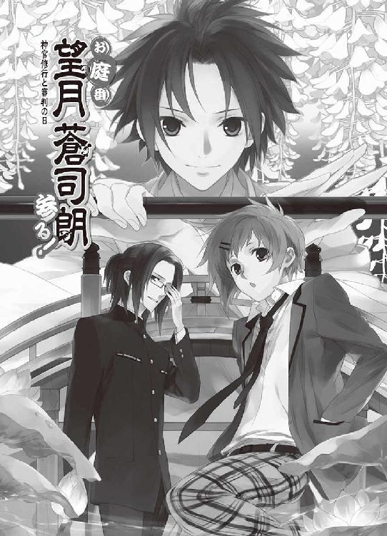
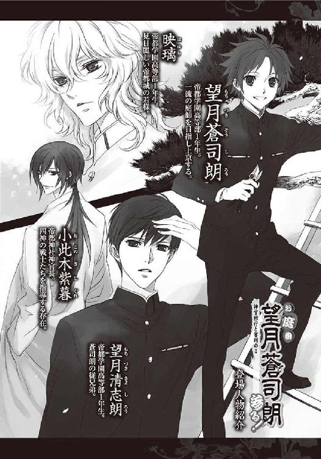
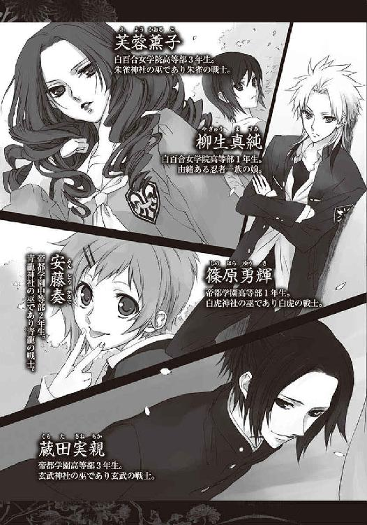
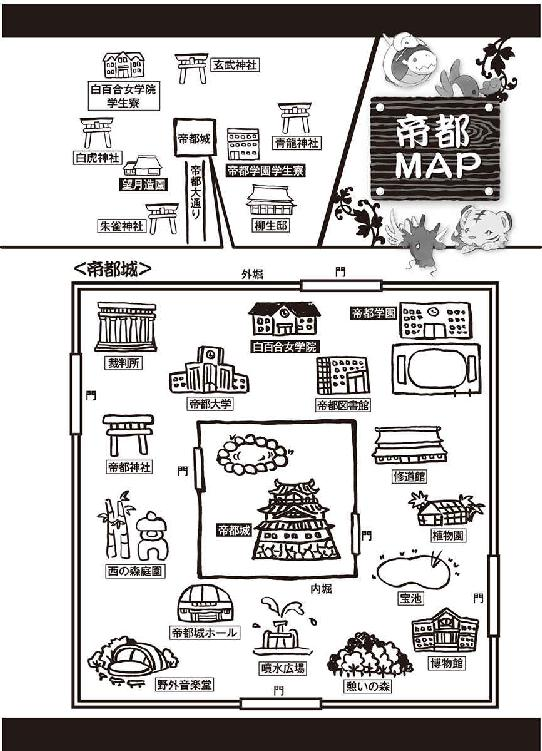
１
首都帝都、華やかなる中心地、帝都城下は四方を壁で囲まれた、強固な結界領域である。
ここは最先端の技術を駆使した新しいものと、古きよきもの、どちらも上質で最高級のものが、同時にバランスよく存在するところだ。
例えば帝都大通りには、路線バスや配送のワゴン車が走っているし、馬車や牛車、人力車も走っている。帝都城下はほとんど平地だが、段差のある細い路地も小回りが利き、早いので、ちょっとした荷物や書類は飛脚が運ぶ。
最新のものが何でも揃い、名所や史跡、様々な催事場があちこちにある帝都城下は、季節に関係なく、平日でも多くの観光客で賑わっている。帝都に住まい、仕事や勉強をしている者たちも、観光客にとっては『帝都を構成しているもののひとつ』なので、登録されている制服の着用は義務だ。
「望月造園見習い、望月蒼司朗、参る！」
研ぎ澄まされた枝打ち斧の刃が、鮮やかな銀の軌跡を描く。
すぱ！
伸びすぎていた街路樹の枝が、切り落とされて、歩道に敷かれた筵の上にぱさりと落ちた。
「大袈裟だよ、蒼くん」
無駄な格好をつけた枝打ちに、清志朗は苦笑する。
「いやー、何かこの、ひらひらする感じを堪能したくってさぁ！ へへ♡ これでオレも望月造園の仲間～♡」
屋号の染め抜かれた法被に袖を通し、竹の脚立に乗った蒼司朗は、嬉々として愛用の枝打ち斧を使って作業する。高校一年生でも小柄な蒼司朗の法被は、特注なので時間がかかった。
「うん、よく似合ってるよ」
ご機嫌な蒼司朗に微笑み、踏み台に乗った清志朗は、高枝用剪定鋏を使って作業する。
帝都城お抱え庭師である望月造園、見習い職人で跡継ぎの望月清志朗と、その従兄弟の望月蒼司朗は、本日、先輩庭師たちと一緒に帝都大通りの街路樹で剪定作業をしている。
まだ見習いなので、作業する木は蒼司朗と清志朗、二人で一本だが、揃いの法被にニッカボッカと地下足袋で、格好が決まっていると、一人前の庭師に見えて作業も楽しい。
「植木屋さーん、ちょっとこっち向いてくださーい」
カメラを持った修学旅行らしい女子高校生の五人グループに声をかけられ、蒼司朗と清志朗は作業の手を止めないまま振り向く。
「そのまま、一緒に写真撮らせてもらってもいいですかー」
若くて可愛い植木屋さんと一緒に、記念撮影♡
「いいですよ」
小さい頃から清志朗は、よく家業の手伝いをしていた。子供の庭師は珍しがられ、度々写真に撮られたので、帝都育ちの清志朗は観光客の相手もすっかり慣れっこだ。
「あ、もうちょっとこっちに立ったら、お城が入るよ。カメラ、ポストの上に置けるし」
愛想よく応じた清志朗に続けて、蒼司朗は上から立ち位置を指差して教える。
帝都大通りは帝都城に向かうメインストリートだ。記念写真なら、フレームにお城が入ったほうが見栄えがいい。ポストの上にカメラを置ければ、全員で写せる。
女子高校生たちは賑やかに移動し、一人がポストの上にカメラを置いてファインダーを覗く。
「わ、ホントだ♡ いい感じ」
「ありがとう」
「いくよー」
きゃあきゃあはしゃぎながら、女子高校生たちはセルフタイマーを使って記念写真を撮る。
「せーい......！」
「ミギャ」
「キュオ」
「チュピ」
「「♡」」
「（あ、こら......！）」
蒼司朗にくっついて、あちこちに隠れていたピヨピヨしたチビっちゃい四神たちが、観光客の写真撮影のシャッターチャンスに、ぴこりと一斉に顔を出す。
「「「「「ちょりーっす♡」」」」」
「「「「「♡」」」」」
パシャ☆！
「「「「「ありがとうございましたー♡」」」」」
思い思いにポーズも決めて可愛く写真を撮り、女の子たちは上機嫌で蒼司朗たちにお辞儀して、賑やかに去っていった。
帝都の風景アイテムの責任を果たし、にこやかに女の子たちを見送って────。
「......蒼くん」
女の子たちは背中を向けていたし振り返っても見えなかったと思うが、慌てていたような蒼司朗に、事態を悟った清志朗が、女の子たちを見送った笑顔のまま問いかける。蒼司朗も固まった笑顔のまま答えた。
「うん......。たぶん写ってるんじゃないかな☆」
すべてのカメラはフィルムを使うタイプなので、現像しなければわからないだろうが。
肉眼では見えなかったピヨ四神様が、記念写真にはくっきりと！
小柄な庭師の頭の上には赤い小鳥、胸元には白い子虎、背中には青い子イグアナ（？）、法被のポケットに、白い子蛇の巻きついた子亀。
蒼司朗のことを気に入って、蒼司朗に甘えてくっついているミニマムな動物たちが、実は帝都城の四方を守護する聖なる幻獣の四神様だとは、思うまい。
ピヨ四神様たちに特に不都合がない限り、守護領域である帝都城内や、結界領域ではいつでもピヨ四神様たちの姿が見えるのだが、城下では霊力の強い人にしか見えない。髪の合間や衣服に隠れ、もぞもぞむぎゅむぎゅするピヨ四神に、いつも蒼司朗はちょっとした挙動不審者である。
好奇心旺盛なピヨ四神様たちは、どうも、蒼司朗が何かするのに、自分たちも参加したがる傾向があって困る。
「あのな？ いなかった動物が、写真になったら写ってたら、びっくりするんだぞ？」
蒼司朗は口を尖らせて、愛用の枝打ち斧片手にピヨ四神たちに構いながら言う。
撫で撫で、ちょいちょいと触られて、蒼司朗が仕事中でちっとも構ってもらえなかったピヨ四神たちは、遊んでくれていると、くすぐったそうに喜んだ。
蒼司朗と違って、ピヨ四神様の見えない清志朗は、ピヨ四神を構って奇妙な格好をしている蒼司朗の様子に苦笑する。
（さっきのも、やっぱり『心霊写真』っていうのになるのかな......）
写っているのは、きゅるるーんとご機嫌な様子で円らな瞳を向けた、何とも愛くるしいチビっちゃい四神様たちだけれども。
「もう、出てきちゃ駄目だからな？」
「ミギャ」
「キュウ」
「ピ」
「「（しゅー......）」」
ピヨ四神を撫でて、蒼司朗は言い聞かせているようだが。
（絶対、わかってないよね......）
清志朗は思う。
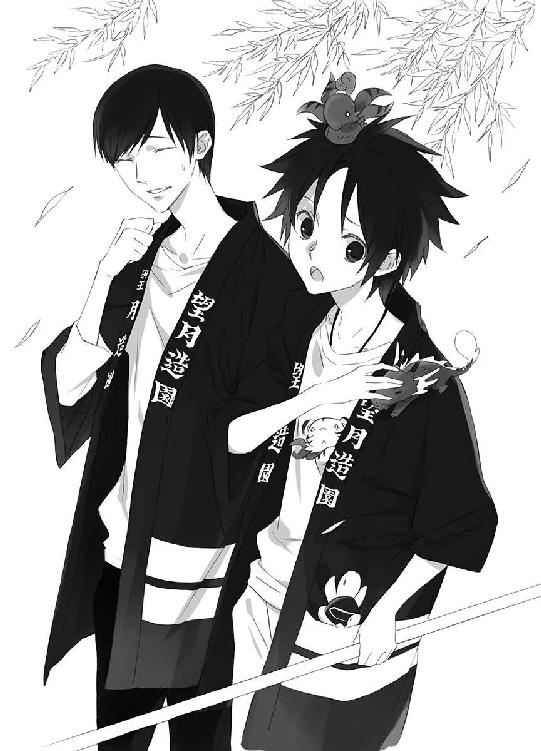
ピヨ四神は、それぞれが片方の掌の上に乗るほどの大きさで、ほのぼの赤ちゃんライフを満喫中だ。赤ちゃん動物一般にするように、根気よく言い聞かせないとわからないし、強く叱りつけると虐められたものと勘違いする。加減の難しいところだが、面倒見のいい性格らしい蒼司朗は、付き合いよくがんばっている。さすが、ピヨ四神の見初めた人間だ。
そのうち、『見たこともない可愛い動物が一緒に写っていた』と、蒼司朗と撮った写真が密かに人気になるかも知れないが、ピヨ四神は好奇心旺盛でも、気紛れでちょっと怖がりで、人見知りだ。ピヨ四神を撮ろうという気迫まんまんで蒼司朗と写真を撮ろうとしたなら、きっと嫌がって出てこないだろう。
大通りの時計台が、午後四時半の鐘を鳴らす。
「蒼くん、今日、奥庭用の灯籠が出来上がるんじゃなかったっけ」
「あ、そうだ」
清志朗に言われて、蒼司朗は思い出す。
蒼司朗は、望月造園の見習い庭師でありながら、帝都城の奥庭の専任庭師でもある。
ひらたく言えば、ピヨ四神の休憩場所（？）の奥庭を、居心地よく整える役目だ。
「取りに行かなきゃ。────あと、ごめんね、清ちゃん」
ひらりと身軽く、蒼司朗は青竹で組んだ脚立から飛び下りる。
蒼司朗は今日この後、石材屋で灯籠を受け取って、それを奥庭に設置するという作業になる。
清志朗と二人で行っていた、帝都大通りの樹木の剪定作業だが、蒼司朗はここまでだ。
「いいよ。がんばってね、蒼くん」
「うん！」
愛用の枝打ち斧片手に、蒼司朗は元気よく清志朗に手を振って、駐車場に駆けていった。
町のちょっとした空きスペースを有効利用して設けられた駐車場に、望月造園の作業車と一緒に、蒼司朗は自分の小型ショベルカーを停めていた。小回りの利く、この便利な小型作業車は、生まれ育った巌手から蒼司朗が持ってきた。立派な庭師になる修業のため、一人帝都に旅立った蒼司朗を応援し、巌手城の殿様と庭師たちがくれた餞別だ。ちゃんと運転免許と作業資格をとってから帝都に来たので、蒼司朗はこれで公道も走る。
「よーし、行くぞー！」
頭の上にいたチビ朱雀を肩に乗せ替え、黄色い安全ヘルメットを被って準備完了！
「ピピ」
「ミギャギャ」
「キュアキュオ」
「「♡」」
ピヨ四神も、発車オーライとひとはしゃぎする。
小型ショベルカーのエンジンを始動させて、蒼司朗はピヨ四神を連れて石材屋に向かう。
オモチャのような緑色の小さなショベルカーは、キュルキュルと軽快にキャタピラ音をさせながら、滑らかに駐車場を出た。
石材屋までは、駐車場から五百メートルほど。石材屋から帝都城の奥庭までは、六キロぐらい。小型のショベルカーは無骨な作業車で、ちっともロマンチックでもゴージャスでもないけれど、安全運転で快適だ。蒼司朗大好きのピヨ四神にとっては、楽しいドライブである。
望月造園の見習い庭師は、高校一年生なのに中学生に間違われるほど小柄だが、いつでも元気いっぱいだ。真面目で素直で仕事熱心で、付き合いのある業者の評判もいい。
「こんにちはー！ 望月造園ですっ！ 今日受け取り予定になってた石灯籠、いけますかー？」
キュルキュルと小型のショベルカーで石材置き場に乗り入れ、大きな声で尋ねた蒼司朗に、並べ置いた石碑の陰から店の主人が顔を出す。
「いらっしゃい、蒼司朗くん。出来上がってるよ」
こっちこっちと呼ばれて、蒼司朗は小型ショベルカーをゆっくり動かして主人についていく。
石灯籠は筵に巻いて梱包され、いつでも持っていけるように準備してあった。
「じゃあ、これにサインね」
小型ショベルカーに近づいた石材屋の主人は、運転席から降りてきた蒼司朗に、クリップボードに挟んだ納品書を渡す。
「はい」
蒼司朗は品名をしっかり確認して、受け取りにサインし、主人にクリップボードを返す。主人は複写式になっていた納品書の控えを取って、残りを蒼司朗に渡す。
「んじゃ、これ。左近さんによろしくね」
「はい、ありがとうございました」
お辞儀して、納品書を法被のポケットにしまい、蒼司朗は小型ショベルカーの運転席に乗りこむ。石灯籠は、器用にショベルアームを動かして、ショベルの中に入れた。重量があるために、なかなかいい安定感である。
「お世話になりましたー！」
キュルキュルキュル♪
軽快にキャタピラの音をさせ、石灯籠を受け取った蒼司朗は、石材屋を出て帝都城に向かう。
奥庭に設置予定の新しい石灯籠は、身体の小さいピヨ四神にとっては、庭の景観を整えるアイテムというよりも、新しい遊び道具、アスレチック設備が増えるようなものだ。
「ミギャミギャ」
「キュイキュイ」
「ピチュチュピピ」
「「（しゅ～）」」
どうやって遊ぼうかと、ピヨ四神はすでに興奮状態だ。懐や背中、肩の上、ポケットでピヨ四神に懐かれている蒼司朗は、くすぐったい。
「えーと、まず伯父さんのとこに行って、次に小此木神官長のとこに行って、それから奥庭に設置だな」
「ミギュギュ？」
「キュオ」
「ピ」
「「（しゃー......）」」
すぐに奥庭に運ぶものだとばかり思っていたピヨ四神たちは、怪訝な様子で低く鳴く。
「んー？ まず、物の確認してもらわなくちゃいけないだろ？」
伯父である庭師、望月造園の棟梁・望月左近に、この石灯籠でいいか、確認してもらわなくてはならない。望月造園は帝都城御用達の業者で信用されているが、蒼司朗はまだ見習い庭師で、納入された物についての決定権はない。預かってきた納品書を渡し、伯父に石灯籠を見せなくてはいけない。
「小此木神官長には、お清めをしてもらわなくちゃな」
四神様のいる、神聖なる奥庭に設置する石灯籠である。神官長によるお清めも必須だ。
「ブフ」
「ブー」
「チュン」
「「......」」
「んーだよ☆ 不満そうな顔したって、駄目なものは駄目。ちゃんと手続きとらないといけないんだからな。そういうことになってんだから」
これからすぐ、遊ぶつもりだったピヨ四神はお預けを食らって不満たらたらだが、そういう手順になっているのだから、仕方ない。
「早く設置するためにも、さくさくっとやっちまおう！ いいかー！」
「ミギュー！」
「キュオー！」
「ピチュピー！」
「「（しゅー！）」」
元気よくシュプレヒコールをあげるようなピヨ四神に笑って、蒼司朗は小型ショベルカーをキュルキュルと走らせる。
伯父の望月左近は、今日のこの時間は帝都城の憩いの森で、作業を行っているはずだ。
歩行者に注意して徐行して、南門から帝都城の外堀の内に入った蒼司朗は、噴水広場から東に向かい、憩いの森を目指す。
木陰から人が出てこないか、よーく注意しながら、蒼司朗は小型のショベルカーを進める。
「えーと、伯父さん、伯父さん......」
左右を確認しながら、憩いの森を進んでいた蒼司朗の耳に。
「きゃー！ 泥棒っ！」
遠くのほうで叫ぶ声が聞こえた。
「あー......、またかよ☆」
観光地である帝都は、観光客狙いの不心得者も大勢やってくる。
どこから声がして、どこにその犯人が来るだろうと、蒼司朗はきょろきょろと周りを見回す。
「ミゴゴ！」
ぴょいと懐から飛びだしたチビ白虎が、ハンドルに飛びつく。
「？ 何？ 停めるのか？」
「キュイキュイ！」
おぶさるように蒼司朗にしがみついているチビ青龍に、後ろ足をバタバタされ、蒼司朗は小型ショベルカーを停める。
「ピチュ、チュチュピチュイ」
肩に乗ったチビ朱雀に、ぱたぱたと手羽を動かされ、蒼司朗は眉を顰める。
「......え？ 何？ 下ろすの？」
運んできた石灯籠を、ここに？
解せないが、蒼司朗はショベルアームを動かして、柔らかい土のところに、運んできた石灯籠をそっと下ろす。
「「（しゅーしゅーしゅー！）」」
「は？」
蒼司朗はチビ玄武と、それに巻きついているチビ蛇に注目し、しきりにジェスチャーで示すことを読み取る。
「穴を掘るのか？」
よくわからないが、ピヨ四神がしてほしいと望むのだから、何かあるのだろう。
蒼司朗はショベルアームを動かして、穴を掘る。
「こんなもん？」
「ミゴゴ」
まだ？
「これっくらい？」
「キュ～」
まだまだ？
「これでどうだ！」
「チュピュ～」
もっと？
「よっし！ ここまでいっちまえ！」
「「♡」」
ざくざくと掘り進め、やっとピヨ四神が満足した頃には、小型のショベルカーは屋根の高さまですっかり穴の底に鎮座している状態だった。穴の横には、掘り起こした土で幾つかの小山ができている。蒼司朗は、アームの先端で穴の底を押し、お辞儀してお尻から、ずるっと上がるようにショベルカーを動かし、バックで穴の底から外へ這い上がる。
「......何か、風景変わってなくね？」
自分でやってて、アレだが☆
しかし、やったものは仕方ない。蒼司朗は誠心誠意、ピヨ四神の御希望に副っただけだ。
「さて、と。石灯籠は......」
掘り起こした土の小山の向こうに、確か置いたはず。
伯父を見つけて、確認してもらわなければと、ショベルカーを動かした蒼司朗は、またそっとショベルアームの先に、荷物をすくいあげようとして────。
物凄い勢いで、こちらに向かって走ってくる、男性らしい人影が見えた。
「え？」
蒼司朗が目を瞬いた次の瞬間。
疾走していた男性の姿が、忽然と消えた。
２
「馬っ鹿野郎！ テメェ何考えてやがる！」
仁王立ちの伯父に大目玉を落とされ、小型ショベルカーの横に正座をさせられた蒼司朗は、びくりと肩を震わせる。
「すみませんっ......！」
「ああん？ 聞こえねぇなぁ。男なら、腹にがっつり力入れやがれっ！」
「はいっ！ すみませんっ！」
小柄な身体をより小さく縮こめても、謝罪の声だけは大きく！
蒼司朗の背後、地面に置かれた安全ヘルメットの中で身を寄せあっているピヨ四神は、びくびくしながら、叱られている蒼司朗を不安そうに見つめる。
望月造園の親方と見習い庭師の横を、駆けつけた救急隊員が、穴に転落して失神している男性を担架に乗せ、ばたばたと運んでいった。
帝都警察付属病院に、急患が運ばれていく。
どこか近くで起きた、観光客を狙った引ったくり。ピヨ四神は、それを捕まえるための落とし穴を、蒼司朗に掘らせたのだった。
身を隠しやすい木立のある憩いの森に逃げこんだ犯人は、ピヨ四神の狙いどおり、掘り起こした土の山のせいで見通しの悪くなっているこちらに向かって逃げてきた。
外堀のところには門番がいて、引ったくり犯が逃げてくることは、花火で知らされている。急いで門を通って外に出ようとする挙動不審者は、門番に呼び止められるし、ゆっくり歩いていては、被害者や追いかけてきた警備員に捕まる。財布の中身だけを抜いて盗んだ鞄ごと捨てて、証拠を隠滅したり、帽子や上着というアイテムを替えて、別人を装うのは犯人がよくやることだ。走って逃げてきた引ったくり犯は、小細工をする前に、見事、穴に落っこちた。
そうして、盗られた物は無事、被害者の手に戻った。
しかし☆
穴がちょっとばかり、大きくて深すぎた。
引ったくりをするような不心得者に、ピヨ四神が与えた罰に、誰も意見はできない。
ピヨ四神に意見はできないが、望月造園の見習い庭師は、別！
憩いの森に掘られていたのは、落ち方が悪ければ、首や背中の骨を折っていてもおかしくないような、危険な大穴である。今回は幸いにも、気絶ですんだようだが、だからといって見すごせるものではない。
庭師の見習いで甥っ子の蒼司朗に対し、監督責任のある親方の左近が雷を落とすのは、当然のことだ。
「だいたいテメエ、こんなとこに、勝手に穴掘っていいと思ってやがるのか！」
「はいっ！ すみませんっ！」
ピヨ四神のリクエストに、ただ応えただけの蒼司朗には、善悪という考えはなかった。
なさすぎたのが、悪かった。
考えなしの行動だったことは、蒼司朗自身、よーくわかっている。
常識で考えれば、帝都城の憩いの森に大穴を掘れば、警察を呼ばれる。迷惑行為の現行犯で逮捕されなかったのは、蒼司朗が帝都城出入りの造園業者の関係者であり、帝都城を守護する奥庭の四神様のお世話係だからだ。
「ちょっと大目に見てもらってる、特別扱いされてるからって、いい気になってんじゃねぇぞ！」
「はいっ！ すみませんっ！」
「穴に落ちるのは、絶対にあの引ったくり野郎だとは、限らなかったんだからな！」
「はいっ！ すみませんっ！」
「取り返しのつかねぇことになってたら、テメエ、どう責任とるつもりだったんだ!?」
「はいっ！ すみませんっ！」
「蒼！ テメエはいったい何年何月何日何時何分から、他人様を罰することができるほど、偉い人になったんだ？ ああん？」
「はいっ！ すみませんっ！」
反論できないことを言われ、ひたすら平謝りするしかない蒼司朗に、応援に呼ばれてスコップで穴を埋め戻していた池波が、ちょっと作業の手を止めて、振り返る。
「親方ぁ、蒼ちゃん、十分反省してますよー？」
「テメェうるせぇ、池！ 黙ってろい！」
「もう、こんなことしねぇよなー、蒼ちゃん」
池波の言葉に、蒼司朗はぶんぶんと頷く。
「もう許してあげちゃー、どうですかい？」
「オメーは黙って穴埋めてりゃいいんだよ！ つべこべ言ってんじゃねぇ！」
「いや、つべこべじゃなくってですね......！」
「うるせぇうるせぇ、うるせぇったらうるせぇっ！」
嚙みつくように怒鳴りつけられて、池波もキレて怒鳴り返す。
「親方がいっちゃんうるせぇっすよ！」
「何だと!? テメェっ！」
「本当に！ 申し訳ありませんでしたっ!!」
摑みあいの喧嘩に発展しそうな親方と池波の口論に割りこむように、蒼司朗は大声で謝罪する。
「そのくらいで、もうよろしいのではありませんか？」
くすくすと涼やかな笑い声が聞こえ、親方と蒼司朗たちは振り返る。
帝都神社神官長の小此木紫暮は首を傾げ、望月左近ににっこりと微笑む。
「蒼司朗くんも、よぉくわかりましたよね？」
「はい！ 本当に、申し訳ありませんでした！」
大きな声で言って、蒼司朗は正座したまま深々と頭を下げる。
小此木神官長は蒼司朗に近寄ってしゃがみ、低くなっている蒼司朗の頭を撫でる。
「十分懲りたでしょうから、もう二度としないでしょう。調子に乗ってちょっと羽目をはずしちゃうなんてことは、やんちゃ盛りの若い時分には、よくあることじゃないですか。間の悪いときなんて、警察のお世話になっちゃったりね。親方も昔、そういうことがあったんじゃないですか？ ねぇ」
尋ねるというよりは、思い出させるというような微笑みを向けられ、親方は口の中で唸りを嚙み殺し、池波は肩を震わせて笑う。
下げた頭の上へ小此木神官長が手を乗せたので、蒼司朗は身体が二つ折り状態のままになっていて、だんだん苦しくなってくる。
（う、っく......）
親方に怒鳴りつけられているよりも、正直キツイ。
（小此木神官長っ......！）
爽やかな笑みを浮かべながらも、小此木神官長はさりげなく意地悪だ。手の下にある蒼司朗の頭が、苦しくてぷるぷるしているのがわかっているはずなのに、柔らかい癖毛を撫でている。
「ですから、今日はこのへんで」
小此木神官長は近くの地面に置きっぱなしになっている、筵に包まれたままの石灯籠をちらりと見る。親方が長々と蒼司朗を説教していては、奥庭に石灯籠を設置できない。設置の前にお清めを行うことになっている小此木神官長も、いつまでも待ってはいられない。
石灯籠を受け取った蒼司朗が帝都城に来るはずなのに、いつまで待ってもお呼びがかからないので、小此木神官長自ら様子を見にきたのだとわかり、親方は恐縮する。
こほんとひとつ、咳などしてみて。
「......池、ちょいとそっちの包み、開けてみろ」
「へい！」
池波はスコップを置き、いそいそと筵にかけられている縄を解く。
親方が石灯籠を確かめているのを眺めながら、しゃがんだ小此木神官長は蒼司朗の頭を撫で続ける。
「迷惑をかけましたね、蒼司朗くん」
「......い、え......」
「ミギュ～」
「キュイ～」
「ピ～」
「「（ふしゅ～）」」
蒼司朗の背後に置かれた安全ヘルメットに入っているピヨ四神は、うるうるの涙目で小此木神官長を見上げる。
帝都城下でも、内堀の中に入らなければ、ピヨ四神の姿は一般の人の目には見えない。帝都城のお抱え庭師だが、伯父もピヨ四神が見えるのは内堀に入ったときだけだ。伯父には見えないとわかっていて、蒼司朗はいつも自分にくっついているピヨ四神を、ヘルメットに入れて自分の背後に置いた。ピヨ四神は帝都城の守護神であり、たとえ見えない状態であっても、誰かに叱らせるわけにはいかない。
（蒼司朗くんは、ちゃんとわかってくれてるんですね）
蒼司朗の心遣いが、小此木神官長は嬉しい。
誰かに教えられなくても、蒼司朗は大切なことを逃さずちゃんとこなしてくれる。
「......人を穴に落とすなんて、どこで覚えたんでしょう......？」
蒼司朗は帝都に来てからそういう悪戯に引っかかったことはないし、そんな話を聞いたこともない。落とし穴なんて、想像してもいなかったから、ピヨ四神に深い穴を掘ってくれとせがまれても、よくわからなかった。
頭を押さえられ、俯いてくぐもった声で言った蒼司朗に、小此木神官長はちょっと斜め上を見上げる。
「あー......。社務所で四神様を預かっていたときかなー。談話室に置いてた雑誌に、そんなのが載ってたような？」
（オレや神官の人たちが訓練してたときに、この人、漫画読んでたのか......）
状況が目に見えるようで、蒼司朗は溜め息をつく。
小此木神官長はとっても偉い人だが、けっこうズボラでいい加減である。
へらっと笑って、小此木神官長は蒼司朗の頭から手を放した。
頭の上の重みからやっと解放され、顔を上げた蒼司朗は、ほうと息を吐く。
「えー、とにかく」
小此木神官長は、こほんと咳払いしてピヨ四神に微笑む。
「蒼司朗くんが叱られちゃうようなことは、やめましょうね？」
「ミギュウ......」
「キュァン......」
「ピー......」
「「（しゅー）」」
ピヨ四神たちは、しゅんとうなだれて、振り向いた蒼司朗に飛びつく。
ぐりぐりうりうりと鼻面を擦りつけてくる、ちびっちゃい神様たちに、蒼司朗は苦笑する。
「うん、オレが悪かったんだから、叱られるのは仕方ないよ。でも、誰かが落ちるような穴は危ないから、もう掘らないよ。いいね？」
人を落とすための穴を掘ろうなんて、蒼司朗をけしかけたピヨ四神も悪いが、やっていいことかどうか、冷静に判断しなかったのは、蒼司朗の責任だ。ピヨ四神はまだ幼くて、人間の常識にも疎く、善いことと悪いことの区別がつかない。何かやった結果、どうなるかの想像もできない。ピヨ四神のお世話係になった蒼司朗は、そういうところを、きちんと教えていかなければいけないのに、役目を果たせなかった。
親方の大きな怒鳴り声が怖かったピヨ四神は、きゅーっと蒼司朗にしがみつく。
すっかり脅えているピヨ四神の様子に、小此木神官長は思う。
（これってあれですかね。兄弟で、上の子が叱られているっていうやつ）
兄弟の下の子は、要領がよく、いい子で親に叱られることがない。何をどうしたら叱られるのか、上の子が叱られるのを見ていて、覚えるのだ。
悪いことをしたからと、直接叱りつけても、悪いことの認識のないピヨ四神には、虐められているとしか思えない。臍を曲げられたり、機嫌を損ねて祟られたりという危険がある。だが原因がピヨ四神にあり、結果どうなるかわかっていなかったのに蒼司朗が叱られるのは、ピヨ四神の本望ではない。
ピヨ四神を後ろに隠し、蒼司朗が一人で叱られているのを見て、ピヨ四神は『いけないことをした』のだと理解した。
蒼司朗がたっぷり可愛がって守っているから、ピヨ四神はますます蒼司朗のことが大好きになって、情緒豊かで優しい、いい神様になっていく。
「蒼！ 神社に持っていけ！」
石灯籠の確認を終えた親方の声に、蒼司朗は振り向く。
「はーい！」
これで、正座で反省もおしまい。
「んじゃ、僕も神社に戻りましょうか」
しゃがんでいた小此木神官長は、袴を綺麗に捌いて腰を上げる。
「準備はできてますからね」
「はいっ！ すみませんっ！」
もう一度頭を下げて返事して、蒼司朗はピヨ四神をくっつけたまま立ち上がり、安全ヘルメットを被った。
奥庭に石灯籠を設置したら、今日は金曜日なので、蒼司朗は帝都学園の学生寮に戻らず、帝都神社に泊まりこむ。蒼司朗は庭師見習いだが、奥庭の四神の守護を受けるに相応しい人間となるため、神官の修行中なのだ。
蒼司朗は小型ショベルカーを使って、帝都神社まで石灯籠を運ぶ。石灯籠の到着を待ちわびていた帝都神社の神官は、荷車に載せて石灯籠を祭壇まで運んだ。
「蒼司朗様も、参加しますか？」
鈴宮神官に、一緒にお清めの祝詞をあげるかと誘われたが、蒼司朗は一歩下がって遠慮する。
「駄目ですよ！ オレ、こんな格好なんですから！」
いくら頭数にもならない新参者でも、きちんと神官装束に身を包んだ神官たちのなかに、造園業者の法被姿で交ざることはできない。奥庭で作業するために、これから蒼司朗は社務所で身を清めて神官装束に着替えるが、支度ができるまで待っててくださいなんて、とてもではないが言えない。
「そうですか？ 何事も経験かと思ったんですが」
「すみません......」
親切心で誘ってくれたのに、期待に副えず、蒼司朗は深々と頭を下げ、小型ショベルカーで社務所に向かった。
奥庭に穴を掘る予定はないので、小型ショベルカーは社務所横の職員用駐輪場に停めておく。
「ミギャギャギャギャ！」
「キュアキュオオ！」
「ピ、チュチュッピ、ピチュ！」
「「♡」」
更衣室（蒼司朗専用の立派な個室）に入った途端、くっついていた蒼司朗から飛び下りたピヨ四神は、雄叫びをあげながら浴室に猛ダッシュだ。......赤ん坊なので尻が重そうで、動きはもちもちと、まったく俊敏性に欠けるが。
「溺れるなよー」
さっくりと追いついて、蒼司朗は浴室の扉を開け、栓をした浴槽にピヨ四神を入れて、シャワーを出す。衣服を脱いだ蒼司朗が浴室に入る頃には、浴槽に少し溜まった温水で、ピヨ四神が機嫌よく遊んでいる。蒼司朗は、シャワーで軽く汗を流し、ピヨ四神たちを洗ってやって、清めた身に神官装束をまとって、さっぱり気持ちよくなったピヨ四神と奥庭に向かうのだ。
お清めの終わった石灯籠は、台に載せて神官たちが担いで、奥庭の門の前のところまで運ばれていた。
「では、後は任せましたよ、蒼司朗くん」
走ってやってきた蒼司朗に、きちんと石灯籠を引き継いで、小此木神官長は微笑む。
「はい！ ありがとうございました！」
元気よく返事して、蒼司朗は奥庭の門を開く。
奥庭に放されたピヨ四神は、元気にそこらじゅうを走り回って遊びだした。
奥庭の門は、誰でも開けるわけではない。門を開いて自由に中に入れるのは、奥庭の四神の守護を受ける帝と若様、そして奥庭の管理人である蒼司朗だけだ。神官長であっても、蒼司朗が門を開けて出入りするときにしか、奥庭の中の様子は見られない。
「────大分、草が落ち着いてきましたね」
「苔の色も鮮やかになりました。いい感じですよ」
にこにこと微笑みながら、蒼司朗は石灯籠をパーツごとに奥庭の中に運びこむ。
「木の枝が伸びて、葉を茂らせたり、花が咲いてくれれば、もっと綺麗で見応えのある庭になるんですけど」
「焦らなくてもいいですよ」
草の生長と枝葉の茂りを比較してはいけない。
（だけど、きっと清ちゃんなら......）
南公園の樹木に、花芽をつけさせたように、もっと何でもうまくやれるに違いない。
まだまだ発展途中の奥庭に、鈴宮神官も微笑む。
「蒼司朗様らしい、いいお庭に仕上がるといいですね」
（オレ、らしい......）
鈴宮神官の言葉を、蒼司朗はゆっくり胸の中で繰り返す。
誰かを羨むことはない。
求められているのは、蒼司朗の造る庭なのだ。
「はいっ！ がんばります！」
３
金曜日の夕方から日曜日の午前中、蒼司朗は帝都神社に行って、寮には戻らない。週に二晩だけだが、この日は同室の清志朗も、実家の望月造園に戻ることにしている。
「がんばるなぁ、蒼くん」
帝都大通りでの作業を終えた清志朗は、蒼司朗のいる帝都城のほうを振り仰ぐ。
（負けていられない）
清志朗は望月造園の一人息子で、次期親方だ。帝都城お抱え庭師の名誉は、清志朗の代になっても失いたくない。清志朗は父親と同等かそれ以上の、帝都一の庭師にならなくてはいけない。
蒼司朗と清志朗が二人で剪定した木を、片づけを終えた望月造園の庭師の笹川が見上げる。
「────こっからこっちが蒼ちゃんで、こっちが坊っちゃんでしょう？」
枝を指差され、清志朗は頷く。
「はい。そうですけど......」
「やっぱりなぁ！」
腰に手を当てた笹川は、大口を開けて豪快に笑った。
清志朗の目には、同じように見えるのだが......。
「わかるんですか？」
「わかるぜ？ 蒼ちゃんのほうが大雑把で豪快だ。もうちょっと残しゃいいのに、ってとこまで、ざっくりいっちまってら」
「それは......きっと時間がなかったから」
蒼司朗は作業途中で、時間になったので、行ってしまった。
「それに、蒼くんは枝打ちに斧を使っているし」
枝打ち斧は昔から使われている道具だが、時代と共にどんどん便利に改良されている鋏を使うよりも、扱いが難しい。枝打ち斧が自在に使いこなせれば、一流の庭師として罷りとおる。
「道具の問題じゃねぇなぁ、坊っちゃん。時間ってのも、あるだろうがな。まだあいつぁ、木の心ってやつを摑んでねぇな」
（木の心......）
そんなものは清志朗だって摑んでいない。父親がやった仕事を、ただ真似しているだけだ。
「坊っちゃん、もっとよーく木をご覧なさい。そうすりゃ、そのうちわかってきます。坊っちゃんなら、親方の息子として恥ずかしくない、帝都一の庭師になれますよ」
笹川はそう言うけれど......。
「────はい、がんばります......」
（本当に僕にできるんだろうか）
（ただ、そうなってほしいっていう希望だけで、そう言ってもらえてるんじゃないだろうか）
不安に押し潰されそうになりながら、清志朗は笹川に頭を下げた。
『緑の石』。
不安になる度に、蒼司朗の持っている望月家の家宝である宝石のことを思い出してしまい、清志朗は自己嫌悪に陥る。
（『緑の石』の力を使っても、それは僕の本当の力じゃない）
植物を生き生きと萌えさせる力を有する、不思議な石。その力は本物だが、いつまで、どのくらいその不思議な力を使い続けることができるのか、わからない。『緑の石』の持つ不思議な力が消滅したときのことを考えると、恐ろしい。絶対に使うべきではない力であることはわかっている。わかっているのに────。
あの石のことが忘れられない。
（僕は弱い......）
溜め息をつき、切り取った枝葉を箒で集めて包み、竹製の脚立を畳んで肩に担ぎ上げた清志朗は、ポストに凭れて立っている学生服の少年に気づく。
「────篠原くん。こんにちは」
（帝都城からの帰りかな）
「......おう」
ちらりと清志朗を見て、篠原勇輝はぞんざいに返事をする。
制服の詰襟のカラーをいつも留めず、シャツの裾は出したまま、ウォレットチェーンの見えているスラックスは腰穿き、持ってる鞄はいつでもぺったんこで、優秀で品行方正な生徒ばかりの集まる帝都学園の生徒としては、篠原勇輝は異色な存在だ。
見た目は、いかにも不良っぽく、ちょっとした行動も乱暴だが、本質は真面目で努力家の篠原勇輝は、学業成績もよく、運動神経が優れている。実家は帝都の四大神社のひとつである、白虎神社。
白虎神社の神主の息子である篠原勇輝は、帝都城の若様のお世話係で御学友であり、帝都を守護する『白虎の戦士』だ。家柄もお役目も、ただでさえ近寄りがたいが、うっかり見つめてしまったなら、野生のニホンザル並みの威嚇が返ってくる。
（相変わらず、怖いなぁ）
機嫌を損ねたくはないので、篠原勇輝のほうから他所を向いてくれるのは、ありがたい。
篠原勇輝や清志朗たちの通っている帝都学園は中高共に全寮制だが、帝都に実家のある学生は、週末だけ実家に帰ることもある。幼い頃から身体の弱い若様は、今週末もお城に帰っただろう。若様がお城の外にいるとき、篠原勇輝は必ず若様と一緒にいる。こんな場所に一人でいる篠原勇輝は、きっと若様をお城に送り届けた後だ。
（買い物してから、家に帰るのかな）
白虎神社は帝都の西にある。お城から白虎神社に帰るなら、帝都大通りに来るのは遠回りだ。何か用事があって、こちらのほうに来たと考えるのが妥当だろう。
二人とも帝都生まれで帝都育ち、学年が同じなので、保育所時代から名前も顔も知っているが、清志朗は友人と呼べるほど篠原勇輝と親しいわけではない。他の生徒よりも学外でも顔を合わせる機会が多いのは、望月造園が帝都城のお抱え庭師であり、篠原勇輝が白虎の戦士だからだ。
仕事の終わった清志朗は、持ち帰りの枝葉のゴミを持ち、竹の脚立を担いでポストの前を通る。
「────あいつ本気か？」
ぽつりと漏らした篠原勇輝の声が、清志朗の耳に入る。
「え？」
清志朗は足を止めて振り向いたが、篠原勇輝はそっぽを向いている。
（僕に言った、んだよね？）
「......あいつって......？」
一体何のことだろうと、清志朗は遠慮がちに尋ねた。
ぎりっと音がしそうなほど、険しい表情になった篠原勇輝は、ポストに凭れたまま清志朗を睨む。
「あいつって言やぁ、あのチビのことに決まってんだろーがよ！ 蒼司朗だよ！」
嚙みつくような剣幕で言われ、清志朗は思わず身を退く。
何のことだかわからないという、驚いた表情の清志朗に、篠原勇輝は怒鳴る。
「あの馬鹿、マジで神官になるつもりかよ!?」
大声に驚いて、近くにいた通行人が二人に注目し、様子を窺いながら怖々離れた場所を通っていったが、篠原勇輝はそういう些細なことを気にしない。
（......不良に絡まれてる植木屋、かなぁ）
傍目にはおそらくそう見えるのではないかなと、清志朗は思う。
学年代表の生徒でもある優等生の清志朗は、誰に対しても人当たりがいい。清志朗は篠原勇輝を小さい頃から知っているので、怖いからと敬遠することはない。お互いに知っているので、篠原勇輝も遠慮がない。喧嘩腰なのは、いつものことだ。
（蒼くんが神官にって......）
思いがけない問いかけに、清志朗は目を瞬く。
（篠原くんは、蒼くんのことを気にしてくれてるのかな）
篠原勇輝は、きょとんとしている清志朗を睨む。
「どうなんだよ!?」
ぐいと近寄ってきて睨まれ、清志朗は苦笑する。
「うん。蒼くんはがんばるみたいだよ。本物の『帝都城の奥庭のお庭番』になるんだって」
今のままでは、ただ『奥庭に入ることを許された庭師』だから。奥庭の四神と四神変化することが許されるなら、きちんと四神の戦士として、蟲を浄化したい。
「できるわけねぇ！」
大声で断言する篠原勇輝に、温和な清志朗もさすがに気分を害する。
「......蒼くんは、とっても努力家だよ。蒼くんが一生懸命やることで、これまでにできなかったことはないから」
事故で酷い怪我を負い、一生松葉杖を使わなければ歩けないだろうとまでお医者さんに言われていたのに、つらいリハビリを乗り越えて、普通に歩いたり走ったりできるようになった。リハビリのひとつとして始めた剣道も、巌手圏の中学生選手権で優勝するほど強くなった。最高の偏差値で知られる、帝都学園の入学試験にも合格した。
だからきっと、蒼司朗は立派な庭師になるだろうし、神官の資格だってとるだろう。奥庭の四神様と四神変化して、四神の戦士として活躍することもできるはずだ。
きっぱり言いきって、澄んだ瞳で清志朗に真っ直ぐ見つめられ、篠原勇輝は居心地悪そうに視線を逸らす。
「......あいつ、庭師になるんだろ？ そのために帝都に来たんだろ？ いつもいつも、馬鹿みたいに、商売道具持ち歩きやがってさ......！」
蒼司朗は愛用の枝打ち斧を、学校にいるときもずっと自分のそばに置いている。教室移動の授業や体育のときも、持って行く。
「蒼くんは、とても腕のいい一流の庭師になるよ」
清志朗は断言する。
自分の将来は不安でならないのに、蒼司朗のことは迷うことなく言葉になった。疑う気もない。
「だったら！ その修業だけしてりゃいいじゃねぇか！ 神官なんて目指さずに！」
篠原勇輝の言葉は間違っていないが、蒼司朗は『奥庭のお庭番』として、恥ずかしくない働きをしたいと願った。本当は神官しか入れないはずの奥庭だから、順序は逆だが、これから神官になろうとしているのだ。
「蒼くんなら、大丈夫だよ」
（だって、篠原くんたちも、高校生で神官の資格を持ってる。安藤くんなんて、中学生だ）
清志朗の眼差しから、言いたいことが伝わって、篠原勇輝は苛々しげに舌打ちする。
「......すげえ大変だったから、無茶だって言ってんだよ......！」
経験者だけがわかることを吐露され、清志朗は驚く。
陰でどんなに努力しても、篠原勇輝はそれを口に出すような人間ではない。
「俺は保育所に入る前から、親父たちにくっついて神殿で祝詞をあげてた。そういうの、お前もわかるだろ？」
神社の子供である篠原勇輝がそうだったように、清志朗も幼い頃から剪定の真似事をしていた。
「......うん」
そんな篠原勇輝でも大変だったと言うのだから、それはもう、清志朗の想像も及ばない。
「あのチビが誰より負けず嫌いなのは、よーくわかってるよ！ だけど、現実に、無茶なことってあっだろ!? 怪我したり、取り返しのつかねぇことになってからじゃ、遅いんだよ......！」
篠原勇輝は蒼司朗のことを、気にしている、だけではない。
（心配してくれてるんだ......）
清志朗は確信する。
言葉遣いは乱暴で、喧嘩腰だけれど、蒼司朗のことを心配してくれている。
他に誰も言ってくれなかったことを、篠原勇輝だけが言ってくれた。
この前、無茶な四神変化で危ないところだった蒼司朗を、血相を変えておぶって病院まで連れてきてくれたのは、篠原勇輝だった。蒼司朗に輸血するための血液が足りなくて、同じ血液型だった篠原勇輝と清志朗は、蒼司朗に献血した。
「......お前が、あいつに一番近いところにいる。もしも、ヤバイなと思ったら......、止めてくれ」
俯いた篠原勇輝の言葉に、清志朗ははっとする。
「あいつは絶対、弱音吐かねぇだろうから」
（そうだ、蒼くんは......）
一度決めたことは、何が何でも遣りとおそうと、意地になる。自分から、やめたいとは絶対に言わない。これまではきっと、いい方向に転んできただけだ。一度も挫折しない人間なんて、いない。がんばったからと、何でも思いどおりの結果が出せるわけではない。
（蒼くんに期待ばかりかけちゃいけない）
それは、望月造園の跡取りとして、幼い頃から清志朗が感じてきたプレッシャーと同じだ。
（僕が......、一番わかってあげなくちゃいけなかったのに......）
蒼司朗が唯一、弱音を吐ける相手でなければいけなかったのに、篠原勇輝に言われるまでまったく気づけなかった。
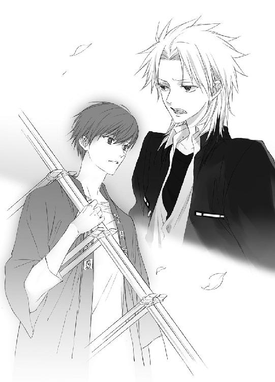
「小此木神官長はたぶん......、あいつが駄目になったら、それまで、ぐらいにしか考えてない。奥庭の番人は、神官の中でも特別だ。いきなり四神様に気に入られたあいつのことを、面白く思ってない奴らなんて、大勢いる」
蒼司朗に面と向かって『認めない』と豪語したのは四神の戦士の篠原勇輝一人だが、表に出さないだけで、不満に感じている者は神官の中にもいる。いや、きっとそういう者ばかりだ。蒼司朗のことを本当に心配し、親切にしてくれているのは、鈴宮神官ぐらいのものではないかと、篠原勇輝は思う。
鈴宮神官は、地方でも最大の出茂神社の神主の息子で、去年帝都大学を卒業したばかりの、帝都神社でも最も若い神官だ。学生時代から成績優秀で、神主の資格としては最高である浄階の階位を持っている。若くて実力があり、実家にも一目置かれている鈴宮神官は、嫉妬や羨望という感情から、最も縁遠い神官だ。蒼司朗とは違う意味で、帝都神社の特別な神官である鈴宮神官は、蒼司朗の相談役に最適だろう。
「あいつが駄目になって、奥庭の四神様も見限ったら、きっとそれで終わりだ」
蒼司朗の存在意義は、奥庭の四神によって支えられている。奥庭の四神がいてこその、お庭番だ。優遇されているのは、蒼司朗ではない。奥庭の四神が気に入れば、誰でもいいのだ。
蒼司朗に執着しているのは、奥庭の四神だけだ。
「奥庭は、この前までと同じように封鎖される。天の戦士なんかいなくったって、俺たち四神の戦士が、これまでどおりなんとかする......！」
天の戦士の助けがあれば、四神の戦士も楽に活動できるが、成り行きでこちらの事情に巻きこまれただけの少年の命を、危険に晒したくはない。
神官の資格をとれば、蒼司朗こそが奥庭のお庭番であると、誰もに認めさせられるだろうが、それは誰に命じられたことでもない。
「お前、従兄弟なんだろ！ バカの面倒、しっかりみろよ......！」
清志朗だけが、蒼司朗に心を開かせ、ストッパーになれる。
「あいつ、本当の本当に、救いようのない大バカなんだからな！」
力いっぱい蒼司朗を罵倒した篠原勇輝は、ぷいとそっぽを向くとポストから離れ、スラックスのポケットに手を突っこんで、路地に入っていった。
それを信頼と言えば、とても聞こえはいいけれど。
（僕は......、何も考えてなかった......）
何も知ろうとしなかった。
清志朗は事実に思い至って、愕然とする。
（蒼くん......）
今、この瞬間にも、蒼司朗はどんなことをしているのだろう────。
４
神職の資格をとるには、帝都大学の国学科で勉強しなくてはならない。
神官を目指す者は、帝都大学に入学が決まってから上京する者もいれば、それよりもっと早く、小学生や中学生の頃から帝都学園に入学する者もいる。地方から帝都に来て、偏差値と学費の高い帝都学園に義務教育から通えるのは、かなり裕福な家庭の、優秀な子供だけだ。
帝都から居住地が遠かったり、他に仕事を持っているなどの理由で、通学が困難な者のために、国学科は通信教育も行っていて、各地で神官を目指す者たちが勉強している。
蒼司朗が参加しているのは、通信教育の学生を対象にした、大学入学以前の児童や生徒も参加可能な、帝都大学での面接学習（平日夜間）と帝都神社での神務実習（金土日）だ。神官の資格をとりたい者はここまでだが、奥庭のお庭番である蒼司朗は、蟲の浄化に正式に参加できるよう、帝都神社の神官の体術訓練もあわせて行う。
授業や実習、訓練に参加している間、ピヨ四神は蒼司朗から離れて、蒼司朗の宝物である枝打ち斧の番をし、奥庭で遊んだりお昼寝したりして蒼司朗を待っている。
登校前の奥庭での作業や大学での受講は帝都学園の学生服、放課後、奥庭の仕事をするときには神官装束。そして神務実習中は、蒼司朗は実習生指定の作務衣を着、神官の体術訓練に参加するときには、また神官装束を着る。高校生であり、望月造園の見習い庭師であり、奥庭の管理人であり、神官の修行中。蒼司朗は立場が複雑なために、人一倍着替えをしている。
教室の端っこで受講しているものの、まったく畑違いの蒼司朗には、面接学習はちんぷんかんぷんだ。
（あんな小さい子も受講してるんだ......）
きっとどこかの大きな神社の跡継ぎ息子なのだろう、明らかに小学生とわかる子供が、せっせとノートをとっている姿に、自分との違いを感じて、蒼司朗は情けない。神務実習でも、どうにか様になっているのは、本殿の掃除だけ。大祓詞奏上は、旧字体を使って草書体で書かれた文字が読めず、皆がどこを読んでいるのか見失ってしまうと、そこからまったくついていけなくなった。
（身体を動かすほうは、まだどうにかなると思ったんだけどな......）
帝都神社の神官の体術訓練も、満足についていけない。
しかも、どこに行ってもじろじろと見られて、物凄く居心地悪い☆
「けっこう、前途多難かも」
小此木神官長が『僕の修行』と言ったので、個人授業でビシバシやられるのかと覚悟していたが、どうもそれは神官になってからのようだ。神官の資格すら取得できない者に、帝都神社の神官長の手解きなんて、畏れ多い。
蒼司朗は小此木神官長の特別権限行使で、帝都神社から神社庁の推薦書をもらい、特待生扱いの授業料免除で、帝都大学国学科通信教育課程に学生登録してもらった。修了までの期間は二年。
高等学校卒業程度の者という規定は、帝都大学においては、正式な資格授与は高校を卒業したときにということで、高等学校卒業未満でも特例を認められている（高校卒業後、すぐに郷里に戻って宮司になれるようにとの配慮らしい。地方の神社では跡継ぎ息子を帝都で学ばせ、後継者に資格を取得させたいが、経済的に色々と大変なようだ）。
蒼司朗が取得を目指すのは、権正階の資格だ。権正階の資格があれば、普通の神社の神主になれる。
「......別に、神主になる予定はないんだけどな」
神社の跡継ぎに生まれたなら、絶対に必要な資格だろうが、蒼司朗に受け継ぐ神社はない。
資格取得に必要な単位をクリアして、権正階の資格をとれば、蒼司朗は帝都神社の神官の端くれとして、正式に登録を許される。権正階より低い資格の者は、帝都神社の神官にはなれない（権正階でも、帝都神社の神官の持っている資格では一番低い。任される仕事は、掃除と雑用だろう）。
帝都神社の神官に欠員が出たときは、毎回何百人という応募がある。神職のエリートは、本当に狭き門だ。
蒼司朗の場合、試験も面接もナシの大優遇で帝都神社の神官になるのだから、十分にやっかみの対象だろうが、すでに蒼司朗は奥庭の四神による審査をパスしている。権正階の資格をとったなら、蒼司朗を帝都神社所属の神官にしないのは、かえって変だろう。陰口のネタは、確実にひとつ減る。
「レポートの提出かぁ」
六十通のレポート提出と試験、二百時間の実習、研究論文の発表会────。期間最短で資格を取得する通信教育課程は、内容もハードだ。考えただけで、蒼司朗はずっしりと気が重い。
「書けるかなぁ......」
帝都神社での神務実習を終えた蒼司朗は、星空の下、珍しく弱音を吐いて、奥庭に向かう。
いつも持っている枝打ち斧がないので、手持ち無沙汰で、心細い感じになっているのかもしれない。
カリカリカリコツコツコツ☆
「（ミギャミギャミギャ）」
「（キュアオ）」
「（ピイ）」
「「（しゅー）」」
カリカリカリコツコツコツ☆
蒼司朗が近づく気配を感じて、奥庭の門の内側でピヨ四神が騒いでいた。
ピヨ四神がどんな格好をしているのか想像できて、蒼司朗の頰が緩む。待っているピヨ四神のため、蒼司朗は門まで駆け足する。
カリカリカリコツコツコツ☆
「開けるぞー！」
転がり出られても危ないので、声をかけてから、蒼司朗はそっと門を開く。
「ただいま」
扉を開けてしゃがんだ蒼司朗に、ピヨ四神が飛びついた。
「ミギャミギャ」
「キュアキュオン」
「ピ、チュチュピチュ」
「「♡」」
「うん、いい子にしてたか？」
両手にピヨ四神を抱っこして、すりすりきゅいきゅいと甘えてくる、ふかふか柔らかくて温かいモノに、蒼司朗は癒される。押し押しする小さな前足や、擦りつけられる温かい鼻面、ふわふわの羽毛、頰や腕を舐める小さな舌が、くすぐったくて嬉しい。
芝生の上に寝かせておいた枝打ち斧を見つけ、ほっとした気分で、蒼司朗は枝打ち斧に歩み寄る。
「うん。悪さしなかったな」
刃物で危険なのにオモチャにされるかもしれないと心配したのだが、枝打ち斧は蒼司朗が置いていったまま、齧った跡も、刃を包んだ袋の紐を引っ張った跡もなかった。言うことを聞いてくれてありがとうと、蒼司朗は抱っこしたピヨ四神をたくさん撫でる。蒼司朗の手が気持ちよくて、ピヨ四神は首を竦めたりしながら、うきゃうきゃとはしゃぐ。
「お前ら、緑と土のいい匂いがする」
いっぱい転がって遊んでいたようだ。巌手のお城で働いていたときに嗅いだのと、同じ匂いがする。こんな風にピヨ四神を、ぎゅっとすることがなかったから、これまで気づかなかった。
（どこか、違うのかな......）
蒼司朗はピヨ四神を抱いたまま、萌えだしたばかりの芝生に仰向けに寝転がる。蒼司朗が急に上体を倒し、腹の上に乗るような格好になったピヨ四神が、驚いてひと鳴きし、はしゃぐ。
（空は巌手に繫がってる。同じ空、のはずなのに）
帝都の空は、蒼司朗の見てきた空ではないような気がする────。
ちょっと疲れて、気弱になっているせいだ。
里心がついても、生まれ育った巌手には、蒼司朗の帰る場所はない。待っている人もいない。
「ミュウ？」
チビ白虎が、蒼司朗の頰を舐める。
「ん？」
「キュァン」
チビ青龍が右耳朶にぱくりと食いついた。
「「（しゅー）」」
チビ玄武の亀と蛇が蒼司朗の首を舐める。
「こら、くすぐったいよ......！」
くすくすと笑ってから、蒼司朗は思い出す。
「あぁ、悪ぃ！ お前ら、腹減ってんだよな！」
食事の支度や片づけも実習の項目なので、蒼司朗は帝都神社で、神官や実習生たちと一緒に夕飯をすませていた。────いっぱいいっぱいで、ろくに味も感じられず、お腹が膨れただけで、食べた気はしないが。
寮でいつも夕飯を食べさせる時間を、かなり過ぎている。
しかも、日が暮れている。
「おーい、もう寝ちゃうのかー？」
蒼司朗の胸の上で手羽を広げてうつ伏せたチビ朱雀は、こっくりこっくりと舟を漕いでいた。
（明るい場所に行ったら、目ぇ覚めっだろ）
鳥が暗い場所で眠ってしまうのは、ごく自然なことだ。
蒼司朗は身を起こし、ピヨ四神を連れ、愛用の枝打ち斧を握って奥庭を出ると、社務所に向かう。
「大丈夫ですか？」
神務実習を終え、ピヨ四神を連れて社務所に戻った蒼司朗に、事務室から出てきた鈴宮神官が声をかけた。気を遣われて、蒼司朗は笑顔を引きつらせる。
（うわー、顔に出てたか、どこかから話がいったかだな）
しょぼくれた顔をしている自覚は蒼司朗本人にもあるし、蒼司朗の様子を見ていた者からの噂が、小此木神官長たちの耳に入るのは覚悟していた。蒼司朗の噂は、かなり残念なものだろうと想像できる。
（心配かけちゃ駄目だ）
もう十分に便宜は図ってもらった。これ以上の特別待遇は、蒼司朗の甘えだ。
「はい、大丈夫です。やること全部ついていけませんけど、まだ始めたばかりですから」
正直に言って微笑んだ蒼司朗に、鈴宮神官も微笑む。
「そうですね。最初から、何でも上手にできる人はいませんからね」
「ピイ！」
明るい社務所に入って、ぱっちり目を開けたチビ朱雀が鳴いた。
「はい、お夕飯ですね」
鈴宮神官は苦笑して、奥に支度していたピヨ四神の晩ご飯のトレイを出してくる。
大声でいきなり鳴かれ、びっくりしたらしい他のピヨ四神を押し退けるように、チビ朱雀は前に出てくる。
「ピイ！」
大きく開けた口で、食べ物を入れてくれとアピールしている。
（一羽でよかった......）
餌をあげて世話するのは可愛いのだが、ツバメの巣の子沢山状態で、チビ朱雀にも大勢で口を開けて待たれたら、きっと大変だろうなと蒼司朗は思う。
「お前、さっきまで眠ってたくせに」
「ピイピイピイ！」
「鳥類は、よく食べますからね」
くすくすと笑いながら鈴宮神官は蒼司朗を促し、蒼司朗の更衣室に向かう。四神相手に、生物一般の常識が通じるかは怪しいところだが、チビ朱雀が食いしん坊なのは事実だ。
「ミギャギャ」
「キュイキュオ」
「ピイピイピイ」
「「（しゅー）」」
「お待ちかねのようですね」
甘えるピヨ四神と枝打ち斧で両手が塞がっている蒼司朗に、鈴宮神官はピヨ四神の晩ご飯のトレイを更衣室まで運んでくれた。
「どうも、お世話になりました。晩ご飯、いただきます」
「トレイは格子戸の外のラックに、出しておいてください。後で取りに来ます」
「はい。ありがとうございます」
蒼司朗は格子戸を開け、更衣室の扉を開けて、明かりをつけ、ピヨ四神を室内に下ろした。
神聖なる奥庭の四神様のための場所なので、穢れてはいけないと気を遣い、鈴宮神官は格子戸の外にいて、室内に踏みこまない。
格子戸の前で待っていてくれた鈴宮神官から、蒼司朗は晩ご飯のトレイを受け取る。
「おやすみなさい、蒼司朗様」
「おやすみなさい」
蒼司朗の更衣室として用意された部屋は、旅館のちょっとした個室のようにユニットバスとトイレがあり、寛げるだけの広さがあるので、蒼司朗は布団を借りて就寝に使わせてもらうことにした。
蒼司朗も本来なら、神務実習に参加する実習生たちと同じ場所に布団を並べ、一緒に寝起きするのだが、ピヨ四神のお世話をしなくてはいけない。だから一人だけ社務所に移動し、また朝になったらピヨ四神を奥庭に放して神務実習に加わる。
「ほーら、ご飯だぞー」
「ミギャギャ」
「キュオー」
「ピピ、チュピピ」
「「♡」」
待ちかねたように、ぴょんぴょんとジャンプしたり、ばたばたしているピヨ四神の真ん中に、蒼司朗はトレイから取った晩ご飯のお皿を置く。
ピヨ四神は突撃とばかりに皿に顔を突っこみ、わふわふと晩ご飯を食べる。
メニューはミルク粥だ。
「落ち着いて食えってば」
蒼司朗は、くすくすと笑ってしゃがみ、ミルク粥が飛び散って汚れたピヨ四神たちの頰を、ちょいと指で拭ってやる。ピヨ四神はミルク粥のくっついた蒼司朗の指にも、ぱくんと食いつき、温かい舌でミルク粥を舐め取った。
ピヨ四神の晩ご飯が終わったら、就寝時間。
赤ん坊は、食べて寝るのが仕事なので、お腹いっぱい食べたと思ったら、すぐにうつらうつらし始めた。
室内のあちこちに好き勝手に転がっているピヨ四神を、踏んだり潰したりしないよう注意して、蒼司朗は布団を敷き寝間着に着替える。
「寝るぞー」
「ミギュ......」
「キュウ......」
「ピー......」
「「（しゅー）」」
布団が敷けたと呼ぶと、畳の上で脱力していたピヨ四神は、よれよれと布団に向かって集まってきた。ピヨ四神は蒼司朗に群がって、同じ布団で寝るのが好きだ。
「んじゃ、おやすみ」
明かりを消して、蒼司朗は布団に入る。ピヨ四神は、蒼司朗の周り、顔の横や、掛け布団の上など、思い思いの場所で目を閉じた。ピヨ四神は赤ちゃん動物の姿をしていて、しっかりとした存在感はあるけれど、この世の生き物ではないので、布団の上に乗られたり、肩に顎を乗せられても重くはない。
事務室が明かりを落とし、蒼司朗の更衣室の明かりも消え、社務所は非常灯の淡い光だけになる。
カチリ。
鍵穴に針金を入れ、社務所の扉が開けられた。
人影が、そっと足音を殺し、蒼司朗の更衣室に向かう。格子戸が、そろりそろりと開けられた。蒼司朗の更衣室の扉も施錠してあったが、これも針金一本で突破された。
暗い室内で、人影が蒼司朗に忍び寄る。
今日も一日、朝と放課後に庭師としての仕事をし、学校で勉強し、そして神官の資格を得るために夜遅くまでがんばった蒼司朗は、身体よりも、精神的疲労によって、ぐったりとしていた。寝つきもよく、温かくて柔らかいチビ動物に仲良く囲まれ、すーすーと気持ちよさそうな寝息を立てている蒼司朗は、畳を踏む微かな足音をさせて近寄ってきた人間にも、まったく気づかない。ピヨ四神たちも、寝返りしてお腹を見せたりしながら、無防備に眠っている。
人影は、そーっと蒼司朗の布団に手をかけ、捲り上げ────。
「（小此木神官長......！）」
懐中電灯を持って社務所の見回りをしていた鈴宮神官は、扉全開で蒼司朗の更衣室に入りこみ、今にも同衾しそうな小此木神官長を、廊下から照らす。
カッ！ と丸い懐中電灯の光で照らされている様子は、脱獄囚が見つかったみたいだ。遠慮なく照らされているようでも、蒼司朗とピヨ四神はちょうど小此木神官長の影になって、眩しくない。
蒼司朗の布団の横に座った小此木神官長は、蒼司朗の掛け布団を半分捲った格好で、目を涙で潤ませ、鈴宮神官に振り返って緩く首を振る。
「（学校指定の芋ジャなんて、酷い......！）」
ちゃんと寝乱れられる（？）寝間着も布団と一緒に用意しておいたのに、こんな色気のない健全な物を着て、眠っているだなんて......！
バリバリ都会の帝都でも、帝都学園で体育の時間に使用される学校指定のジャージのトレーニングウエアのデザインは、例に漏れずやっぱりダサくて芋っぽい。
神官になるための神務実習中であっても、不埒な侵入者発見とピヨ四神が騒いだなら、蒼司朗は愛用の枝打ち斧を握って、現場に駆けつけねばならない。学校指定のトレーニングウエアは、寝間着として物凄く無難な選択だ。残念ながら、小此木神官長の期待には副えない。
蒼司朗の布団の横に座って、さめざめと泣き真似する小此木神官長の姿に、鈴宮神官は物凄い脱力感に襲われる。
「（何をしてらっしゃるんですか......）」
蒼司朗の睡眠を妨げないよう、小声で問いかけた鈴宮神官に、ぴかーっと懐中電灯で照らされたまま、小此木神官長は乙女チックなポーズで首を傾げる。
「（えーと、夜這い？）」
「（蒼司朗様に、さっくり切り払ってもらいますよ？）」
枕元に置かれた、枝打ち斧で！
怖い顔をした鈴宮神官に、にこっと微笑み、小此木神官長は捲った蒼司朗の布団を直して、立ち上がる。
「（寝顔を拝みに、でした♡）」
懐中電灯に照らされながら、小此木神官長は蒼司朗の更衣室を出る。
廊下に出てきた小此木神官長に、鈴宮神官は口を尖らせる。
「（どうして忍びこむんですか！ 合鍵を使ってください！）」
泥棒みたいな真似をするなと、具体的に言わないのは、鈴宮神官の優しさだ。
もしや賊がと、鈴宮神官は臨戦状態でドキドキしながら見回っていた。侵入者が小此木神官長とわかって、ほっとするやら、人騒がせな行動に腹が立つやら。
「（いやぁ、合鍵なんて使ったら、スリルないでしょ）」
「（スリルを求める必要はありません！）」
鈴宮神官に叱られて、小此木神官長は苦笑しながら肩を竦めた。
眠っているからというだけでなく、ピヨ四神は小此木神官長が近づいても、警戒しない。
小此木神官長が布団を捲っても、深い眠りに落ちている蒼司朗は、身じろぎひとつしなかった。よほど疲れていたようだ。
いくらがんばっても、何の成果もなく、ただ虚しく足搔いているだけ、というときもある。
（明日は少し、元気になれるようにしてあげましょうか）
５
「明日、ちょっと覗きに行かないかい？」
「は？」
週末の金曜日なので実家に戻るために学生寮から出たところで、蔵田実親に呼びかけられ、足を止めた安藤奏は、きょとんとする。
何のことかわからないという顔の安藤奏に、蔵田実親はくすくすと笑った。
「望月蒼司朗クンですよ。神官になるとか？」
同じ帝都学園でも中等部と高等部では校舎も寮も違い、蒼司朗には興味ないからと噂話も聞かなかった安藤奏には、まったく初耳だ。
（神官って......）
安藤奏はあからさまに不快な顔になる。
「なれるわけないじゃないですか」
帝都の誇る四神神社、そのひとつ青龍神社の神主の息子である安藤奏は、伯父の跡を継いで青龍の戦士になるのだと物心つく前から思っていた。父や祖父、周りの者たちからそう教えられ、思いこまされていたのかもしれない。神社の神主になるのは十歳離れた兄、青龍の戦士になるのは弟である自分、そんな風に考えていた。
兄は神主になる資格をとるために、小さい頃からいつも何事にも一生懸命で、たくさん勉強をしていた。誠実で真摯で、誰からも褒められる格好いい兄が、安藤奏の自慢であり、そんな兄の弟であること、青龍神社の子供であることは誇りだった。
祖父も父も伯父も兄も自分も、幼い頃から清廉であることを心がけ、厳しく己を律して修行を積んできたからこそ、若くして神官の資格を取得できたのだ。
（あんなチビで、頭悪そうな奴なんか......！）
取り得は元気やガッツというような田舎者の少年に、ほいほい取得できるほど、神官の資格は甘くない。帝都学園の入学試験にも合格しているし、蒼司朗は全国平均と比べて、決して学力の低い生徒などではないのだが、安藤奏の場合、判断基準は自分なので、大抵の人間（尊敬に値しない人とか？）は、すべて『頭が悪い』ほうに分類される。
四神の戦士である四人は、先代の四神の戦士の頃からずっと、ごく幼い頃から英才教育を受けて、四神の戦士となるべく育てられている。自覚を持ち、己の使命を果たすために、厳しく己を律して、見事本懐を遂げている。
そして優秀な子供が多い四神神社の子供たちの中でも、安藤奏は特に優れていて、いわゆる天才少年と呼ばれる子供だった。小さい頃から、何でも人並み以上にできた。できることはすぐに羨望の的になったが、嫉妬や反感の対象にもなるとわかったから、あまり目立たないようにしようと決めた。その判断ができるほど、敏い子供だった。
（中学生の僕が青龍の戦士だから、甘く考えたんだろうけどさ）
できすぎること、優秀すぎることを、安藤奏は他人にわからせないようにしている。天才であるだけでは足りない、基礎体力の充実やトレーニングは、他人に見られない場所で行った。汗水垂らしてがんばっている姿を他人の目に晒すのは、安藤奏の美学に反していた。どんなに大変なことだって、涼しげに爽やかにこなしていくのが、安藤奏は『格好いい』と思う。だから蒼司朗のように、公言して大変なことに挑むのは、みっともないし恥ずかしい。神官の資格だって、課程を修了したらとれちゃった、でいいのだ。
安藤奏はどれほど頭がいいか、どんなに努力したか、誰にも見せなかったから、知らないだろうしわからないのが普通なのだが、年齢や見た目で、それほど大変でもないことをしているように思われるのは、正直むかつく。他人の成し得たことの大変さをわからない連中は、本当に馬鹿だと思う。
「どうせすぐにやめちゃいますよ」
見に行くような価値などないと、切って捨てた安藤奏に、くすくすと蔵田実親は笑う。
「うん、僕もそう思うよ？ だけどさ、それだからこそいいんじゃないか。僕は、蒼司朗くんに会ったら言うんだ。『神官にならないのかい？』って」
爽やか（見た目だけ☆）に微笑む蔵田実親に、安藤奏は頰を引きつらせる。
「蔵田センパイ......」
「顔を合わせる度に言ったら、嫌がるかな？ 嫌がるだろうね？ そのうち、しつこいとか言われちゃうかな？ 彼、もの凄く真っ直ぐな感じだから、怒るよね？ 蔑むような冷たい目で睨まれちゃうかな？ うわー、そうなったらどうしよう、ゾクゾクしちゃうなぁ......！」
うふふふふふふふふ♡
ちょっと意地悪で皮肉屋のようだが、蔵田実親の実態はＭである。
わざと怒らせたり、嫌われるようなことをして、相手に冷たくあしらわれることで悦に入る。......ある意味、とても迷惑な性分だ。
（どうしてこの人が玄武の戦士なのかな）
性格や趣味嗜好における四神の戦士の選考面は、いったいどうなっているのだろうかと、普通に『とってもいい子』を目指してきた安藤奏は、大いに疑問を抱く。
玄武は守りの要であるので、常日頃から冷遇され、鍛えておく必要でもあるのだろうか。過酷な状態でも、それを快いと感じられるなら、これほど有利なものはない、が。
不気味笑いをしている蔵田実親を、冷ややかに安藤奏は見つめる。
「黙れ、変態」
四つ年上の先輩に向かって命令形。そして断定。言い放った安藤奏の纏うオーラは真っ黒け、吹き荒れるのは酷寒のブリザード。
いい子に見せるために被っていた大量の猫を寮の塀の上に一時置きして、本性を剝き出しにした安藤奏に、ぽっと蔵田実親は頰を染める。
「あぁっ♡ 久々に出ましたねっ♡」
黒奏たん♡
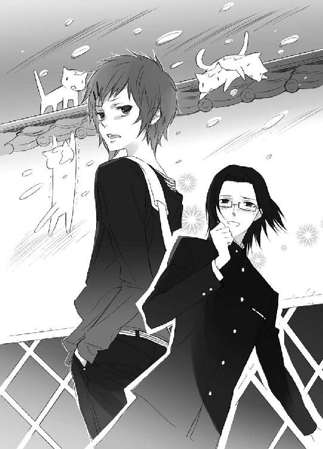
「ウザい」
これ以上、喜ばせるのも真っ平なので、すっぱり言い捨てた安藤奏は、蔵田実親に背を向けてさっさと寮を離れる。途中、塀の上に一時置きした猫たちが追いかけてきたので、いつものように被っておく。
（平常心平常心......！）
「奏ク～ン、明日の朝、八時に帝都神社の門のところでねー」
蔵田実親は頰を染めたまま、早足でざかざかと歩き去る安藤奏の背中に向かって呼びかける。
（知るか）
今振り返ったなら、恍惚としている蔵田実親を見てしまうので、安藤奏は振り返らないようにして、さっさと歩き去った。
奥庭の四神様に気に入られて、お庭番に就任したか知らないが、安藤奏は神官を目指そうという望月蒼司朗を応援しようという気は、これっぽっちもない。
これっぽっちもないからこそ────。
（見に行ってみても、いいかも......）
二度としゃしゃり出てこないように。
蟲は危険なモノだ。命のある生き物なので、斬り捨てれば蟲は死ぬが、蟲の撒き散らした穢れは残る。奥庭の四神に助けられているから何とかなっているようだが、穢れを浄化しながら、蟲を退治することのできない蒼司朗のような者は、いくら奥庭の四神様に気に入られていても、『蟲呼びの夜』や浄化の現場に来てほしくない。
（これまで、僕たち四人だけでやってきたんだ。天の戦士なんて、いなくてもいい）
奥庭のお庭番だった神官が亡くなり、それからしばらくして四神の戦士も全員代替わりした。安藤奏たちには、最初から天の戦士はいなかった。いなくても、きちんと蟲を浄化してきた。
（ちゃんとやってきたんだ......！）
四人で一生懸命にやってきた証であるこれまでの功績が、いきなり横から出てきた蒼司朗の存在で、否定されるようにも思えて、安藤奏は嫌だ。
「しっかり見てやるもん！」
身のほど知らずにして、無様な蒼司朗の姿を、この目でしっかりと！
安藤奏は宣言して、ぐっと拳を握った。
帝都神社での神務実習は、二年前に安藤奏も参加した。見学や体験で参加する小学生は少なくないが、実際にレポートを受理され、研究論文の発表会も大学生に負けないように行い、単位を取得できるだろう小学生の参加は、安藤奏が初めてだった。
小学生ががんばったのだからという、薄っぺらな温情で、安藤奏は神官の資格を取得したのではない。倍の年月も生きてきた者たちと同じように提出されたレポートを評価し、研究論文の発表会に立ち会った者たちには、そのことがはっきりわかっている。今期の四神の戦士は全員学生で、あらゆる面でとても優秀だ。そして最年少で神官の資格を取得し、青龍の戦士となった安藤奏は、粒揃いで優秀な四神の戦士の中でも、少しばかり特別なのだ。
（朝八時......）
帝都神社での神務実習のタイムテーブルは、神官の資格を取得するために安藤奏が実習生となる前から、ずっと変わっていない。
（掃除の時間だよね）
起床は全員午前五時半。朝の大祓詞奏上と朝食を終えて、朝食の片づけをする者と、掃除をする者に分かれる。
次の日。
朝八時と蔵田実親が言っていたので、安藤奏は七時五十五分頃から帝都神社の門の横で待っていたが、蔵田実親は八時十分になってもこなかった。
「あの人はぁっ......！」
ウサギのように足を踏み鳴らし、腕組みした安藤奏はぷんぷんと怒る。
このために安藤奏は、実家の青龍神社のお勤めを放ってきたのに。
八時を過ぎた頃から、安藤奏は境内をうろうろしだした帝都神社の神官に見つかりそうになっては、急いで隠れるということを繰り返している。
私服なので、ぱっと見では観光客のようで、神社関係者とはわからないが、四神の戦士の一人である青龍の戦士が、こんな早朝から帝都神社の近くをうろうろしていては、神官たちは何事かと思うだろう。緊急事態でも何でもなく、ただ望月蒼司朗がどうしているか見にきたなんて訪問理由は、野次馬根性丸出しで格好悪くて、安藤奏は死んでも言いたくない。
安藤奏はあくまでも、『年長者である蔵田実親に誘われたから』来たのである。
遅刻は評判を落とすことになるので自分自身で許せないが、安藤奏は待ち惚けを食わされることは、もっと我慢ならない。
「この僕を待たせるなんて、まったくいい性格してるじゃないか！ 蔵田センパイなんて、もう知らない！」
頰をぷうっと膨らませ、安藤奏は蔵田実親を待つのをやめ、一人で帝都神社に入った。
朝食の後片づけと洗濯、本殿の掃除は、神務実習生の分担だ。
（まさか、朝食の後片づけなんて......）
安藤奏はそーっと調理室の方を覗く。
神務実習生を合わせて、百人近くになる帝都神社の関係者の食事は、作るのも片づけるのも大変だ。だがそれでも、本殿の掃除と比べれば、監督官もいないし（手抜きをすると全員にわかるから）、実習生だけの作業はいくらか気楽だ。
神官は神官装束だが、神務実習生は実習中は作務衣を着ている。色目は似たようなものだが、服装が違うので、神官と実習生は簡単に見分けられる。
食器や鍋を洗っていたのは、蒼司朗よりもっとずっと上背のある、体格のいい男性だった。大学生か、地方から来た人か。
（洗濯、でもないよね）
確認するため、安藤奏は洗濯場に向かう。
帝都の一般住宅では、足踏み式や大型ゼンマイ式の洗濯機を使っているが、帝都神社では今も、井戸水をポンプで汲み上げ、洗濯板を使って行う昔ながらの手洗いの洗濯である。
真冬の洗濯は過酷に思えるが、井戸水は年間を通じて水温が変わらないので、見た目ほどつらくはない。神官長など、高位の神官の衣服は出入りのクリーニング業者に任せ、その他の洗濯物はすべて、神官や神務実習生たちが行う。
洗濯場を覗いてみたが、蒼司朗の姿はなかった。
（よーし、本殿の掃除だ！）
これが見たかったのだと、いそいそと安藤奏は本殿に向かう。
巌手にいたとき、巌手城のお抱え庭師の息子だった蒼司朗は、巌手圏にある大きな神社から依頼された仕事にも、何度もついていったことがあった。
（普通に見えたんだけどなぁ......☆）
掃除なんて、どこでも似たり寄ったりだと思っていたのだが。
桶の水で雑巾を洗いながら、蒼司朗は肩で息をする。
子供ながらも、造園業者として神社に出入りしたことはあるし、煤払いのときに神社の掃除を手伝ったこともあるが、蒼司朗が任されたのは、庭掃除だ。地面を掃き、落ち葉を集めただけだ。基本、いつもやっている雑務とほとんど変わらない。
神社の建物に上がりこんで、階段に座ったり、回廊を歩いたことはあったが、建物の掃除をしたことはなかった。蒼司朗が生まれ育った家は歴代のお抱え庭師のための屋敷で、広くて立派な邸宅だったが、ここと比べれば、まったく規模が違う。
（こんなに大変だったとは！）
さすが帝都。全国の神社と神官を統括する、帝都神社様。とにかく、広い......！
「そこ！ いつまで洗っているかっ!?」
「はいっ！ すぐ行きますっ！」
神務実習生を監督する神官に怒鳴られて、蒼司朗は急いで雑巾を絞り、本殿の中に戻る。
国内最大級の広さを誇る本殿は、体育館のようだ。一辺およそ二百七十メートル。そこを、端から端まで雑巾掛けする。
帝都神社の神官たちは、床に雑巾を置き、滑るように調子よく、たたたたたたと軽やかに雑巾掛けしていくのだが、慣れない神務実習生たちは、そんな風にリズミカルな雑巾掛けはできない。一度も止まることなく、端まで雑巾掛けできた神務実習生は皆無だ。床板に沿って真っ直ぐ拭き進んでいるつもりが、途中で曲がってしまったり、転倒したり。その度に大きな声で叱られる。
（必要なものは、身体のバランスと、強靭な足腰......！）
頭ではわかっているのだが、わかるとできるは違う。
帝都神社では右側通行が規則なので、雑巾掛けも右から列を作って拭いていく。肩がぶつからないよう、先の者がスタートしてから、一呼吸おいて拭き始める。
壁際の人一人座れるだけを先に拭き、そこから床に置いた雑巾に両手を置き、クラウチングスタートに似た格好で、拭き進んでいく。ゆっくり拭き進んでいけば、曲がることも転ぶこともないのだが、拭き進む速度は掃除熟練者である帝都神社の神官と同じでなければならない。
（っし！）
今度こそと、蒼司朗はスタートを切る。右手左手、右足左足、どれも同じように力を入れて、真っ直ぐに、リズムよく────。
「っ！」
腕のバランスが崩れたと思った瞬間、身体が前のめりになり、蒼司朗は前転するように勢いよくひっくり返った。硬い床で、強かに背中を打ちつける。痛みで、瞬間、息が詰まった。
「さっさと起き上がらんか！」
監督する神官の怒鳴り声とほぼ同時に、後から雑巾掛けをスタートした神官が、蒼司朗の横を通りすぎた。
「────はい......っ！」
（また抜かされた......！）
速度だけはどうにかクリアできるようになったが、距離が続かない。
蒼司朗は身を起こし、再び雑巾掛けを始める。
（くっそぉぉぉっ......！）
端に辿り着くまで、七回転んだ。何人に追い抜かれたか、わからない。
本殿に近づくには、見つからないようにというのはさすがに無理があるので、安藤奏は付近にいた神官に厳かに一礼し、堂々と本殿に向かった。
目撃できたのは、蒼司朗の小さな身体が、豪快にすっ転ぶ様である。
（わ、思ったとおりだ）
元気だけが自慢のような少年は、力技で突き進むのではないだろうかと思っていたら、本当に予想を裏切らなかった。崩れるというような生易しいものではなく、一回転するほど豪快に転ぶ。気迫に比べて体重が軽いので、空回りという表現がぴったりだ。
（あんな調子じゃ、絶対に続かないね）
あれだけ豪快に転んだなら、酷い打ち身になるだろう。気持ちはあっても、そのうちに身体がついていけなくなる。他人がクリアしていくことを、自分だけいつまでもできないのは、精神的にもダメージが大きい。
帝都神社の本殿の床掃除は、ここの神官でも、当番の週にはうんざりするような、過酷な掃除だ。修行の一環なので、柄のついたモップを使うなどという、合理的で楽な掃除はしない。掌の代わりに雑巾を使い、床を間近で見つめながら、きっちりと拭いて磨きあげる。きちんと人の力で拭きあげられた床は、つやつやのありがたい飴色に輝いている。
神官と神務実習生は、服装が少し違うというのもあるが、動きの違いで、遠くからでも見分けられる。その中でも身体の小さな蒼司朗は、真っ先に見つけられる。
掃除されている本殿を眺めながら、おやと安藤奏は思う。
（僕は廊下の掃除をしてから、本殿の掃除をしたよね）
今見る限りでも、蒼司朗より身体の小さな者の姿は見えない。小中学生でも、希望して神務実習に体験参加する者はいる。安藤奏もその一人だったが、まず廊下で拭き掃除の練習をしてから、本殿の掃除をさせてもらえるようになった。いつまで経っても、廊下の掃除ばかりしている小中学生もいる。
週末だけ神務実習に参加しているだろう蒼司朗は、まだそんなに数をこなしていないはずなのに、もう本殿の掃除なのだろうか────。
「蒼司朗くんは、高校生ですからね」
背後から聞こえた声に、どきりとして安藤奏は振り返る。
あまり凝視していたので、考えていたことがわかったのだろう。安藤奏は、耳まで赤くなる。
「おはようございます、小此木神官長......！」
中学生らしく、安藤奏は小此木神官長に挨拶し、お辞儀した。
「おはようございます、奏くん」
にっこりと小此木神官長は安藤奏に微笑みかける。
「身体は小さいですが、蒼司朗くんは高校生で、体力的に大丈夫だろうと判断して、本殿の掃除をしてもらいました」
大学生や通信教育課程の生徒は、当たり前のように最初から本殿の掃除をさせられる。
体格云々ではなく、基礎体力を考慮して、体験参加の小中学生は、まず廊下の掃除をしてもらう。廊下の掃除には、監督する神官はいないが、境内を掃き掃除している神官たちから、丸見えだ。監督されていなくても、サボることはできない。廊下を掃除している姿を見て、本殿の端から端まで掃除できるだろうと思われたなら、本殿の掃除を命じられるのだ。
見つかってしまった安藤奏は、内心はらはらしていたが、どうしてここにいるのかと小此木神官長に尋ねられることはなかった。
「あ、そうだ♡ 奏くんも、久しぶりに本殿の掃除してみましょう」
「え？」
「すみませーん、雑巾をひとつくださいなー」
小此木神官長は、安藤奏の左の二の腕を摑み、ぐいぐいと本殿の中に進む。
突然大声をあげて本殿に入ってきた小此木神官長の姿に、神官たちは驚いて頭を下げたが、小此木神官長が腕を摑んで引っ張っている、私服の中学生が安藤奏だとわかって、もっと驚いた。
本殿を掃除するのは、綺麗に洗った真っ白な雑巾というのも、ずっと昔から決められている。雑巾を洗うための桶の水は、三度使った時点で監督している神官に交換を命じられる。
小走りで届けられた雑巾を受け取り、摑んでいた腕を放した小此木神官長は、それを安藤奏に差し出す。
「はい♡ 奏くん」
できますよね？
笑顔だったが、笑わない目の奥で尋ねられ、安藤奏はそれを自分への挑戦と受け取る。
「上着、預けてもよろしいですか？」
負けず嫌いの光を瞳に灯し、脱いだ上着と交換するように雑巾を受け取った安藤奏に、小此木神官長はにっこりと微笑んだ。
雑巾を洗って、井戸で桶の水を交換し、本殿に戻って雑巾を広げた蒼司朗は、何やら端のほうでごちゃごちゃやっているようだということには気づいていたが、誰が何をしているのかまで見るような余裕はなかった。
壁際の床を拭き、スタート位置に雑巾を置いた蒼司朗は、隣に来た私服姿の小柄な者に驚く。
「......安藤......」
どうしてここに、安藤奏がいるのだろう？
過酷な床拭きによる運動量のせいで、頰を上気させた蒼司朗に、呆然とした顔で見つめられ、安藤奏は澄まして雑巾を広げ、壁際の床を拭く。
「ぼーっとしてないで、始めてよ」
「あ、うん」
蒼司朗は安藤奏に冷ややかに促され、雑巾の上に手を置く。
（あいつも、やったんだよな......）
神官の資格をとるための神務実習で、安藤奏もこの本殿の掃除を。
（くそー......！）
蒼司朗にとって、青龍の戦士である安藤奏は、己の無様な姿を見せたくない者の一人だ。
大きく息を吸い、蒼司朗は前方、二百七十メートル先にある壁を睨む。
あそこまで、止まることなく一気に拭き進みたい────！
（────望月蒼司朗、参る！）
気合一発、蒼司朗は軽快にスタートを切る。
安藤奏に対する見栄もあり、その前よりも必死でがんばったのだが、やはり足の調子が崩れて、蒼司朗は倒れる。距離はいくらか伸びたようだが、壁まではまだまだ遠い。
（ちくしょ......）
蒼司朗が起き上がるよりも先に、後から床拭きを始めた安藤奏が、蒼司朗のすぐ横を軽やかに通りすぎていった。
余裕たっぷりの、完璧なフォームの床拭きで。
まさしく、雲泥の差☆
（もうちょっと左にいたら、引っかけてやったのに）
安藤奏の心の声は、蒼司朗には聞こえない。
安藤奏は無様に潰れている蒼司朗に、見向きもしなかった。年下の少年に鼻で笑われるのも癪に障るが、見向きもされないのも大いに腹立たしい。
（くっそー......！）
雑巾の位置を戻し、蒼司朗は安藤奏の後を追うように、床掃除をする。
「参考にするなら、体格の似ている者がいいですよね」
無意識に、蒼司朗は耳で捕らえた神官たちの足音のリズムを真似しようとしていたが、体格がまったく違うので、そのリズムではうまく身体が動かない。
小此木神官長は、スタートしたときよりも、安藤奏の尻を睨んで追いかけているような、今の蒼司朗のほうが、ずいぶんリズムがよくなったと微笑む。
「これなら蒼司朗くんも、今日中にまともに掃除できるようになるでしょう」
何事も、コツさえ摑んでしまえば、上達は早い。
よくできる他人から、学ばせてもらうことは多い。
「いいときに、いい人が来てくれましたねぇ♡」
にこにこと微笑んで、小此木神官長は本殿の掃除を監督している神官に、安藤奏の上着を渡し、本殿を後にした。
６
帝都神社に来た蔵田実親は、本殿の回廊で雑巾を洗っている安藤奏の姿を見つけ、目を瞬く。神官や神務実習生の中、一人だけ私服の安藤奏は、悪目立ちしているので、帝都神社の門を入ったときから、遠目でもくっきり見えた。
「おはようございます、奏クン。来てたんですか」
のほほんとした調子で声をかけられ、雑巾を絞りきった安藤奏は、きっと蔵田実親を睨む。
「おはようございます、蔵田センパイ！ ちゃんと八時前に来ましたよ！ 何ですか!? 今頃のこのこと......！」
頰袋をいっぱいにしたリスのように、ぷうっと頰を膨らませ、睨みつける安藤奏に、蔵田実親は嬉しそうに微笑む。
「あれ？ 僕、九時って言いましたよね？」
現在の時刻、八時五十分。
「八時って言いました！」
八時だと言われたときに、掃除をしている時間だなと安藤奏は思ったので、間違いない。
（いい加減なんだから！）
一時間勘違いしていたのなら、いくら待ってもこないはずだ。
「奏クンが来るとは思わなかったな」
「誘っといて、勝手なこと言わないでください」
安藤奏は洗った雑巾を片づけて、監督の神官から上着をもらい、一礼して本殿を出る。
「うーん。でも奏クン、返事しなかったから。そうそう、振り向きもしなかったんじゃなかったかな？ 確か。ねぇ？」
ぷりぷり怒りながら靴を履いている安藤奏に、蔵田実親はにこにこと微笑む。
（返事はしなかったよ！）
言われれば、確かにそうだけれども！
一時間違うって、どうよ!?
「知りません！ もう！」
怒って、つんと顔を背け、擦れ違おうとした安藤奏に、蔵田実親は声をかける。
「こらこら、どこに行くんだい？」
「帰るんですよ！」
無様な様子を見物して笑いに来たはずなのに、悠々と雑巾掛けをしていた安藤奏が我に返ったときには、蒼司朗は本殿の端から端まで完璧に拭きあげられるようになっていた。小此木神官長の罠にかかり（？）自分がお手本になってあげていたのだと、気づいたときには、後の祭りである。親切にしてやるつもりなんて微塵もなかったのに、敵（？）に塩を送ってしまった。
憤懣やるかたないので帰るというのは、自然な行動心理だ。
「そう。体術訓練を見ないんだ？」
蔵田実親の言葉に、かっかしていてほかのことを忘れていた安藤奏は、はっとする。
この後、九時からは、神官だけが行う、蟲の浄化のための体術訓練がある。
毎週月曜から土曜まで行われる体術訓練には、神務実習生は参加できず、この時間は自習時間に当てられている。だが奥庭の管理人である蒼司朗だけは、特別に体術訓練への参加が許可されている。
自分の使った雑巾の片づけを急いで行った蒼司朗は、走って社務所に向かい、作務衣から神官装束に着替えていた。
蔵田実親は、安藤奏ににこりと微笑む。
「僕は見学を申請してあるから、着替えに行くけど。どうする？」
体術訓練を見学するのなら、神官装束に着替えなければならない。
蟲の浄化のための体術訓練に比べれば、本殿の雑巾掛けなんて、ぜんぜんたいしたことない。
今度はばっちり、蒼司朗が困窮している姿を見られる！
「────見学するに決まってるじゃないですか......！ ぐずぐずしないでください！」
あっさり掌を返し、安藤奏は蔵田実親の先に立って、社務所に向かう。社務所には、帝都の四神神社の神官たちが訪れたときに利用できるよう、四つの控え室（蒼司朗の場合は更衣室になる）が常時用意されている。いつでも着替えられるよう、神官の装束は常備してあるので、問題なく着替えられる。────今度は安藤奏も悪目立ちしないですむ。
安藤奏と蔵田実親が社務所に入ったのと入れ替わるように、神官の装束に着替えた蒼司朗は社務所を走り出た。
神官の体術訓練は、一般の人の入れない境内の奥の広場で行われる。この訓練の準備は、位の低い神官が当番制で行っている。体術訓練は帝都神社の神官が全員参加で行うものだが、神務実習生の監督と社務所の受付窓口の係は誰かいなくてはならないので、日替わりで何人かが抜ける。
準備は作業的には、たいしたことではない。道具を出し、地面を綺麗に均して、軽く水を撒いて砂埃が立たないようにしておく。
「道具、運びます！」
駆けてきた蒼司朗に、息を弾ませながら声をかけられ、道具置き場と広場を往復していた神官は、振り返る。
「お疲れ様です、蒼司朗様。重いですよ？」
穏やかに微笑んで、神官は道具置き場の中に入る。神官は名札をつけているわけではないので、蒼司朗は帝都神社の神官の顔は知っていても、名前まで覚えきれてないが、神官たちは皆、蒼司朗のことを知っている。
何も知らないうえに、神事とは無関係だった、ぽっと出の田舎者が、帝都に来ていきなり奥庭の管理人になり、奥庭の四神による四神変化までして、見事に蟲を浄化して────。まだ成人してはいない四神の戦士たちの努力と功績を認めて敬意を払い、地道に真面目に修行していた神官たちには、どうにも解せず気に入らない展開で、蒼司朗に対して反感はあるが、神官一人一人と蒼司朗という関係においては、（見せかけだけかもしれないが）おおむね友好的である。十五歳という年齢の少年らしく、蒼司朗は潑剌として、年長者に対して礼儀正しく、何事にも真面目だ。奥庭の管理人といっても、特権階級意識のない蒼司朗に、驕ったところはない。そして、帝都神社の神官は、皆成人した大人だ。蒼司朗は元気はあるが、平均よりもずっと身体が小さいので、ちょっときつく応対すると、大人が子供を虐めているように見えるので、体裁も悪い。
「大丈夫です！ オレ、これでも力はありますから！」
にこっと笑って、蒼司朗は神官に続いて道具置き場に入る。
体術の訓練に使う道具は、棍だ。重量を持たせて安定させるために芯に二キログラムの鉄を仕込んだ、フラットな形の長さ二メートルほどの硬い棒。道具によって霊力を引き出すとか、そういう小細工のない、物凄くシンプルなものだ。
棍は、外に運び出したスタンドに立てておく。運搬用の車のついたスタンドは、転倒を防止するためにかなりの重量があり、棍を立てたままでは運べない。スタンドを運んだ後に、一本三キログラムを超える棍を、何本も抱えて運んでいくのは、けっこう手間だ。
蒼司朗が来たときには、もうスタンドは運び出された後だったので、蒼司朗は神官と手分けして、持てるだけの本数ずつ、棍を運ぶ。
棍の準備は楽しい作業ではまったくなく、力仕事でひたすらきついだけだが、蒼司朗は文句を言うことなく、位の低い神官に指導を仰ぎながら、自主的に棍の支度を手伝った。
準備が終わった頃、訓練に参加する神官が広場に集まってきた。訓練用の棍はどれも同じで、誰か専用という物は一本もない。適当にラックから一本ずつ手に取っていくだけだ。ラックには常に予備が何本か入れてあるので、最後に蒼司朗が手に取るときにも、ちゃんと残っている。
最後に小此木神官長が来て、九時ちょうどから体術訓練が始まる。
蒼司朗はここでもやっぱり、一番後ろの目立たない場所で、訓練する神官たちの邪魔にならないよう注意して、訓練に参加する。
（棒を振り回すのでも、竹刀とか枝打ち斧なら、少しは様になるんだろうけどなー......）
蒼司朗は剣道の有段者で、中学時代に巌手の圏大会で優勝したこともある。だが竹刀と棍では、握り方も扱い方も違う。動かし方が似ているのは、長さと形状から考えても枝打ち斧のほうだが、枝打ち斧は先に刃があり、重さが先端に集中している。すべて同じ重さと太さの棍とでは、バランスがまったく違う。
体術訓練は、小此木神官長他三名の高位の神官が指導教官となって行われる。
「────基本演武、用意、始め！」
今日はミラーグラスのよく似合う新庄神官（細マッチョの美丈夫で元帝都軍人だったという実しやかな噂がある）が前に出て、皆に手本を示しながら訓練を進める。
基本演武は、棍を持って行う準備運動のようなものだ。習得しなければならない型の基本が、この演武にはすべて含まれている。
縦横整然と並んだ神官たちが、一斉に演武の型をとる様は、マスゲームのようで、なかなか爽快だ。────若干名、調和を乱している者がいるが。
（次、は......！）
まだ基本演武を覚えきれていない蒼司朗は、遅れないようについていこうとするだけで、手一杯だ。
神官は、この基本演武にある型を覚えて無駄な動きをなくし、蟲を退治し、穢れを浄化する。斬って捨てなくても、神官は祈りという霊力で、触れただけで蟲を塵芥に変え、穢れを祓うのだ。訓練で使う棍は、霊力を集中させる、目安となる道具にすぎない。『蟲呼びの夜』などの出動のときには、自分と相性のいい道具を各自で準備して使う。
────この棍にきっちり霊力を収束できれば、重さは気にならなくなりますよ♡
と、小此木神官長は言っていたが☆
（重いですよ......っ！）
蒼司朗の握っている棍は、どう贔屓目に考えても、がっつり三キログラムの重さがある。体格や腕力の違いというだけではなく、蒼司朗にはとてもこれを神官たちのように軽々とは扱えない。
もともと、祈りを霊力に変えられる者だけが、帝都神社の神官に採用されている。外見ではそうとわからなくても、庭師志望の般ピーである蒼司朗とは、まったく別世界の人たちなのだ。
（祈り、霊力......）
目に見えないものは、真似の仕方もわからない。
普通の害虫にしていたように、力技で蟲を斬り捨てて、きちんと蟲を退治したつもりになっていた蒼司朗は、誤解していたことを大いに恥じる。蒼司朗にはピヨ四神の加護があったので、蟲の放つ穢れを受けることもなく、斬り捨てた蟲の穢れは祓われていた。
訓練している神官たちを、離れた場所から見守る指導教官のように見学しながら、蔵田実親と安藤奏は思ったとおりの蒼司朗の格好に満足する。
「駄目ですね」
「ぜんっぜんわかってないよ」
棍に霊力が入っていない。腕力で振り回しているだけだ。あの調子では、訓練の最後まで続けられるかどうかすら、怪しい。
まったく型を知らない頃の蒼司朗と比べれば、遅れがちではあるが、ついてこられるだけましになったと言えるのだろうが────。
（やっぱり、元気の素が必要ですね）
蒼司朗の姿に、小此木神官長は打ち合わせておいたとおりに腕を上げ、合図を送る。
（小此木神官長からのお呼び────！）
帝都神社の境内に茂る木に身を潜めていた『くのいち』、柳生真純は緊張しながら枝を蹴り、体術訓練の行われている広場の近くに向かう。
接近する柳生真純を気配で察知し、蔵田実親と安藤奏は何事かと振り向く。
基本演武を行っている神官たちは、集中しているために軽いトランス状態にある。悪意や殺気を放っていたり、穢れていない限り、警戒したり臨戦態勢に入らなくてもいいので、意識の外に切り捨てられて気づかない。何かがあったなら、小此木神官長や指導教官が指示を出すという絶対の信頼があるので、安心して集中しているのだろう。だが一人だけ、その領域にまで到達していない蒼司朗は、誰かが近づいたことに気づいて、ちらりと視線を向ける。
チアガールたちがいた。
「!?」
ミニスカートで、両手にポンポン。軽快にポンポンを振りながら元気よく動く十数名の少女たちの姿に、蒼司朗はぎょっとする。思わず近くにいる指導教官を目で探した蒼司朗と、ばっちり視線が合って、にっこりと小此木神官長は微笑む。
どうです？ がんばろうという気になるでしょう♡
えっへんと胸を張るような雰囲気の小此木神官長に、柳生真純を使ったチアリーディングが、自分への厚意による応援らしいとわかって、蒼司朗は思わず地面に膝をつきそうになった。
柳生真純のチアチームに気づいた指導教官たちが、蒼司朗同様、ぎょっとする。
（何を考えてるんだろう......☆）
蒼司朗には、小此木神官長の人となりが、よくわからない。
女忍者という特技をフルに生かし、たった一人で、分身の術を使ってチアのチームを結成し、蒼司朗を応援している柳生真純は、笑顔でダンスしているが、その心境は複雑だ。
（本当にいいんですか!? 小此木神官長～！）
場違いも甚だしく、どう考えても不謹慎だ。ふざけるなと怒鳴られて、早々に退去したいのだが、小此木神官長が満足そうなのを見て、指導教官たちは誰も叱ってくれない。
「────奏クンがチアやったほうが、いいんじゃないかな？」
ふむと考えて言った蔵田実親に、むっと安藤奏は口を尖らせる。
「どうして僕が、蒼司朗サンを応援しなくちゃいけないんですか」
「え？ 真純クンより、奏クンのほうがきっと可愛いよ？」
安藤奏と柳生真純は、背格好が同じぐらいなので、チアガール姿を想像するのは簡単だ。明晰な頭脳だけでなく、安藤奏は自分の容姿や運動神経にも自信がある。一瞬、確かに自分のほうがダンスも上手だし、可愛いと考えてから、安藤奏は我に返る。
「やりません！」
どうして自分から、女装でチアリーディングしなければならないのか☆
「なぁんだ、残念」
後でからかって、安藤奏を立腹させて蔑んでもらうためのネタにしようと思っていたのにと、蔵田実親は忍び笑いを漏らした。
恥ずかしさで、顔から火の出るような思いをしながらも、外面は笑顔いっぱいに、柳生真純は蒼司朗をチアで応援する。
応援されているとわかる蒼司朗は、ちらちらと柳生真純のことを気にして、いる？
（あ、れ？ え......？）
一人だけ応援されるなんてと、恥ずかしがって目を背けられるかと思っていた柳生真純は、チラ見されていることに気づいて、どきりとする。
（やだ、蒼司朗様ったら、こっち見てる）
柳生真純は和服がよく似合い、帝都学園の学生服を着ても違和感のない、スレンダーな少女だが、足の細さには自信がある。朱雀の戦士である芙蓉薫子のような、皆が憧れる綺麗なお姉さまの、ボンキュッボンのナイスバディには敵わないけれど、ミニスカートから覗く足は、思春期、お年頃の少年には確かに眩しいかも！
（小此木神官長の仰られたように、わたしがお力になれるなら......！）
女の子意識を刺激された柳生真純は、俄然張りきって蒼司朗を応援する。
タイミングを熟考して、小此木神官長はチアの柳生真純を退去させたので、基本演武を行っていた蒼司朗以外の神官は、誰一人としてチアチームが近くにいたことに気づかなかった。
蒼司朗は何とか最後まで基本演武についていったものの、それはただの力技で棍を振り回しただけという、お粗末なものだった。
「実親くん、奏くん、組打ちの模範を見せてください」
小此木神官長に呼ばれ、蔵田実親と安藤奏はそれぞれに棍を手に取って、前に出る。
構えは違うが、二人の向かい合い方は、剣道の組打ちと似たような感じだ。
「始め！」
小此木神官長の一声で、向かい合っていた二人の雰囲気が変わったのが、蒼司朗にもわかった。
（いや、変わったのは、蔵田先輩たち、本人じゃない......！）
二人の......周囲の雰囲気？
「はぁっ！」
「いゃあっ！」
掛け声とともに、二人の構えた棍が動く。
竜巻の風に似た見えないものが、轟！ と周囲に渦巻いた。
「！」
神官装束の袖や袴の裾が恐ろしい勢いではためき、強く髪が乱れ、蒼司朗は思わず息を詰めて目をきつく閉じる。
蒼司朗が目を開けたとき、蔵田実親と安藤奏は打ちこみあい、お互いの棍が触れた格好で、動きを止めていた。
小此木神官長は、打ちこみあった二人の姿に、にこっと笑う。
「ま、こんなものですね。今は結界も設けてませんし、四神の戦士である二人が本気で打ち合ったら、この辺り、吹き飛んじゃいますからね。皆さんも、こういうのを目指して、霊力を高めてくださいね♡」
「組打ち、稽古、始め！」
号令はかけられたが、組打ち稽古のレベルに達していない蒼司朗は、一人、素振りである。
組打ちの邪魔にならないよう、移動した蒼司朗に、小此木神官長が声をかける。
「蒼司朗くん、ちょっと奏くんと組打ち稽古してみましょうか♡」
「え？ む、無理ですよ......っ！」
大慌てで遠慮する蒼司朗を、小此木神官長は追いかける。
「まぁまぁ、そんなこと言わずに。ね？」
さっきの本殿の掃除で、小此木神官長はちょっぴり味を占めていた。安藤奏を刺激剤に使えば、蒼司朗の能力が伸びるのではないだろうかと。
もちろん、現実はそんなに甘くない。
棍の一閃で、蒼司朗は三十メートル先にあった木の根方まで、軽々吹っ飛ばされた。人を傷つけるための力ではないので、これだけの距離を吹っ飛ばされても、高跳びに使うエバーマットに倒れこんだぐらいの衝撃しかないが、精神的ダメージは大きい。
「ありがとうございました」
安藤奏は一礼し、吹っ飛ばした蒼司朗に背を向ける。
（あー、すっきりした）
安藤奏は内心ご機嫌上昇気分だが、蒼司朗の機嫌は下降線を辿る。
（棍が触ってもいないのに......！）
これと同じような経験を、蒼司朗は思い出す。
（────気迫負けしたときと、似てる......）
巌手城にあった修道館の、剣道の師範に稽古をつけてもらったとき。向かい合っただけで、蒼司朗は負けを悟った。格が違うのだ────。
「......くそ......っ」
俯き、口惜しさに歯嚙みする蒼司朗の姿を、小此木神官長は穏やかに微笑みながら見つめた。
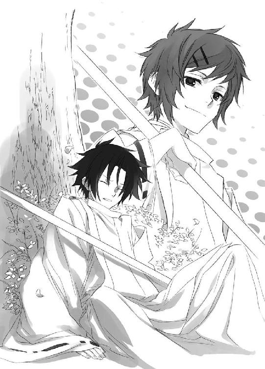
体術訓練はいつもどおり、一時間で終わった。
「明日は、『審判の日』です。午後一時からですから、忘れないように！」
神官たちは声を揃えて、はいと返事したが、蒼司朗には初耳だ。
（『審判の日』？）
訓練を終えた神官たちは棍をスタンドに戻して速やかに解散し、広場には片づけの当番だけが残る。蒼司朗は小此木神官長を追いかける。
「────すみません！ あの、『審判の日』って、何ですか？」
尋ねられた小此木神官長は、蒼司朗に微笑む。
「奥庭の四神様も立ち会われたほうがよいでしょう。見学になるでしょうが、蒼司朗くんもいらっしゃい」
「え、と、あの、何があるんですか？」
どう言ったらわかりやすいだろうかと、小此木神官長は少し視線を上に向けて考える。
「そうですね......。この世界に生きるための、『資格審査』っていうところでしょうか」
神官を手伝って棍の片づけをして、蒼司朗の神務実習はひとまずここまでだ。蒼司朗は次に奥庭の庭仕事をし、ピヨ四神にお昼ご飯を食べさせなければならない。
帝都神社を出た蒼司朗は、内堀の門に向かう途中、遊歩道の近くにあった木の上に、柳生真純の姿を見つける。
「柳生さん！」
呼びかけられて柳生真純は驚き、そして素早く木から下りると、蒼司朗の前に片膝を落として控える。
「お呼びでしょうか」
忍び装束で、忍者らしい登場の仕方をした柳生真純に、蒼司朗はちょっとびっくりし、そして目の高さを合わせるようにしゃがむ。
「え、と、あの......さ」
赤くなってしどろもどろの蒼司朗の様子に、柳生真純はドキリとする。
「突然こんなこと言うのは、どうかって思うんだけどさ......。その......、忙しいのは、よくわかってるから、オレのこと考えてくれるのなんて、ほんのちょっとでいいんだ......」
（え？ え？ え？）
この、展開は、ひょっとして......、ひょっとする？
ドキドキと、忍者座りでも、心は乙女しながら待っていた柳生真純に、正面でウンコ座りした蒼司朗は言った。
「空いてる時間に、オレに稽古つけてくれないかな？」
小此木神官長に稽古をつけてもらうのは、畏れ多いし、それは蔵田実親や安藤奏に対しても同じだ。神官に自分のために時間を割いてもらうのも、気が引ける。
チアの柳生真純を蒼司朗が気にして、しきりにチラ見していたのは、頼みごとのできそうな達人を発見したからだった。
７
奥庭の庭仕事を終えた蒼司朗は、週に一度の作業チェックを受けた。
蒼司朗と違い、奥庭に足を踏み入れることのできない望月左近は、蒼司朗の開いた門、二つを順番に回って方向を変え、双眼鏡を使ってじっくりと庭を眺める。
蒼司朗はいつものようにピヨ四神を勝手に懐かせ、固唾を飲んで評価を待つ。ぎゅっと枝打ち斧を握っている蒼司朗の緊張が伝わるのか、ピヨ四神もきゅっと蒼司朗にしがみつくようにしながら、円らな瞳でじっと左近を見つめている。
小さく息を吐き、左近は双眼鏡を下ろす。
「......よくねぇな。蒼、おめぇ、気負いすぎてっだろ。先週言ったところがよ、手ぇ入れすぎだぜ。もっと全体のバランス見やがれ」
「......はい」
「芝の刈り具合は悪くねぇ。今日んとこは、それだけだな」
褒められる場所がひとつでもあったのだから、よしとするべきか。
「やりすぎたとこ、よく見て考えとけ」
「はい。ありがとうございました」
「ミギャ」
「キュウ」
「ピチュ」
「「（しゅー）」」
深々とお辞儀する蒼司朗を倣って、ピヨ四神も神妙な様子で、ちっちゃな頭を下げる。憩いの森に大穴を掘った蒼司朗を叱ったときの左近がよほど怖かったらしく、ピヨ四神の可愛い姿は、残念ながら左近には見えない。
「肩の力抜いて、がんばれ、蒼。うまくやろうなんて、考えてんじゃねぇよ」
左近は蒼司朗の頭に手を置き、やや乱暴な手つきで撫でる。蒼司朗の頭の上にいたチビ朱雀は、蒼司朗と一緒に撫で（というより、潰して揺さぶ）られ、軽く目を回す（可愛い甥の蒼司朗に対する愛情があるので、巻き添えを食って乱暴に扱われても、チビ朱雀は不快には感じない）。首に力を入れておかなければ、ぐらんぐらんになりそうな撫で方は、蒼司朗の小さい頃から変わらない。そしてその大きな手のぬくもりは、蒼司朗に父・右近を思い出させた。蒼司朗の父と伯父は、蒼司朗の父が少し丸顔だっただけで、姿形も仕種も、とてもよく似ている。
（父さん......）
懐かしさで、つんと蒼司朗の鼻の奥が痛んだ。
息子とは手触りの違う甥っ子の頭の感触を十分に楽しんで、左近は手を放す。
「ねぇ頭で、難しいことなんざ、考える必要はねぇ。感じな。ここんとこで、よ」
とん。軽く左近は蒼司朗の胸を叩く。懐から、きょろんと顔と前足を出していたチビ白虎は、すぐ近くを触れていった左近の手を見、左近を見上げる。
「ミギャ？」
（心で、感じる......？）
無垢な瞳で見上げる蒼司朗に、にかっと笑い、左近は奥庭の門の前から離れる。
「午後は、苗木運びだ。ショベルに乗ってきな」
「────はい！」
蒼司朗はもう一度お辞儀して、仕事に戻る左近を見送った。
蒼司朗の昼食は、神官装束のまま社務所で。平日なら、蒼司朗と一緒に登校する清志朗も便乗するのだが、土日は蒼司朗一人だ。ピヨ四神と一緒に食べる仕出し弁当は、帝都神社から支給されている。
「ミギャミギャミギャ！」
「キュアキュオキュオ！」
「ピッチュピピ、ピチュン！」
「「（しゅーしゅーしゅー！）」」
「わかったわかった！ 慌てんな！」
弁当箱の蓋を取った途端にダイビングしそうな勢いのピヨ四神を、懸命に制する蒼司朗の姿に、味噌汁と湯飲みを運び、くすくすと鈴宮神官は笑う。
「お元気そうで何よりですねぇ」
「これだけ食えば、少しは大きくなってもいいと思うんだけどな」
手を伸ばした蒼司朗は、くりっとチビ白虎の頭を撫でる。
「ミギュ？」
円らな目を瞬く白虎は、丸顔で、毛皮もぽやぽやの赤ちゃん毛だ。
「霊獣でいらっしゃいますからね」
一般的な常識では、成長しない。
（ってか、もっとちびっちゃくもなっちゃうんだよな）
蒼司朗に四神変化させ、力を放出した後に、ピヨ四神が目も開かない姿になってしまったのは、蒼司朗の記憶にまだ新しい。
ピヨ四神に『待て』をして、お行儀よくお座りさせ、蒼司朗は皿にミルクを注ぎ、弁当箱の蓋を取る。柔らかめに炊いてある白ご飯は、ピヨ四神が食べやすいようにだ。粥ではない白ご飯は、その都度目の前で潰してやったものしか食べない。
きゅっきゅっきゅっと弁当箱の蓋の裏に置いた白ご飯を潰して、準備完了。
「よーし、いただきます！」
「ミギャギャ！」
「キュァン！」
「ピピピッ！」
「「（しゅー！）」」
蒼司朗の『待て』が解除されたと同時に、雄叫びをあげて、ピヨ四神はミルクと白ご飯に突撃する。
身体が小さいし、口も小さいので、食べられる量はほんの少しなのだが、鼻息荒くがっつく様子は、物凄い大食漢のようだ。
「焦って食うと、変なとこに入るぞー。足りなかったら、ちゃんと足してやるから、落ち着いて食えよー」
箸を握った蒼司朗は、自分も食事を始めて、ふと思う。
「────四神様が消えちゃうことって、あるんですか？」
この前の、あれよりもっともっと小さくなったらと考えて、蒼司朗は心配になる。
蒼司朗にお茶を注ぎ、鈴宮神官は答える。
「神様が消滅することは、ありますよ」
（あるんだ......）
まさかとは思ったけれどという顔の蒼司朗に、鈴宮神官は微笑む。
「人々の信仰心が薄れたとき、祀られていた土地から人がいなくなったとき、神様も力を失い、消滅されます。神様は常に、人と共にあります」
説明されて、なるほどと蒼司朗は思う。祀られてこその神様だ。祀られて、ただの蛇が神様になったという話をずっと昔に聞いたことがあるのを思い出した。
（人に忘れられてしまったら、神様は消える......）
「......この四神様が小さいのは、消えちゃう前、っていうことはないですよね？」
不安そうに尋ねた蒼司朗に、鈴宮神官は驚き、そして笑う。
「消滅してしまう神様は、発揮される力も僅かなものですよ。奥庭の四神様のお力がどれほどのものか、蒼司朗様はよくご存知でしょう？」
まったくの部外者だった蒼司朗を四神変化させ、蟲を滅して穢れを浄化し────。
『蟲呼びの夜』、空から降り落ちた濃桃色の大輪の花。帝都大通り西公園いっぱいに咲いた、光を抱く釣鐘型の花。あんなに幻想的で美しい、完璧な浄化を行える四神が、消滅寸前の神であるはずがない。
「聖獣様が成獣の姿であり、それがお小さいのでしたら、それはそのお姿しかとることができない、ということにもなりましょう。ですが力のある神は、雄々しく美しく、魅力があります」
成熟期の姿にあって、小さいのなら、その神の威光はその程度なのだ。
ピヨ四神は、今はチビチビだが、成獣になったらきっと凄いだろうなと、誰もが思う。明るい将来展望がある。今は小さいからちょっとお休み中という感じに認識されるだけで、過去の栄光はまったく損なわれず、再び取り戻されるものだと信じて誰も疑っていない。
「はぁ、なるほど」
蒼司朗の目の前で、わふわふとお食事中のピヨ四神は、（威光の程度は知らないが）人々に注目される魅力満載だ。......ピヨ四神が、脅えて嫌がるほど。
「蒼司朗様が奥庭を完成されたら、四神様のお姿も、元に戻りますよ」
聖地である奥庭は、四神と繫がっている。
安心させようとして、にっこり微笑んで鈴宮神官は言ったのだろうが、蒼司朗はがっくりと肩を落とし、大きく溜め息をつく。
（いつになるだろ......☆）
完成の暁には、庭師・望月蒼司朗、渾身の最高傑作となるのだろうが。
まだまだ、道は険しい。
「ミキュ！」
「あぁ、はいはい」
なくなりそうだと催促があったので、蒼司朗は皿にミルクを注ぎ足した。
ピヨ四神がお腹いっぱいになって満足し、蒼司朗は味噌汁と弁当を全部平らげ、瓶に残ったミルクを飲む。空の弁当箱を片づけて着替えて、今度は望月造園の仕事だ。
枝打ち斧を持って小型ショベルカーに乗りこんで、蒼司朗は安全ヘルメットを被る。
「さー、がんばるぞ！」
「ミギャ！」
「前方確認！」
「キュオ！」
「左右確認！」
「チュピ！」
「エンジン始動ー！」
「「（しゃー！）」」
出発進行ー！ と全員で雄叫びをあげて、緑色の小型のショベルカーは社務所横の駐輪場から、キュルキュルと軽快なキャタピラ音を響かせて出て行った。
今日の蒼司朗の仕事は、苗木運び。搬入先は、すき焼きで有名な老舗の料亭だ。蒼司朗は望月造園と料亭を、何度も往復する。
料亭の庭は、たっぷりとお金がかけられていて、腕のいい職人が手入れしているとわかる、上品で綺麗な日本庭園だった。
（清ちゃんは、松の剪定かぁ）
従兄弟の清志朗は、朝から作業に加わっている。望月造園の先輩庭師たちが時々覗きに来て、助言してもらっているが、木を一本、任されているようだ。
雑用係の自分との違いに、溜め息が出るが、落ちこんでいても仕方ない。
「キュ？」
蒼司朗の肩にしがみついているチビ青龍が、溜め息をついた蒼司朗に、首を傾げる。
「ん？ 綺麗な庭だなぁって思っただけだよ。待ってろよー！ 奥庭は、これよりもっともっとステキに造ってやるからな！」
「ミキュ♡」
「キュア♡」
「チュン♡」
「「（しゅー♡）」」
どんな庭になるのだろうと、ピヨ四神はわくわくする。
運んだ苗木を池波たちに渡し、蒼司朗は次の苗木を運ぶため、望月造園に戻る。
「でもあれだなー、お前ら、どっちかっていうと、綺麗で立派な庭っていうより、実のなる庭の方がよかったりしてな？」
春夏秋冬、何かしら果実があるような♡
食い意地の張っているピヨ四神のお食事光景を思い出し、小型ショベルカーのハンドルを握りながら蒼司朗は笑う。
「桜植えるとしたら、染井吉野よりも、佐藤錦とかさ」
春の桜、舞い散った薄紅の花の後は、小さな赤い実がなる。
太陽の光を受けて透きとおるように輝く、艶やかな赤。
「リンゴの木の白い花もいいな」
花の下で、ころころと楽しそうに遊ぶピヨ四神。甘い実がなったら、蒼司朗はそれを丁寧にとって、あーんと口を開けさせて、ピヨ四神に食べさせてやって。摘みとったばかりの新鮮で甘い実に、きっとピヨ四神は美味しい、いい顔になる。喜んでくれる。
蒼司朗の想像したイメージが伝わったのか、ピヨ四神は目をキラキラさせる。それはとても楽しくて、美味しい夢の園。
思い描いた夢の中の自分とピヨ四神が、今の姿であることに気づき、蒼司朗は苦笑する。
（オレもこいつらも、いつまでもこのままじゃないよ）
数年後には、蒼司朗はあと三十センチ身長が伸びる予定（希望）だし、奥庭の四神はピヨピヨの赤ん坊から成獣になる。そして、果樹はそれぞれの種類で、果実が食べられるようになるまでに、年月を必要とする。美味しい実を食べさせてやれるのは、何年も先の話だ。苗から育てるのなら、あの庭はまだしばらくは────。
（あ。苗じゃなきゃ、もっと早いか）
移植に難しい木もあるけれど。
十分に育った、美味しい実のなる木を、奥庭に運んで植えることもできるのだ。
────感じな。ここんとこで、よ。
胸に触れた伯父の手を、蒼司朗は思い出す。
（そうだ、オレは────）
皆に褒められるような『立派な庭』よりも、預かることになったこの四神に、喜んでもらえるような庭を造りたい。
奥庭の四神の守護する、帝や若様に喜んでもらえる庭を造りたい。
つやつやと赤く実ったさくらんぼに、あの見目麗しい若様が手を伸ばす姿を思い描き、蒼司朗は胸をときめかせる。
（うわー、めちゃくちゃいい......！）
心休まる、癒しの空間としての庭。四神様と帝と若様だけの、内緒の、ステキで楽しい奥庭。
（型に囚われる必要はないんだ......）
この四神が大きくなったら、それに合わせて、庭もまた変化していけばいい。不変の理想形なんて、考えなくていい。四季の移ろいが様々な彩りとなり、庭は常に変化する。失敗しても、蒼司朗はまだ見習いなのだから、当たり前だ。失敗から学んでいけばいい。
「────佐藤錦。移植用の木を譲ってもらえるか、聞いてみようか。あれ、美味しいぞ」
うまくいけば、来年の春には花が咲き、赤くて甘い実が収穫できる。その頃なら、まだ、蒼司朗はこの四神たちを膝に乗せ、抱っこして、手ずから実を食べさせてやれるだろう。瑞々しく甘い実を喜ぶだろう、ピヨ四神たちの姿を見たい。こっそり帝や若様が奥庭に来て、さくらんぼを口にして寛いでくれたら、嬉しい。
桜は虫がつきやすいし、病気にもかかりやすい木だ。下手に枝を切ると、木そのものが駄目になってしまうデリケートなところがあるので、素人には扱えず、専門の樹医までいる。それにさらに、実をつけるならば、難しさはきっと何倍にもなるだろう。
（さくらんぼ農家の人に指導してもらってもいいんだ）
木を譲ってもらった農家なら、どこの誰よりも、その木の扱い方を熟知している。
指導を受けるのは、なにも望月造園の庭師に限らなくてもいい。奥庭のためなら、あらゆる場所にいる、最高の腕を持つ人の指導を受けられる────！
ドキドキしてから、蒼司朗ははっとする。
（......凄い庭を任されてるんだ）
今頃になって気づくなんてと、蒼司朗は浅慮な己を恥じる。
「ミギャギャ！」
「キュオキュア！」
「ピ、チュチュピ！」
「「（しゅーしゅーしゅー！）」」
佐藤錦が何かはわからないが、美味しいと言った蒼司朗の言葉に、鼻を膨らませピヨ四神たちは大興奮した。
喜ばせてやりたい。一緒に笑いたい。
「期待に副えればいいんだけどなぁ」
くすくすと蒼司朗は笑う。
料亭と望月造園を往復した蒼司朗は、料亭の裏で煙草休憩をしていた伯父を見つけ、小型ショベルカーを降りて声をかける。
「伯父さん！ あの、佐藤錦の木って、どこかから譲ってもらえませんか？ 奥庭に植えたいんです」
蒼司朗の言葉に、左近は煙管を持ったまま、目を瞬く。
「────佐藤錦？」
桜というのではなく、桜桃の木。しかも。
「苗じゃねぇのか」
「木を」
蒼司朗は、大きく頷く。
奥庭に、ということは、四神様のために、か。
（木ときたかよ）
蒼司朗といつも一緒にいる、赤ん坊姿の奥庭の四神様を思い浮かべ、奥庭に佐藤錦と考えて、左近はどうにも微笑ましい気分になる。ちっちゃい四神様に、蒼司朗がさくらんぼを食べさせてやっている姿は、とても様になる。ピヨ四神様の喜ぶ姿が、想像できる。
「佐藤錦か！ こいつぁいいや！」
左近は膝を打って、大笑いする。近くにいた庭師たちが、親方の楽しそうな笑い声に、何事かと振り返る。
下手をすると、奥庭は果樹園になりかねないが、まあこの際、それも悪くないと左近は思う。ぐるりと線路を敷かれて、お猿の電車のように乗車できる、ミニチュアの蒸気機関車が走っているような庭もある。果樹を加えるのは難しいが、上手に造りこめば、面白い庭に仕上がるだろう。
「わかったよ、蒼！ 心当たりに、聞いてやらぁ！」
帝都一の庭師に、手に入れられない木なんてない。
奥庭の可愛い四神様が喜ぶことなら、望月左近もやぶさかではない。左近の目には見えないが、ピヨ四神が今も蒼司朗と一緒にいることはわかっている。ピヨ四神は、期待に胸を膨らませながら、絶対に聞き耳を立てている。
「ありがとうございます！」
蒼司朗は元気よくお辞儀し、蒼司朗にくっついているピヨ四神は、期待いっぱいのキラキラお目々で左近を見つめた。
８
庭園目当ての来客に合わせ、料亭での望月造園の仕事は三時までとなっていた。作業していた庭師たちは二時半頃から撤収準備にかかり、三時には完全退去する。望月造園に戻ったら、皆で三時のお茶休憩して、その後、夕方まで帝都城での作業だ。
蒼司朗は神官の修行があるので、造園業の修業は、この料亭までである。
伐採した枝葉を箒で搔き集めて掃除を終え、ゴミを纏めて処理場行きの搬出トラックの荷台に運んだ蒼司朗は、自分の小型ショベルカーの運転席に見えた白いものに、おや？ と、振り向く。
達筆な毛筆の文字で書かれた────。
「......果たし状？」
蒼司朗がショベルカーを停めている場所は、来客や部外者がうろうろできるようなところではない。見かけない者がいたなら、蒼司朗だけでなく、望月造園の庭師の誰かが気づいて、不審に思ったはずだ。しかも、勝手に蒼司朗の小型ショベルカーの運転席のドアを開けて、車内に物を置くなんて、普通では考えられない。
（誰だ......？）
眉を顰めた蒼司朗は、警戒しながら小型ショベルカーの運転席のドアを開け、『望月蒼司朗様へ』と書かれた封書を取りあげる。
「ミギュ？」
「キュオ」
「チュピ」
「「......」」
悪意や敵意がこめられたものなら、蒼司朗にくっついているピヨ四神は何か反応するだろうが、四匹ともリラックスして、きゅるんとしたままだ。何だろうと、好奇心を持って見つめている。
封書を裏返すと、裏に差出人の名前があった。
「......柳生さん......」
柳生真純からの手紙だ。
蒼司朗は肩に入っていた力を抜いて、思わずうなだれる。
いつの間に、どうやって置かれたのかわからない封書は、正直不気味だったが、それをしたのが柳生真純とわかれば、何でもアリと思えて、まったく不思議ではなくなった。
さすが忍者。
それにしても────。
何だか物々しい封書を見つめ、蒼司朗は脱力感に襲われる。
（柳生さんって、オレと学年一緒だよね......）
高校一年生の少女からきた手紙とは、とても思えない。これはあまりにも、おっさんくさい。しかし、奥庭のお庭番と公儀隠密の『くのいち』という関係ならば、こんな感じになってしまうか。小此木神官長の悪ふざけだか何だかよくわからない、さっきの応援チアでさえ、無駄に高い忍者のスキルを用いて最後まで見事にやり遂げた柳生真純は、気の毒なぐらい真面目だ。差し出す手紙も、礼儀を重んじると、こうなるのだろう。
（初めてだなー、こういう手紙）
墨の香りも涼しい封書を、蒼司朗は開く。
「ミギュギュ」
「キュアキュオ」
「チュピ」
「「......」」
蒼司朗と同じように、よじよじと少し移動してピヨ四神も、蒼司朗が広げた手紙を（読めもしないのに）覗きこむ。
「えーと？」
中身もまた、達筆だった。
『本日、午後三時、柳生邸でお待ちいたします』
文面も、果たし状と大差ない。内容はとってもシンプルだ。間違えようもない。
地図も同封されていた。
古くから公儀隠密を務めてきた柳生一族は、陰からお守りしている帝や若様の行動予定はもちろん、帝都神社や帝都軍、帝都警察の予定、四神神社の予定、学校行事、商店街の割引セールなど、帝都におけるありとあらゆる情報を把握している。帝都城お庭番に就任した、望月蒼司朗の行動予定についても、ばっちり情報収集済みである。柳生真純の指定した時間は、蒼司朗の今日唯一の空き時間だった。
指導を受けるなら、できるだけ早いほうがいいと、蒼司朗も思っていた。あの体術訓練に満足についていけないのは、正直つらい。力技で見かけだけ何とか形にしている演武のせいで、蒼司朗は今も腕の筋肉が痛い。
「柳生さんの家か......」
グラウンドや公園のような、一般の人や観光客が通りかかるような場所では問題があるだろうし、奥庭には柳生真純は入れない。帝都神社や四神神社の一角を借りるのも、ちょっと......だ。こっそり修行するには、確かに柳生真純の家は具合がいい。
「あ、急がないと☆」
あまり時間がない。望月造園の作業時間のことを把握した上での時間指定は、蒼司朗の都合優先で、この三時から、いつ来てもいいように待ってくれているのだろう。
（着替え、いいか）
庭師の作業着は、動きやすい。このままでも、蒼司朗としては問題ない。
学生寮か望月造園に帰れば、いくらでも着替えはあるが、移動と着替えに費やす時間が惜しい。少しでも長く、練習の時間をとりたい。
お茶休憩の時間になれば、清志朗はやっとゆっくり蒼司朗と話ができる。
（篠原くんも気にしてる。神官の修行って、どんな調子なのか、聞かなくちゃ）
蒼司朗はきっと、大丈夫、心配ないよと言うだろうけれど、気持ちを解して話しやすい雰囲気を作れば、つらいことや苦しいことも、少しずつ聞かせてくれるだろう。表情や体調、そういうのをこれから毎日しっかり見ていって、無理させないようにしなければいけない。
（二人っきりの従兄弟なんだ）
将来、望月造園を支えるのは、清志朗と蒼司朗だ。しっかりと力を合わせ、支えあって生きていかなければならない。
一緒に望月造園に帰ろうと、誘いにきた清志朗は、愛用の小型ショベルカーの運転席から、白い封書を取りだした蒼司朗の姿に驚く。
（何？ あの手紙......）
ひょっとして────、決闘状とか!?
文面を黙読している蒼司朗の表情は、真剣だ。
（一体、誰から）
蒼司朗と寄ると触ると喧嘩になるのは、白虎の戦士の篠原勇輝だが、彼は清志朗に、蒼司朗のことを注意して見て、無理をさせるなと忠告してくれた。篠原勇輝が蒼司朗と衝突するのは、彼なりの心配だ。昨日の今日で、蒼司朗に決闘状を出すとは、清志朗には思えない。
（僕は、蒼くんのことを全部知ってるわけじゃない）
蒼司朗にとって亡くなった祖父の家である『田舎』（バリバリ都会だが☆）の望月造園には、帰省したときの蒼司朗の部屋が、蒼司朗の両親が亡くなったときから、ちゃんと用意してある。清志朗と蒼司朗は、寮の部屋も同じだ。
清志朗は他の子よりは、ずっと蒼司朗と一緒にいるが、学年代表の生徒としての仕事があるので、別行動になることも度々ある。お庭番として、蒼司朗が帝都城で働いているときのことは知らない。
気性が真っ直ぐで、負けん気の強い蒼司朗は、篠原勇輝と喧嘩になるように、どこかで誰かと揉めごとを起こしているかもしれない。蒼司朗は間違ったことは絶対にしないと信頼しているが、逆恨みする者が皆無だとは限らない。
（僕が蒼くんを守らないと......！）
「────蒼くん」
清志朗に声をかけられ、蒼司朗は慌てて封書を隠す。
「あ、清ちゃん。そっち、終わったんだ」
いつものように蒼司朗は清志朗に微笑むけれど。
（隠した）
その事実に、清志朗はズキンと胸に痛みを感じる。だが、なぜ隠すのかと、問い質せなかった。心の動揺を表に出さないようにして、清志朗は微笑む。
「これから家に戻ってお茶だけど、おやつ、蒼くんは何がいい？」
ついさっきまでは、蒼司朗も清志朗と望月造園に戻って、休憩しようと思っていたのだが。
「ごめん、清ちゃん。オレ、ちょっと行くところができたから、今日はお茶、パスするよ」
にこっと笑って、蒼司朗はショベルカーに乗りこむ。
「それから、明日も、『審判の日』とかいうのに出るようにって、小此木神官長に言われちゃった。午後一時かららしいから、あまり遅くならないとは思うんだけど」
何時に寮に戻れるか、蒼司朗にはよくわからない。
（『審判の日』......！）
清志朗は、どきりとする。清志朗たち一般帝都民は、それに深く関わることはないけれど、『蟲呼びの夜』と同様に、それがどんな行事なのかは知っている。
「じゃあ、清ちゃん、明日の晩、寮でね！」
（あ......）
清志朗が声をかけるより早く、蒼司朗は小型ショベルカーを始動させた。蒼司朗は小型ショベルカーで前進しながら左近や庭師たちに挨拶し、小さなショベルカーは軽快なキャタピラ音を響かせて、料亭の裏門から出て行く。
蒼司朗は帝都に来た二日目の晩、『蟲呼びの夜』であることを教えずにこっそり寮を抜けだした清志朗を心配して、探しに出てくれた。まだぜんぜん馴染みのない道を、真っ暗な中、ただ一人で。学年一小柄だが、蒼司朗は勇気があり、優しい。
（僕だって......！）
蒼司朗を呼びだした相手が誰でも、怯んだりはしない────！
清志朗も父・左近にちょっと出かけてくることを告げて、お茶の時間に参加せず、蒼司朗の後を追いかけた。
地図に記された柳生邸は、帝都の南東地区にある。
「お家にお邪魔するなら、やっぱり家の人にもちゃんと挨拶しなくちゃいけないよな」
「ミギャ」
「オレ、子供だけどさ」
「キュイ」
「菓子折りぐらい、持ってったほうがいいよな」
「チュピ」
「教えを請うわけだしさ」
「「（しゅー）」」
何がいいか、まだ帝都の名店を制覇していない蒼司朗はよくわからないが、無難な物をひとつ知っている。ちょうど行く方向で、とても都合がいい。
芭蕉庵に寄り道した蒼司朗は、そこで羽二重餅を購入した。
「ミギャギャ」
「キュイキュイ」
「チュピッ」
「「♡」」
「こらこら！ 今日買ったのは、お前たちのじゃないの！」
「「「「「ぶー！」」」」」
おやつにくれないとわかって、ピヨ四神は鼻を鳴らす。揃った音に、蒼司朗は笑った。
「オレも食べないんだぞ？」
蒼司朗も口にしないと言ったので、ピヨ四神は、んむんむと不満そうに口を動かしながらも、ブーイングをやめる。
「いい子にしてたら、そのうち買ってやるよ」
「ミギュ？」
「キュ？」
「ピ？」
「「（しゅー......）」」
本当に？ と見つめるピヨ四神に、蒼司朗は微笑んで頷く。
「うん、約束だ。だから、今はいい子にして、我慢、な？」
蒼司朗はピヨ四神に噓を言わない。聞き分けてくれと優しく撫でた蒼司朗の手に、ピヨ四神はくすぐったそうに目を細めた。
地図は簡単に書かれていたので、わからなかったら近くの人に聞こうかと思っていたのだが。
「でけー......☆」
聞くまでもない、大邸宅だった。地図は簡略化されていたのではなく、とても正確なものだった。純和風の門は、柱に『北町奉行所』とか書かれた看板があってもおかしくない感じだ。
「こんにちは、蒼司朗様」
門が閉じていたので、どうやって来訪を告げようかと思っていたら、横の通用口を開け、白百合女学院の制服姿の柳生真純が出てきた。忍者は十里先で針が落ちる音も聞き分けるというから、蒼司朗の小型ショベルカーの、特徴あるキャタピラ音が聞こえたのだろう。
柳生真純は、小型ショベルカーの運転席にいる蒼司朗に向かって頭を下げる。
「ご都合も聞かず、勝手に時間指定しまして、申し訳ありません」
「あ、いえ、オレのほうこそ、すみません......！」
頼みごとをしたのは、蒼司朗だ。乗りつけた小型ショベルカーから、慌てて降りようとした蒼司朗を、そのままでと、柳生真純は制する。
「家の者には話してありますので、どうぞ」
門を開き、柳生真純は蒼司朗の小型ショベルカーを柳生邸の中に招き入れた。
柳生邸の敷地が広いのは、古くから続く名家だということもあるが、帝都でも大勢の門下生を抱える剣術の有名道場だからだ。住みこみの門下生の中には、忍びの里から帝都に修業に来ている者も大勢いる。
道場裏の駐車場に小型ショベルカーを停めるように案内された蒼司朗は、通りすがりに見えたもうひとつの門と、そこから向かう立派な道場に掛けられていた看板に、目を丸くする。
「柳生、真陰流......」
名前だけは、巌手育ちの蒼司朗でも小さい頃から知っている。
（ここだったんだ......！）
帝都の柳生氏と聞いて、どうして気づかなかったのだろうと、蒼司朗は恥じる。
「蒼司朗様も、剣道をなさっていたのですよね」
「いや、その、ほんのちょっとだけどね」
中学生の学生選手権なんて、高が知れている。蒼司朗は巌手圏の優勝選手だが、この名門道場の門下生と比べれば、地方の小さな田舎道場の出である。
「ちょっと殺風景ですが、裏庭のほうへどうぞ、蒼司朗様」
門下生が稽古をしている音が聞こえていたので、剣道をしていたときのことを思い出し、蒼司朗は懐かしい気分になった。道場を見たかったが、稽古の邪魔になってはいけない。
（オレは部外者だもんな）
ピヨ四神を連れ、枝打ち斧を持って、蒼司朗は柳生真純の後をついていく。
ぐるりと屋敷を回って、裏庭に向かって────。
「お庭番様が参られたかぁっ！」
「うわっ！」
裃姿の銀髪ロン毛の老人が、いきなり飛びだしてきて、蒼司朗はびっくりする。
「お爺様！」
条件反射のように、柳生真純が繰りだした鎖鎌の攻撃を、老人はゴム鞠のようにポーンと跳ねてかわした。くるくるくるっと回転して、軽やかに着地する。
柳生真純は、深々と蒼司朗に向かって頭を下げる。
「申し訳ありません！ 驚かせまして......！」
「い、いえ......」
（びっくりしたー......。柳生さんって、いつでも武器、持ってるんだ）
飛びだしてきた老人には驚いたが、その突進を止めた柳生真純にも驚いた。女子高の制服姿なので、まさかあんな物騒な物を隠し持っているとは思わなかった。所持品検査をすれば、もっと色々と出てきそうだ。
自宅で気が緩んでいた柳生真純は、はっと真っ赤になり、手に持っていた鎖鎌を、急いで自分の背後に隠す。
「そ、祖父の、柳生充兵衛光義です。お爺様、望月蒼司朗様です」
（やっぱ、着替えてきたほうがよかったかな☆）
裃姿の老人に対して、時間を惜しんだ蒼司朗は望月造園の作業着姿のままである。
「こんにちは、はじめまして。柳生さんには、いつも大変お世話になってます。今日はお招きいただき、ありがとうございました」
お行儀よく挨拶してお辞儀し、菓子折りを差しだした蒼司朗に、柳生翁は鼻息も荒く近づく。
「そ、そしてこちらが、奥庭の四神様でございますかぁっ......！」
柳生邸はお城同様、結界領域となっているので、ピヨ四神の姿は見える。この結界内に心卑しい者はいないと感知していたので、警戒せず、ピヨ四神は姿を見せていた。
柳生翁は、蒼司朗にくっついている、ちみっちゃい聖獣を、目を輝かせて見つめる。
蒼司朗の差しだした菓子折りを柳生翁は遠慮なく受け取って小脇に抱え、菓子折りのなくなった分だけ、ずずずいっと近寄る。
「真純の撮った写真で拝見しておりましたが、実物はもっと愛らしいのう！」
「......ミギュ」
「キュ......」
「ピィ」
「「（しゅー......）」」
蒼司朗のあちこちから顔を出していたピヨ四神は、すーっと奥に引っこむ。
「や？ やや？ 四神様!? いかがなさいました!?」
さらにずずいっと近寄る柳生翁に、蒼司朗は思わず後退る。
「え、っとあの、すみません......！ こいつら、人見知りするんです」
朱雀の戦士の芙蓉薫子のような、綺麗なお姉さまは大好きなのだが☆
「四神様を怖がらせないでください、お爺様......！」
柳生真純は柳生翁の着物を、後ろから引っ張る。
「あれ？ 今日、庭木の手入れの日だっけ？」
屋根の上から、声と共にひらりと忍び装束の青年が降ってくる。
「って、蒼司朗様!?」
ずさっと音がする勢いで、降り立った青年は一気に後ろに下がり、片膝をついて控えた。
「御無礼いたしましたっ！」
蒼司朗に面識はないが、公儀隠密の柳生一族は、奥庭の管理人である蒼司朗の顔を知っている。
「こ、こんにちは......！」
帝か若様にするように控えられ、蒼司朗は恐縮してお辞儀する。
望月造園の法被にニッカボッカ、地下足袋では、まんま庭師だ。庭師が来たと思われても当然だ。
またもやとんでもない登場をした家人に、柳生真純は耳まで赤くなって俯く。
「一番上の兄の、柳生蘭丸です......」
「神官になるための授業を受けておられるお姿を、大学で度々お見かけしておりました。体術訓練の練習をなさりたいのですって？ わたしがお教えいたしましょうか？」
柳生蘭丸は、帝都大学三年生の学生だ。白百合女学院の生徒である柳生真純と同じく、学生でありながら、隠密活動も行う。
顔を隠したままだと失礼だと、頭巾を取った柳生蘭丸は、爽やかに蒼司朗に微笑む。
（かぁっこいー......）
背が高くて好青年である柳生兄を、蒼司朗は憧れの眼差しで見つめる。
「いいだろ？ 真純」
「それは......蒼司朗様に伺わないと」
「ぜひお願いします！」
蒼司朗は柳生蘭丸に、大きく身体を折って頭を下げる。
藁にも縋る思いで、柳生真純に頼みごとをしたが、正直、同学年の女の子に教えを請うのに、蒼司朗はちょっぴり抵抗があった。かっこいいお兄さんは、大歓迎だ。
柳生蘭丸は、にこっと笑って、控えてしゃがんでいた腰を上げる。
「それじゃ、時間も惜しいので、早速始めましょうか」
蒼司朗に近づいた柳生蘭丸は、自分の着ている忍び装束の襟を摑み、大きく腕を動かす。
翻ったのは、大きな布。
「え......？」
「ミギャ？」
「キュオ？」
「ピチュ？」
「「？」」
まさかそんな大きな布が目の前に出現するとは思わなかった蒼司朗とピヨ四神は、びっくりして一瞬目を瞑る。
「これなら、いくら汚されてもいいですよ」
向かいに立って、にっこりと微笑んでいる柳生蘭丸は、忍び装束ではなく紺袴の道着姿だった。
蒼司朗も一瞬で早着替えさせられて、柳生蘭丸と同じ道着姿だ。しかも、握っていた枝打ち斧は、確かに放していない。
「うっわ......！」
さすが忍者！ 何が何だかよくわからないけど、とにかく凄い！
「ミギュ！」
「キュア！」
「チュン！」
「「（しゃー！）」」
ポジションそのままに、蒼司朗の装束だけが変わって、ピヨ四神も柳生蘭丸の早業に目を丸くする。
「真純、これ頼むよ」
柳生蘭丸は、きちんと折り畳んだ蒼司朗のニッカボッカや法被を柳生真純に渡し、蒼司朗に微笑む。
「さ、こちらにどうぞ」
こっそり蒼司朗の後をつけ、柳生邸に入りこみ、木の陰から覗いていた清志朗は、漏れ聞こえた会話で、蒼司朗が柳生邸を訪問した理由がわかり、ほっとする。
ちなみに、帝都育ちの清志朗の穿いているニッカボッカは、ファスナー付きで普通のスラックスのような形にもなる物だ。目立つ法被も脱いで、望月造園に戻る池波に預けてきた。
（何だ、体術訓練の練習か......）
相手が柳生真純なら、あんな決闘状のような封書にも、納得がいく。
体術訓練についていけないことは、清志朗には恥ずかしくて言えなかったのだろうと思える。言ったとしても、解決策を持たない清志朗には、ただの愚痴だ。清志朗に心配させたくなかった、蒼司朗の気持ちはわかる。
「庭師さんでも、よそ様のお家の庭に、無断で入っちゃあいけないんだよ？」
後ろから、ぽんと肩を叩かれて、清志朗は驚いてあげそうになった悲鳴を飲みこむ。いつの間にか清志朗の背後にいたのは、大学一年生の柳生家の次男だ。私服なので、隠密の任務で外出していたのではなく、遊びに出ていたらしい。蒼司朗が屋敷に来ると聞いて、帰ってきたようだ。
（柳生先輩......！）
同じ小学校出身で、小学生の頃から清志朗のことを知っている柳生藤丸は、にっこりと清志朗に微笑む。
「妹をお嫁にもらってくれるんなら、大歓迎なんだけどなー？」
ストーカーのような追っかけか、不法侵入の不審者も、愛故ならば認めよう！
清志朗は小学生のときにも生徒会役員をしていた、利発な子供だった。高校生になっても、涼やかで賢そうな印象は変わらない。立派な庭師になろうと、がんばっている姿も見かける。将来有望な帝都城お抱え庭師、望月造園の後継者の清志朗は、素晴らしいお婿さん候補だ。
「い、いえ、あの......‐☆」
そんなつもりでここに来たんじゃありませんとか、そのつもりはまったくありませんとか、きっぱり言いきるのも失礼な気がして、笑顔を引きつらせ、清志朗はどっと冷や汗をかいた。
９
体術訓練を行うには、蒼司朗にべったりくっついているピヨ四神はちょっと邪魔だ。
「おとなしくできるよな？」
「ミギャ」
「キュウ」
「チュピ」
「「（しゅー）」」
蒼司朗の腕に抱っこされ、見つめられたピヨ四神は、円らな瞳で蒼司朗を見つめ返す。
（かっわいい......っ！）
ちびっこのピヨ四神もだが、対峙している蒼司朗も！
何とも心和むミニマム系に、裏庭に面した座敷に集まった柳生一家（仕事で外出中の父を除く）五人は、声もなく悶絶する。一目近くでお姿を拝見しようと、やってきた従兄妹や叔父叔母たち、柳生道場の門下生たちも、あちこちの物陰から覗いて、ピヨ四神と蒼司朗の愛くるしさに悶絶する。
「（皆、不審者にならないよう、注意して！）」
見慣れていて、ちょびっとだけ耐性のある柳生真純に忍術で声を飛ばされ、蒼司朗とピヨ四神を取り巻いていた一同は、伸びきった鼻の下を縮め、慌てて平静を装う。
柳生蘭丸は奥から取ってきた道具を持って庭に下り、柳生真純は、賓客用の上等な座布団を一枚、縁側に置く。
「────蒼司朗様、奥庭の四神様をどうぞこちらに」
「わざわざすみません」
にこっと微笑んだ蒼司朗は縁側に歩み寄り、そっとピヨ四神を座布団の上に座らせる。
奥から、柳生夫人が漆塗りの飯台を運んできた。
「奥庭の四神様に、お水はいかがですかしら？」
銀の器に張られた綺麗な水は、お清めされた岩清水だ。
「これ、藤丸や。奥の茶簞笥から、わしの取って置きの菓子を持ってきなさい」
「ほーい」
歓迎ムードを敏感に察知して、座布団にぽっちりと座ったピヨ四神は、よそ行き顔で、澄ましてきょろんと皆を見る。
（これは......！）
可愛がられちゃう気まんまんなピヨ四神に、ちょっとよくないぞと、蒼司朗は警戒する。
「四神様へのお供えは、一匹につき、ひとつずつでお願いします。ほしがっても、それ以上与えないでください」
「ミギュギュ」
「キュオ」
「ピチュ」
「「（しゅー）」」
座布団の上で、えー？ 何で？ いいんじゃないの？ という表情のピヨ四神に、両手を腰に当てて蒼司朗は言う。
「おやつの食べすぎは、駄目！」
悪い癖がついては、蒼司朗は困る。蒼司朗と一緒にどこかを訪問すれば、たくさんお菓子がもらえると覚えたら、お菓子をくれない場所はピヨ四神にとって『ダメダメな場所』になる。そんな格づけをさせてはいけない。
「「「「「ぶー」」」」」
「ほら、いい子だろ？」
不満そうに鼻を鳴らすピヨ四神に、優しく微笑んだ蒼司朗は、のんのんと咽を撫でてやったり、頭を撫でてやったりして、機嫌を回復させておく。
柳生翁は奥庭の四神連れの蒼司朗が屋敷に来ると聞き、張りきって菓子を買い漁ったのだが。
「お庭番様は、厳しいのう」
「お爺様、蒼司朗様の言いつけにはちゃんと従ってください」
柳生真純は飯台に載せられた、超特大豆大福を普通サイズのイチゴ大福と交換した。一個は一個だが、ズルはいけない。
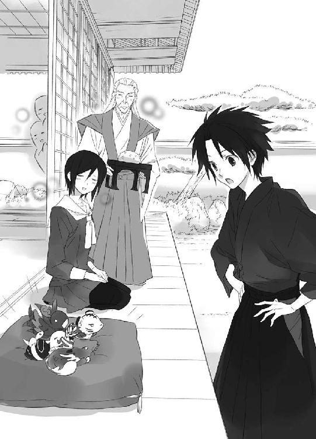
台所に戻った柳生夫人は、割烹着を借りて野菜を刻んでいる清志朗に微笑む。
「ごめんなさいね、遠慮なくって」
「いえ。蒼くんがお世話になってるんです。少しは、僕にもお手伝いさせてください」
にこりと清志朗は微笑み、はにかむように微笑んだ柳生夫人は、爽やか少年の前に、本当に遠慮なく、大笊に盛った野菜を置いた。
正直に柳生邸に侵入した理由を話した清志朗に、柳生藤丸は爆笑した。
「け、決闘状......！」
「すみません、そう見えました」
腹を抱える柳生藤丸に、とんだ誤解だったと清志朗は頭を下げる。
「いや、いやいや......！」
柳生藤丸は妹の真純が、生真面目だが、どこか色気にかける娘であることをよくわかっている。型どおりの、そんな物々しい封書を送ったのなら、誤解されても仕方がない。
「蒼司朗様の様子がよく見えるところに連れて行ってあげようかな？」
それは絶対に、蒼司朗には気づかれない場所♡
（話がうますぎると思ったんだ......☆）
小学校三年生の年に運動会の実行委員をやったとき、清志朗は六年生の柳生藤丸と一緒に仕事をした。六年生で運動会の実行委員長だった柳生藤丸は、頭の回転が速く、とても要領がよかった。あの年の運動会は、帝都学園初等部であとあとまで語り種となるほど盛況で活気があり、競技に参加している児童も、応援している者たちも楽しくて、本当に大成功だった。あのときの柳生藤丸は司令官という感じで、始終抜け目なく様々な指示を出し、身体を使って忙しく動いていたのは、ほとんど下級生だったように思う。
（運動会のときと同じだ）
本来、今日のこの台所仕事は、柳生藤丸の当番だった。
台所の格子窓からは、確かに蒼司朗のいる裏庭の様子がよく見えるのだが、立ち位置をキープするために必要な労働量は、半端ではない。うまいことを言われて、まんまと仕事を押しつけられたようだ。
（蒼くんのこと、見てる暇あるかな）
にこやかな柳生夫人によって、次々に作業台の上に追加されていく食材の山に、包丁を握りながら清志朗は顔を引きつらせる。
門下生の大勢いる柳生道場の台所は、まさしく戦場である。
蒼司朗にもらうご飯やお菓子は、突撃して脇目も振らずに豪快に食べるくせに、食べていいと許可しても蒼司朗が直接与えない物は、たとえ小此木神官長が差しだす物であっても、ピヨ四神は物怖じしながら、少しずつ近づいて、舐めてからちょびっとずつ齧る。
内弁慶なピヨ四神は脅えて警戒しているのだが、お行儀よくお供えをいただいているように見えて、蒼司朗はほっとする。
気分的にも蒼司朗の準備ができたと見て、柳生蘭丸は口を開く。
「訓練で使う棍は、霊力を集中させる、目安となる道具である。神官は祈りという霊力で、触れただけで蟲を塵芥に変え、穢れを祓うので、斬り捨てなくてもいい────」
「はい、そう言われました」
蒼司朗は柳生蘭丸に頷き、溜め息をつく。
最初の一歩目から行き詰まっている蒼司朗に、柳生蘭丸は笑う。
「帝都神社の神官は、そういうことのできる者が選出されていますからね。初心者には不親切になってしまうのも仕方ないでしょう。今日は、この道具を使って、感じを摑んでみましょう」
柳生蘭丸は蒼司朗に、屋敷の奥から出してきた二本の棍のうちの、一本を渡す。
「一度感じを摑んでしまえば、後は数をこなして慣れるだけですから」
見た目も、持った重さも何もかも、帝都神社で使っている物と同じだが。
「この棍は蟲退治の初心者用です。喩えるなら、水泳の授業に使うビート板だとか、自転車の補助輪に相当します。門外漢だった蒼司朗様には、いきなり霊力とか持ちだされても、よくわからないでしょうが、要はこの棒に意識を集中し『穢れを祓う』という気持ちを強く籠めればいいのです」
構えるよう合図されたので、蒼司朗は棍を握る。柳生蘭丸は、蒼司朗の姿勢をチェックし、無駄な力の入っている肘などに触れて、力を抜くよう促した。
構えの姿勢が正しくなると、全体的に少し楽になったように蒼司朗は感じた。
「では、そのまま、意識を集中してみてください」
「はい」
蒼司朗は一度目を閉じて呼吸を整え、握っている棍に意識を集中する。
（穢れを祓う────）
この棍の一閃で、人に害をなす蟲を倒す────。
強く念じたとき。
すうっと手の先、握った棍に向かって流れていく『何か』を感じた。
「うわっ......！」
身体の中の血が、意思を持って動いたような感覚に、蒼司朗は驚いて思わず声をあげ、握っていた棍を放した。からんと音を立てて、棍が蒼司朗の足元に落ちる。
（何だ!? 今の......）
初めての感覚に、産毛が逆立ち、ちりちりと帯電するような気がした。
「ミギャギャ！」
「キュアッキュオ！」
「ピーピーピー！」
「「（しゃーしゃー！）」」
蒼司朗の異変に、ピヨ四神が動揺する。
「あ、大丈夫......、心配ないから」
食べかけのお菓子にも目もくれず、柔らかい座布団から、よじよじと下り、今にも縁側を下りてきそうなピヨ四神に、蒼司朗は来なくていいと、合図する。
これまでピヨ四神は、颯爽と武器（枝打ち斧）を扱う蒼司朗の姿しか見ていなかった。格好悪い蒼司朗の姿は、衝撃的だ。
「ここはどっしりと腰を据えて、蒼司朗様を見守って差しあげましょうぞ、四神様」
柳生翁がそう言い、蒼司朗が頷いたので、ピヨ四神はしぶしぶ座布団の上に戻る。
「ミギュウン......」
「キュオ......」
「ピー......」
「「（しゅー......）」」
切ない声で鳴かれ、蒼司朗は苦笑する。
「心配いらないってば」
奥庭の四神は赤ん坊なので、言い聞かせるだけでは駄目なときもある。潤んだ瞳で、じいーっと見つめられ、蒼司朗は乱暴にがしがしと頭を搔く。
「あぁもう！ しょうがないなぁ！」
たっと走って縁側まで行き、蒼司朗は一度ピヨ四神を、まとめてぎゅっと抱っこする。ピヨ四神は蒼司朗に頭や鼻面を擦りつけ、小さな舌で蒼司朗を舐めた。
ふくふくした温かい命の優しさに、蒼司朗はくすぐったい気分になる。
「大丈夫だよ、オレは」
落ちこむことも多いけれど、まだまだがんばれる。
「だから、見ててよ」
ピヨ四神を落ち着かせてきて、蒼司朗は柳生蘭丸にお辞儀する。
「すみません」
「いいえ」
恐縮する蒼司朗に、柳生蘭丸はくすくすと笑う。
「この棍は、霊力が流れやすいようにできています。霊力の流れを感じられたでしょうか？」
「はい」
正直、蒼司朗はびっくりした。
（あれが、オレの霊力......）
「霊力は、魂の持つ『健全であろうとする力』です。特別な者だけが持っているものではありません。使い方、引き出し方を知らないために、使えないだけです。放出するのではなく、循環させる。蟲退治のお役目は、一分で終わるようなものではありませんから、意識の集中を保つのが、難しいと言えば難しいですね」
拾っておいた蒼司朗の棍を、柳生蘭丸は差しだす。
「すみません」
恐縮して、蒼司朗は棍を受け取る。
柳生蘭丸も棍を握り、蒼司朗と向かいあう。
「では、もう一度。構えて棍に霊力を注ぎ入れてください」
「はい」
教えてもらったとおりに、身体に余分な力が入らないように棍を構え、呼吸を整えた蒼司朗は、握っている棍に意識を集中させる。
（────お庭番、望月蒼司朗、参る────！）
ゆるり......、膨らんだものが流れとなって、棍へと向かう。
（きた）
ちりちりとむず痒いような感じがするが、今度は蒼司朗は取り乱さず、落ち着いて対処する。
見えない霊力の流れは、棍の芯を通って先端に向かう。ぐるりと棍を巡った霊力は、蒼司朗の手へと戻る。戻って、全身を巡る────。
（うん。霊力の流れを感じてるな）
蒼司朗の反応を見、柳生蘭丸はうまくいっているらしいと頷く。
「では、蒼司朗様、霊力の流れをそのまま、意識し続けて......、ゆっくり演武してみましょう。型の一」
柳生蘭丸が棍を動かし、舞うように優雅に型を決める。
蒼司朗も、真似して動いて......。
（棍が、軽い）
帝都神社の体術訓練で演武していたときよりずっと、滑らかに動ける。棍の重さが、ほとんど気にならない。
すうっと綺麗に、型が決まった。
「型の二」
柳生蘭丸は、ゆっくりと次の型をとる。蒼司朗も柳生蘭丸を真似て、二の型をとる。
「型の三」
柳生蘭丸の動きを、蒼司朗は忠実に真似る。
（オレ、かなり雑にやってたな......）
帝都神社での体術訓練は、ついていくだけでやっとだ。棍の先がどう向いているかとか、足先や手の位置の細かいところに気を配る余裕はまったくなかった。
「型の四」
柳生蘭丸が次の型をとる。
（あ、これ覚えてる）
演武のうち、何箇所か追いつける型があって、そこで蒼司朗は遅れを取り返している。
僅かな慢心が気の緩みになったのか。
四の型をとった途端、棍の重さが増した。
「な......っ!?」
突然のことに、蒼司朗は棍を取り落とす。
音を立てて地面に落ちた蒼司朗の棍に、柳生蘭丸は苦笑する。
「精神の集中に乱れが生じましたね？」
霊気の流れが乱れたのだ。
「すみません......！」
蒼司朗は急いで棍を拾った。
演武の続き、型の四をとろうとした蒼司朗を、柳生蘭丸は止める。
「最初からやりましょう。────構え」
言われたとおり、最初の構えをして、蒼司朗はなぜ柳生蘭丸がそう命じたのか、理解する。
（精神集中しないと、腕だけで動かしちゃうんだ）
せっかく摑んだ霊気の流れを、忘れてしまう。
（霊気の流れを、しっかりと感じとる......）
それが、基本。
ちゃんと精神集中し、棍と身体を巡る霊気の流れを摑む蒼司朗に頷き、柳生蘭丸は型をとる。
「型の一」
蒼司朗は柳生蘭丸の動きを正確に真似て、綺麗な型をとる。
ゆっくり、丁寧に柳生蘭丸の指導は続く。
清志朗に炊事当番を押しつけた柳生藤丸は、忍び装束で屋根の上にうつ伏せに寝そべって、裏庭で演武の練習をしている蒼司朗の様子を眺める。
「お庭番は、奥庭の四神様に守られてるんだから、あんなの、無用の修行なのにねぇ」
無駄に真面目な奴だなぁと、柳生藤丸は思う。
「俺には絶対真似できないけど。ま、嫌いじゃないね」
同年代の少年たちの中でも小柄なのは、やはり不利だし、本人にとってもコンプレックスだろう。体格で勝る者に、蒼司朗が常に行ってきた努力は真似できない。他者と比べて、零より値の低いマイナスからのスタートは、蒼司朗にとっては珍しい特別なことではない。
「がんばれよ、お庭番様」
可愛いピヨ四神や優しい従兄弟だけでなく、きっと皆が見守って、応援しているから────。
10
一時間余り、みっちり稽古をつけてもらった蒼司朗は、一通り演武の型を覚え、組打ちの真似事までできるようになった。
「今日は、入門用の棍を使ったので、霊気の流れを摑むのは簡単でした。実戦では、愛用の武器で、同様のことを行います。────蒼司朗様の場合は、そちらの枝打ち斧ですね」
「あ、はい」
（できるのかな......）
不安の見えた蒼司朗に、柳生蘭丸は微笑む。
「練習の数をこなし、場数を踏めば変わってきますよ。わたしでまた何かお手伝いできることがありましたら、遠慮なく真純に伝えてください」
「はい、今日は本当にありがとうございました」
蒼司朗は柳生蘭丸と、最後まで稽古を見守ってくれた柳生真純に深々とお辞儀する。
たっぷりピヨ四神の愛らしさを堪能した柳生翁は、礼儀正しく誠実な蒼司朗に、微笑む。
「そのうち、剣道でもうちに来られるがよい。お待ちしておりますぞ」
奥庭の愛らしい四神に気に入られてお庭番となり、去年と一昨年の巌手圏中学生剣道大会優勝選手、巌手のブルー・ムーンと呼ばれた少年剣士に、興味は尽きない。
「ありがとうございます」
飛びついてきたピヨ四神を抱っこした蒼司朗は、急な頼みにもかかわらず、快く迎えてくれた柳生家の人々に心から礼を言った。
神務実習のある蒼司朗は、奥庭にピヨ四神を放し、作務衣に着替えて帝都神社に向かう。行うことは昨日と同じだ。
（確かに数をこなすと、少しは変わる気がする）
できるようになったのは、本殿の床掃除だけだが、何ひとつまともにできなかったときと比べれば、気分は雲泥の差だ。
夜、神務実習を終え、奥庭に放したピヨ四神を連れて社務所に戻った蒼司朗の顔を見て、蒼司朗のことを心配していた鈴宮神官は、少し憂いが消えたと感じて、ほっと安堵した。
日曜日の帝都神社は、観光客の参詣や予約を入れて宮参りに来る人たちがいて、忙しい。掃除までは前日と同じだが、その後、神務実習生は自習ではなく、忙しい神官の補助をして雑務を手伝う。神務実習中でも一人別行動の蒼司朗は、本殿の掃除の後、正午まで奥庭での作業を行い、社務所でピヨ四神と食事をとる。
「今日、『審判の日』なんですよね？」
尋ねるように言った蒼司朗に、お茶を注いでいた鈴宮神官はにこやかに頷く。
「はい。一時には裁判所にいなくてはいけません」
（裁判所......）
帝都神社のすぐ北側にあるが、蒼司朗は通りすがりに外観を眺めているだけで、中に入ったことは一度もない。
「一緒に参りましょう、蒼司朗様」
「あ、はい」
裁判所でどんなことをするのか、まったくわからないが、鈴宮神官が連れて行ってくれるのなら、心強い。
（裁判所なんだから、裁判？）
裁判所で別のことをするというのも、妙な感じだ。
（『審判の日』なんだしな......）
社務所の受付の仕事を別の神官に引き継ぎ、食事を終えた蒼司朗を誘いに来た鈴宮神官は、きりりと襷掛けも勇ましい、『蟲呼びの夜』のお勤めを思い出させる物々しい格好だった。
「す、鈴宮さん......」
「蒼司朗様と奥庭の四神様は、そのままでよろしいですよ」
愛用の薙刀を握った鈴宮神官は、にこりと蒼司朗に微笑む。ピヨ四神と一緒に『審判の日』を見学する蒼司朗は、武器を持参する必要はないのだろうが、咎められることはなかったので、いつものように愛用の枝打ち斧を持って、鈴宮神官に従う。
「地下？」
社務所の外に出るのかと思っていたのに、階下に下りた鈴宮神官に、蒼司朗は目を瞬く。
「帝都神社と裁判所は、地下で繫がってるんです。普段は結界がありますから、通行できないようになってますけど」
（......お城にも、秘密の抜け道ってあるらしいもんな）
巌手城にいた幼少時に、噂に聞いただけだが、帝都城にもそういうものがあっても不思議ではない。
数メートル置きにつけられた電球で、薄明るい坑道のような地下道を、鈴宮神官は慣れた様子で進む。頭の上には、休日で帝都城公園の散策を楽しむ者たちが大勢いるのに、電球の明かりだけの坑道は、どこか別世界に迷いこんだようで、静かすぎて不気味だ。
「......ミギュ」
「キュウ......」
「ピ......」
「「（しゅー......）」」
ピヨ四神が、蒼司朗にきゅんきゅんとくっつく。
「（うん、大丈夫だよ）」
蒼司朗は脅えるピヨ四神を小声で宥め、安心させるように撫でてやって、鈴宮神官の横を歩く。何やらごそごそとピヨ四神に構っている蒼司朗に、鈴宮神官はくすくすと笑う。
「お清めしてありますから、ここには何も出ませんよ？」
ただ造りが古くて、薄暗いだけだ。だが、外の世界から切り離されたような地下道は、どこにどう繫がっているのか知らなければ、確かに不安に襲われる。今は鈴宮神官は一人でも行き来できるが、最初は説明を受けていても怖かった。
鈴宮神官に安全保証をしてもらった蒼司朗だが。
（ここには？）
ひっかかる言葉に、蒼司朗はひくっと頰を引きつらせる。
帝都は華やかな都会だが、政治の中心地であったので、戦国時代には戦場になったし、近代になっても大きな事件がたくさん起こって、多くの人が死傷した。帝都の地面を掘ると、あちこちから古い人骨が出てくるという都市伝説もある。爆弾事件の被害者たちの幽霊が出るのだと、噂になった場所もある。
（そう言えば、あの爆弾事件から、まだ十年しか経ってないんだ......）
蒼司朗は帝都城下で起こった、恐ろしい爆弾魔の犯行を思い出す。
十年前、城下に仕掛けられた爆弾で、七百二十名が死傷した凶悪事件があった。夏休みで日曜日、人が多く集まる場所という理由で華屋敷遊園に仕掛けられた時限爆弾は、大人も子供も無差別に吹き飛ばした。
破壊現場近くに潜んでいた犯人は、善意の人を装って身動きできない被害者に近づき、被害者の身体の下に爆弾を仕込むという卑劣極まりない方法で、通報を受けて駆けつけた救急隊や、救助を手伝おうとした人々の命を奪った。
華屋敷遊園は翌年に別の場所に移築されて営業を再開し、遊園地のあった元の場所には新しいショッピングセンターが建ち、事件から十年経った今は、あの惨劇を思い出させるものは慰霊碑以外何もないが、あの事件の衝撃は、今も帝都民の心に残っている。
爆弾事件のあった日、蒼司朗は巌手からたまたま帝都に遊びに来ていた。数キロメートル向こうから突然聞こえた爆発音に、蒼司朗と清志朗は脅え、児童公園の遊具の陰に逃げこんでしゃがみ、肩を寄せあって震えた。児童公園で遊んでいた子供には、わけもわからず泣きだす子もたくさんいた。大人は慌てて子供を連れて家に帰った。
蒼司朗と清志朗も、急いで迎えに来てくれた望月造園の庭師たちに抱えられ、望月造園に帰った。途中、爆発のあった現場に向かう救急車や消防車と、数えきれないぐらい擦れ違った。すぐ向こうで燃え上がっている炎と黒煙、非常事態を告げるサイレンの音が怖かった。
厳しい表情になり押し黙った蒼司朗に、どうしたのだろうとピヨ四神たちは様子を窺う。蒼司朗の雰囲気が変わったことに気づいて、鈴宮神官は首を傾げる。
「蒼司朗様、どうしました？」
足を止めた鈴宮神官に尋ねられ、顔を上げた蒼司朗は、歩くのが少し遅れ気味になっていたことに気づいた。
「あ、すみません、何でもありません......！ ちょっと十年前の、爆弾事件のこと思い出しちゃって......！」
気にしてもらうようなことではないと笑う蒼司朗を、鈴宮神官は見つめる。
「蒼司朗様は、華屋敷事件────十年前の爆弾事件のことをよくご存知なんですか？」
「あの日、小学校の夏休みだったんで、オレ、少し前からこっちに遊びに来てたんですよ。清ちゃんと家の近くの公園に遊びに行ってて......。華屋敷は家からちょっと離れてたんで、オレたちは、爆発音しか聞かなかったけど、凄く怖かったです」
「ミギュ」
「キュウ」
「チュピ」
「「......」」
視線を落とす蒼司朗を慰めるように、そっとピヨ四神は蒼司朗に身をすり寄せたり、舐めたりする。一生懸命心配してくれるピヨ四神に微笑み、蒼司朗はくすぐったい気分で、優しいピヨ四神を撫でる。
「わたしはその頃まだ郷里にいたので、あの事件のことは、報道や人伝にしか知りません」
鈴宮神官が帝都に来たのは、高校進学時からだ。
「まだお小さい頃のことですが、こちらにいらしたということは、蒼司朗様は爆弾事件の後の、帝暗殺未遂の件もご存知なんですね？」
蒼司朗は鈴宮神官の言葉に頷く。
未曾有の大惨事に、動揺する人々の気持ちを落ち着かせるため、自ら陣頭指揮をとって混乱を鎮めようとした帝こそ、爆弾魔の真の標的だったのだ。幸いにも犯人は取り押さえられ、事件は未遂に終わった。
人々のことを思って出てきてくれる帝を殺すために、あんな酷い爆弾事件を起こすなんてと、蒼司朗は憤慨したので、よく覚えている。
「......説明は不要、というより、華屋敷事件に関しては、蒼司朗様のほうが、わたしよりずっとよくご存知のようです。今日これから『審判』を受けるのは、その爆弾事件と帝暗殺未遂の実行犯、櫛灘豹磨です」
首都帝都の裁判所は、重犯罪を裁く最高裁判所だ。事件の大きさや罪の重さのために、被告人は大抵、無期懲役か死刑かの判決を受けることになる。
ゆっくりと立ち話をしている時間はない。再び歩きだした鈴宮神官に促され、蒼司朗も歩く。
「確か......櫛灘は無期懲役で、服役中ですよね？」
「蒼司朗様、無期懲役というのは、『期限を定めない』という意味で『無期限』ではないと、わかっていらっしゃいますよね？」
「え......？」
蒼司朗は、きょとんと目を瞬いてから、赤くなる。
「すみません、勘違いしてました......！」
「いえ、語の音が似ていて紛らわしいので、誤って認識されている方は世間に大勢おります」
優しい口調で言った鈴宮神官は、一度呼吸を整えて、言った。
「無期懲役で服役していた櫛灘豹磨は、本日付けで仮釈放になります」
「え......？」
蒼司朗は耳を疑う。
「仮釈放って......」
「櫛灘豹磨は、模範囚でした。────そもそも、無期懲役の判決が下ったのも、事件後の反省の気持ちが認められたからです」
櫛灘豹磨は華屋敷事件を起こした凶悪犯であり、大勢の人間を死傷させたが、ノイローゼ状態にあり、事件当日は責任能力のない状態だったと精神鑑定された。
逮捕され、憑き物が落ちたように正気に返った櫛灘豹磨は自らの犯行を恥じ、神仏に許しを請うように髪を落とし、涙ながらに懺悔の言葉を繰り返した。頰はこけ、目は落ち窪んでげっそりと窶れ、今にも死にそうなほどふらふらしていたが、裁判には出席しなければと決意していたらしい、その櫛灘豹磨の姿があまりにも悲痛だったので、罪は罪として一生消えず、たとえ服役を終えても、許されることのない世間で生きていくことを贖罪とするようにと、無期懲役の判決となったのだ。
自ら命を絶ちそうな男に、死を与えても罰にはならない。消えない大罪を犯した咎人として、残りの人生を生きていくのは、ある意味、死を与えられるよりも過酷である。
（たった、十年......）
被害者やその関係者の気持ちを思い、蒼司朗は唇を嚙む。
現在、終身刑という刑罰はない。刑務所に罪人が増えるばかりでは、刑務所はいっぱいになってしまう。施設として、長期の服役にも限度があるのはわかる。わかるけれど────。
精神鑑定の結果は聞いたし、判決の意味もわかるけれど、遊園地をひとつ滅茶苦茶にし、大勢の人を死傷させておいて、その服役期間はあまりに短いのではないかと、蒼司朗は思う。
「......今、刑務所を出ても、櫛灘は遺族の人とかに、襲われるんじゃないですか？」
爆弾事件の現場は、惨状を思い出させるものではなくなってしまったけれど、大切な人を突然に失った遺族の心の傷は癒えていないし、今も後遺症に苦しんでいる被害者もいる。健康体で出所し、社会復帰する加害者を恨み、自分の手で復讐したいと思う人はきっと、皆無ではない。
「そうですね。可能性はありますね。だから、櫛灘豹磨が仮釈放になる日にちは、世間一般に公表されていません」
「オレは......仮釈放には反対です。まだ早すぎる。あの人のせいで、悲しい罪人が生まれるのを、見たくはありません」
どれほど反省しようとも、絶対に許されない罪はある。加害者に憎しみを抱き続ける人はいる。帝都の法律は、仇討ちを認めていない。被害者と関係者を心身ともに癒せるのは時だけだ。だから、まだ早い。早すぎると思う。
蒼司朗の言葉に、鈴宮神官は頷く。
「確かに、憎しみの生みだす悲しい罪の連鎖は、どこかで断ち切らなければならないでしょう」
（国中のすべての人が納得するような判決なんて、存在しないのかもしれないけど────）
蒼司朗は遣る瀬ない気持ちになる。無期懲役という判決を下した裁判長は、櫛灘豹磨に対して、きっと間違ってはいなかったのだろう。長期収監が不可能という現実も、わかる。だけど。
元凶となる加害者が、手の届かない場所────刑務所にいれば、復讐という罪に手を汚す者はいないのに。
「これまでの話、裁判の判決も、仮釈放も、あくまでも『櫛灘豹磨が信用できる人間である』ことを前提としたものです」
硬い声で告げた鈴宮神官に、蒼司朗は目を瞬く。
「それって、どういう......!?」
「先月、櫛灘豹磨に仮出所前の接見を行った小此木神官長は、すべての事柄において、櫛灘豹磨を信用すべきではない人物だと評されました」
死刑が当然と思われていた裁判を無期懲役の刑とした、涙ながらの反省の言葉も、精神鑑定も、刑期中ずっと模範囚であったことも。小此木神官長は、信用してはならないと言った。
「でも、それじゃあ......」
蒼司朗は困惑する。第三者による鑑定も、言葉も態度も信用ならないのならば、一体何を信用すればいいのだろう。
「だから、『審判』を行います。櫛灘豹磨の隠している『穢れ』の有無を調べ、彼がこの世界の一員として世に出てもよいかどうか、確かめるのです」
地下通路は終わりに近づき、四角い出口から光が溢れていた。
行き着いた先にあったのは、地下をくりぬいただけの、帝都神社の本殿ほどの広いホールのような空間だった。ドーム型の体育館のように、天井も高い。空気は澱まないように循環しているらしく、風を感じてひんやりと涼しい。鈴宮神官が蒼司朗を連れてきた通路の他にも通路があるらしく、蒼司朗が出てきたのと同じような横穴が幾つもあった。
（あれ？ ひょっとして、オレたちが来たのって、一番最後？）
ホールには休日の参詣客に応対できるだけの下位の神官を残し、高位の神官が、鈴宮神官同様、物々しい格好ですでに集合していた。色違いの襷をかけた、帝都城下の四神神社の神官もいる。
（あ、篠原たちも来てる）
四神の戦士である篠原勇輝たち四人も、四神変化した状態でここに来ていた。
ホールのど真ん中、四隅に細い柱が立てられて注連縄を張られた中央に、一間四方の正方形の祭壇が設えられている。
祭壇の上には、樽ほどの大きさのある物が、白い布をかけられて置いてあった。
（明るいのは......天井の、窓？）
ドーム状の天井部の一番高い場所に嵌めこまれた、たくさんのガラスブロックのような物から、それぞれにうまい具合に角度を変えながら幾筋も明るい光が降り注ぎ、ホールの隅々まで明るく照らされている。明かり取りとしては、かなり珍しい形だ。
どこかで見たことがあるような気がして、蒼司朗は天井を見つめて、思い出す。
（ここ......、裁判所の中庭の築山の下だ）
裁判所の中庭にある築山。社務所からの移動距離から考えても、間違いない。
拳大の石英質の石がごろごろと含まれていて、面白いなと思って、蒼司朗は裁判所の建物の外を散策したときに、築山をじっくり見た。あの築山が、この空間の天井となり、光を入れている。指定の時間が午後一時なのは、この空間に築山からの光がもっとも多く入りこむ時間なのに違いない。裁判所の下に『審判』の場がある。
（何、だろう......）
明るいのに、ちゃんと空気は通っているのに、圧迫感に似たようなもので、蒼司朗は息苦しさを感じる。浮き足立つように、何だか落ち着かない。ピヨ四神も警戒するように、出していた頭を引っこめ、蒼司朗の髪や神官装束の中に隠れる。
（ここは......）
教えられなくても、感じる。
（よくない場所だ────）
神官たちの言葉を使うなら、『穢れている』とでも言うのだろうか......。
「蒼司朗様は、あちらの、神官長のおられるところにいらしてください」
鈴宮神官に指し示されたところに、若様がいつも使っている牛車を思い出させる立派な輿があり、その横に小此木神官長がいた。
「はい。ありがとうございました」
蒼司朗は連れてきてくれた鈴宮神官に礼を言い、小此木神官長の元に向かう。
近づいてくる者の気配を感じて、小此木神官長が振り返る。
「やあ。来ましたね」
「遅くなってすみません」
蒼司朗は頭を下げる。蒼司朗が早く来ても、することなどないし、気を遣って手伝ってもかえって邪魔になるので、鈴宮神官は皆の邪魔にならないように、ゆっくり来たのだろう。
「......（ミギュ）」
「（キュオ）」
「（ピ）」
「「......」」
小此木神官長に、ピヨ四神たちは蒼司朗の神官装束や髪の間に隠れたまま、尻尾や尾羽などをチラ見せして、返事した。
（尻だけかよ☆）
蒼司朗はズボラというより失礼なピヨ四神に呆れるが、出たくない気持ちもわかるので、叱れない。鳴き声だけで済ませず、ここにいますと、身体の一部を見せただけでもましだ。
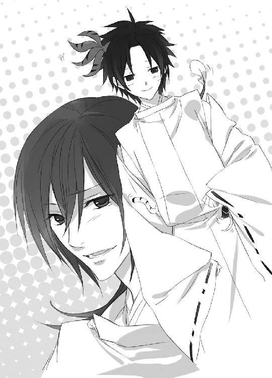
ピヨ四神に斬新なパターンで存在証明されて、くすくす笑う小此木神官長に、何だか居心地の悪い場所だなと思いながら、蒼司朗は尋ねる。
「小此木神官長......、ここは、一体何なんですか？」
ストレートな問いに、小此木神官長は妖しく微笑む。
「ここは、人に裁けぬ者を裁く、『最後の審判の場所』ですよ」
11
小此木神官長は手に持っていた玉串で、祭壇を遠巻きにぐるりと囲む、大きな土俵のように地面に置かれた太い縄を指し示して、蒼司朗に注意する。
「あの縄から中には、絶対に入っちゃ駄目ですからね」
「はい、でも、あれ......」
蒼司朗は眉を顰める。
蒼司朗の知っている祭壇というものは、神聖なものであるはずなのに、あそこは......ひどく禍々しい感じがする。あの祭壇のある場所のせいで、ここはよくないと感じるのだ。
「ねえねえ、蒼司朗くん♡ 喉渇きませんか？ 渇いたでしょう？ 渇いてますよね？」
「は、はい」
笑顔で畳みかける小此木神官長に気圧されて、蒼司朗は頷く。
頷いた（無理やり頷かせた）蒼司朗に、小此木神官長は細い竹筒の水筒を渡す。
「さ、ぐいっといきなさい、ぐいっと♪」
「は、はぁ......」
（水、なのかな、これ......？）
疑わしいが、小此木神官長ともあろう人がこんな場所で、蒼司朗に妙な悪戯を仕掛けるはずはない（と思いたい）。
きゅぽんと栓を外し、蒼司朗は渡された物を飲む。水らしい物はとてもよく冷えていたが、これといった味も匂いもしない。
「ミギュ？」
なぁに？ と顔を出したチビ白虎に、小此木神官長は懐から別の竹筒の水筒を取りだす。
「四神様は、こちらをどうぞ♡」
ピヨ四神様には、綺麗な清水♡
「ミギュギュ」
「キュアキュオ」
「チュピピッ」
「「（しゃーしゃー）」」
「順番順番っ！」
（何でこいつら、こんなに意地汚いんだよ☆）
急いで自分の分を一気飲みした蒼司朗は、空になった水筒を小此木神官長の持っている水筒と交換し、くれくれと顔を出したピヨ四神に、水を飲ませた。
ピヨ四神に水を飲ませながらも、祭壇を警戒する蒼司朗に、小此木神官長は、にっこり微笑む。
「蒼司朗くんの感じるとおりですよ」
「それって......」
禍々しい場所に祭壇を設えるなんて、まるで悪魔を呼びだす儀式のようではないか────！
（それに、この輿────）
恐ろしく強固な結界によって守られている。そして、確かに人の気配がする。誰か乗っている。
（若様......？）
あの、金の髪の麗しい若様が中にいるのだろうか。
（それとも......）
帝？
輿の入り口に下げられた御簾から、中の様子は覗けない。
地上に通じる通路の入り口を、木の扉でしっかりと閉ざし、ホールに集まった神官たちは、一人、二人と移動を始めた。
祭壇を見つめ、ぐるり、祭壇を囲む縄に沿って、神官が並んだ。
四神の戦士は、それぞれの方位に、四神神社の四人の神官とともに立つ。
シャン......
シャン......シャン......シャン......
祭壇を囲んだ神官によって、厳かに鈴が鳴らされる。
祭壇と、祭壇をぐるりと取り囲んだ縄、その間の四方位に立てられた台に篝火が灯される。
「時間ですね」
空になった水筒を受け取り、小此木神官長は襟を正す。
「蒼司朗くん、この輿は君に預けます。君は輿を守ってください」
懐から取りだした四本の玉串で、小此木神官長は輿と蒼司朗を四角く囲む。
蒼司朗は突然の小此木神官長の言葉に驚く。
「え......？」
輿は強固な結界で守られ、さらに玉串による結界で守られた。
「できますよね？」
蒼司朗は見学として、この『審判の日』という儀式に参加を命じられた。守れと言われた輿は、蒼司朗に守られる必要もない。
（小此木神官長の言葉の意味することは────）
────ここから動くな。
「はい......！」
蒼司朗は紐を解き、枝打ち斧の刃に被せていた布を取る。
柄の長い武器を持ち、輿の側に控える蒼司朗の姿は、ひときわ小柄な体格から、槍持ち（の稚児）か、天童のように見える。立ち会うだけで、何の役にも立てない蒼司朗だが、神官装束を纏っただけの者にはまったく見えない。
何か嫌なものを感じて、この場の雰囲気に圧倒されていた蒼司朗だが、役目を与えられれば、なおざりにはできない。目を逸らさずに見学するようにと、小此木神官長は考えたのだろう。
地面に置かれた縄を越え、新庄神官が奥から注連縄を潜って、祭壇に上がった。
祭壇の上にあったものから、布が取り除けられる。
布の下にあったのは。
（人間......？）
あまりに静かで微動だにしなかったので、生き物の気配を感じ取れなかった蒼司朗は目を瞬く。
祭壇の上には、白いシャツとスラックス姿の男がいた。
時代劇で白洲に引きだされる罪人のように、後ろ手に縛られ、猿轡と耳まで覆う目隠しをされて、膝をついて座っている。
男を見つめて、蒼司朗ははっと目を見開く。
（────櫛灘！）
あの祭壇から祈りか何かを送るのではなく、本人がそこにいる。
華屋敷事件で多くの人間を死傷させ、人々の運命を変えた男、櫛灘豹磨がそこにいる────！
櫛灘豹磨の背後に立った新庄神官は、刃渡り四尺はありそうな大段平を振り上げ......。
（っ......！）
距離はあるのに、大段平の巻き起こす風圧まで感じそうな迫力に、蒼司朗は息を吞む。
ぎらり、輝いた刃が、勢いよく振り下ろされる。
一刀のもとに斬り捨てられ、どさりと音を立てて落ちたのは、櫛灘豹磨を拘束していた縄と猿轡、目隠しだった。
（首を斬るのかと思った......！）
新庄神官に迫力がありすぎて、祭壇が斬首台に見えた。
恐怖で、ぞくっとした蒼司朗は、額に浮いた冷や汗を手の甲で拭う。蒼司朗を元気づけるように、隠れているピヨ四神が、ちょいちょいと温かくて小さな舌で蒼司朗を舐める。
（うん、平気平気）
気遣ってくれるピヨ四神を、蒼司朗は着物の上からそっと撫でておく。
くるり、大段平の刃を返し、小此木神官長にお辞儀して、新庄神官は祭壇から下り、注連縄の外に出る。
突然、すべての縛めを解かれた櫛灘豹磨は、上体のバランスを崩し、右手を祭壇についた。顔を顰め、光に慣れない目を瞬く。
身体は自由になったものの、櫛灘豹磨を取り巻く状況は、安堵できるようなものではなかった。
祭壇に上げられた櫛灘豹磨は、武器を手に、物々しい様子で周りを取り囲む神官たちに、困惑と不安の表情を浮かべ、萎縮して小さくなる。
玉串を持ち、縄を越えぬ位置で櫛灘豹磨の真正面に立った小此木神官長は、厳かに告げる。
「これより、櫛灘豹磨の『審判』の儀を執り行う！」
シャン......シャン......シャン......
祭壇を囲んだ神官によって、厳かに鈴が鳴らされる。
おどおどとした表情で、櫛灘豹磨は周りを見回す。
生きた心地もしないという様子が、その表情から読み取れた。
（これが......爆弾で大勢の人の命を奪い、帝の命を狙った男......）
蒼司朗は帝都に来てから、帝の命を狙う狼藉者を、うんざりするほど成敗している。だが帝都史上でも、櫛灘豹磨が行ったような残酷な無差別大量殺人を行った者は、他にいない。
愛用の枝打ち斧をぎゅっと握り、緊張しながら蒼司朗は櫛灘豹磨を見つめる。
（この男が、十年前華屋敷遊園に爆弾を仕掛けたんだ......！）
爆弾で傷つき、倒れたたくさんの人の身体の下にも、爆弾を仕掛けて、救助しようとした親切な人や救急隊員を吹き飛ばした、非道の卑劣漢────！
しかし今、祭壇の上にいるのは、どこにでもいるような、ちょっと気弱そうな瘦せ気味の男だ。面差しは秀麗で、三十歳を過ぎているはずなのに、二十歳前後の学生のように頼りなく見える。少し頰のラインがシャープになっているが、新聞や雑誌の事件報道に何度も使われた、帝都大学入学時の写真の顔と、ほとんど変わらない。
奇妙な儀式の祭壇に上げられ、おどおどしている櫛灘豹磨は、蒼司朗の目にはまったく普通の人に見えた。
普通すぎて、蒼司朗はかえって恐ろしかった。
普通にどこにでもいそうな男が、あんな凄惨で残虐な事件を起こしたのだ。
確かに、心神耗弱状態にでもあったのだと考えなければ、とても信じられない。
シャン......シャン......シャン......
祭壇を囲んだ神官によって、厳かに鈴が鳴らされる。
（魔がさした......）
事件を起こした後、逮捕され、拘束されて、憑き物が落ちたと櫛灘豹磨は言った。
どんなモノが憑いていたのかは、まったくわからないけれど。
（人を狂わせる、魔......）
祭壇の上で脅えて萎縮している櫛灘豹磨を見つめながら、蒼司朗は思う。
（魔が憑きやすい人っていうのも、いるんだろうか）
見えない場所に、何か、魔の入りこみやすい隙間のようなものを持っている人。その人が呼びこむのではなく、いつの間にか魔に入りこまれてしまうような。
（この儀式は、それをなくすものなのかな......）
蒼司朗にはよくわからないが、もしもそんな隙間があるならば、それをそのままにして再び社会生活を始めるのは危険だ。
本人にその気がなくても、また恐ろしい事件を起こしてしまうかもしれない。
「────天清浄 地清浄 内外清浄 六根清浄と 祓給ふ......」
祭壇を取り囲む神官が、鈴を振りながら祝詞をあげる。声はホールに反響し、重みを持って身体に響く。
（うわ......）
押し寄せてくるという表現がぴったりな祝詞に、蒼司朗は驚く。本殿で行った神務実習での祝詞とは、迫力が違う。
地下の閉鎖空間で厳かにあげられるのは、天地すべてを清め祓う祝詞。
「......天清浄とは 天の七曜九曜 二十八宿を 清め 地清浄とは 地の神三十六神を 清め内外清浄とは 家内三寳大荒神を 清め 六根清浄とは 其身其體の穢れを 祓給い 清め給ふ事の由を 八百万の神等 四の聖獣 諸共に 小牡鹿の 八の御耳を 振立て聞し食と申す......」
身体に響くその声は、怖いほどであるけれど。
（怖く、ない......）
確かにこれは、清めの祝詞だ。ここにいる女性は朱雀の戦士の芙蓉薫子のみで、無骨な男性の太くてがっちりした声であげられる祝詞は迫力に満ち、攻撃的にも聞こえるほどで、柔らかくも優しくもないけれど、浄化しようという強く逞しい意志を感じる。
（あ......）
ホールに入ったときから感じていた、あの何とも居心地の悪い感じがなくなったことに、蒼司朗は気づく。浄化されたのだ────。
「天清浄 地清浄 内外清浄 六根清浄と 祓給ふ」
鈴を振り、神官たちは清めの祝詞を繰り返す。
小此木神官長は、すうっと持ち上げた玉串で、櫛灘豹磨を指し示す。
「櫛灘豹磨、あなたは法によって裁かれ、服役期間を終えました。己の犯した罪を悔い、十分に反省したとして、再び今日、社会に戻ることを許されました。────しかし、わたし、帝都神社神官長・小此木紫暮は、あなたの懺悔を認めません」
大勢の神官の前で、正面きってきっぱりと言いきられ、櫛灘豹磨は顔を歪める。
「......そんな......」
呟き声は小さかったが、悲痛だった。
蒼司朗は思わず櫛灘豹磨が可哀想になったが、ぐっと枝打ち斧を握って耐える。
櫛灘豹磨は、許されない大罪を犯した。法は彼を裁き、刑期は終わったが、被害者や関係者、世間は彼を許さない。嫌われて当然のことを、してしまったのだ。小此木神官長が言ったことより、もっと厳しい罵声を浴びせられ、冷遇される。それを受け入れ、耐えることこそが櫛灘豹磨の償いなのだ。
動揺の様子もなく、神官は祝詞を続ける。
「二十歳そこそこの年齢で、あれほど小型で精巧で、残酷な爆弾をいくつも作れたことからもわかりますが、あなたはとても頭のいい人です。十年前のあのとき、わたしが帝の側にいなければ、きっとあなたの暗殺計画は成功していたでしょう」
（え......？）
報道と違うと、蒼司朗は目を瞬く。
十年前にも帝都神社にいただろう、このホールにいる何人もの神官も櫛灘豹磨も、小此木神官長の言葉に驚かず、否定しない。
（報道が、違うんだ......）
櫛灘豹磨による帝暗殺を阻止したのは、帝都神社の小此木神官長。
沽券に関わりかねないので、帝都警察の警官隊の活躍によって、暗殺は阻止されたのだと報じられた────報じさせた。
「あなたは、自分が他人にどう見えるか、とてもよくわかっている。どういう態度をとれば、どう思われるか、知っている。自分を思いのままに印象づける術を知り、実践できる人です。そして、何ひとつとして諦めることはない。自由の身となった後、あなたはもう一度、いえ、機会があれば何度でも、帝の命を狙うでしょう」
「......そんな、こと......」
断定した小此木神官長に、櫛灘豹磨は目に涙を滲ませて、緩く首を振る。
「他の者たちは騙せたでしょうが、このわたしに、小芝居は通用しませんよ」
うなだれて肩を震わせる櫛灘豹磨に辛辣に言いきって、小此木神官長は玉串を振る。
「心正しい者は、何も恐れることはない。これは、古からの裁き。清い者は残り、穢れた悪しき者は、その穢れに見合うだけを持ち去られる────」
小此木神官長が投じた玉串が、櫛灘豹磨のすぐ目の前、祭壇に突き立った。
「穢れよ、重みと化せ」
突き立ったのは、細い玉串。その祭壇は、櫛灘豹磨だけでなく、がっちりとした屈強な身体の新庄神官をも、びくともすることなく乗せたもの。
ばきり。
祭壇は、真っ二つに折れ、そして粉々に砕けた。
「う、わあぁっ......！」
大きな井戸の縁に、木の板を置いて布をかけていただけだった祭壇は、崩壊する。折れた板の破片に跳ね上げられて、布が捲れ上がり、上に乗っていた櫛灘豹磨の身体が傾ぐ────。
（落ちる......！）
櫛灘豹磨の姿に息を吞んだ蒼司朗は、祭壇に見せかけられていた井戸、塞いでいた蓋をなくした井戸から、溢れ出てくるモノを目撃する。
（蟲!?）
その井戸は、人を喰らう恐ろしい蟲のいる、穢れと瘴気に塗れた異世界と繫がっていた。
「ギィイッ！」
蓋の残骸を撥ね飛ばす勢いで姿を現した、大蛇か龍とも見紛う巨大な蟲────鰐を節足動物に変えたようなモノが、無防備に投げだされた櫛灘豹磨を、ひと吞みにする。
「!!」
衝撃的な光景に、蒼司朗は声もなく目を瞠る。
神官たちは鈴を振り、祝詞を続ける。
櫛灘豹磨が己の穢れで招き寄せた蟲は、彼のすべてを奪い去った。
盗みを働く悪い手を持つ者は片腕を、他人の物を奪って逃げ去る者は足を。噓偽りを許さず、業に塗れた部位だけが蟲に奪われる、厳格にして酷な『審判』。
人の世の法で裁ききれるものに対しては、行われることのなくなった、古の儀式────。
井戸から出てきた蟲たちは、しかし注連縄で区切られた見えない立方体に阻まれて、その外に出ることはできなかった。
注連縄が第一の結界。そしてそれを囲んだ縄が、第二の結界。
小此木神官長は櫛灘豹磨を吞みこんだ蟲を険しい面持ちで見つめ、懐から玉串を取りだし、それを打ち振る。
「極めて汚も滞無れば 穢とはあらじ 内外の玉垣 清淨と申す」
大勢の祝詞の声に重なった、涼やかな小此木神官長の祝詞の声は、しかし蒼司朗の耳に、はっきりと聞き分けられた。
櫛灘豹磨を丸吞みにした巨大な蟲も、結界に阻まれ、その外に出ることはできない。
狂おしく首を振り動かした巨大な蟲の口が、ぐぁっと開く。
「......小、此木、紫暮ぇぇっ......！」
呪詛するような低い声で小此木神官長の名を呼んだのは、両手と両足を突っ張り、全身を使って巨大な蟲の口をこじ開けた櫛灘豹磨だった。そこには、さっきまでの気弱な青年の面影など微塵もない。野心を持って一瞬にして大勢の人間の命を奪い去った、残酷で恐ろしい男がいるだけだ。
「やっと本性を現しましたね」
小此木神官長は、冷ややかに櫛灘豹磨を見つめる。
（本当に見事でしたよ、あなたの芝居は）
弁護士も裁判官も医者も被害者も誰も彼も、櫛灘豹磨の演技に騙された。一分の隙もなく被られた気弱な青年の仮面を見破ったのは、穢れに気づいた小此木神官長だけだ。
強酸を含む蟲の体液に塗れ、溶かされかけた壮絶な姿で、櫛灘豹磨は、かっと両の目を見開いて小此木神官長を見つめる。
「小此木......！ 帝より、誰よりも先に......、貴様を殺しておけばよかった......！」
節々の皮膚が裂け、がくがくと震えた櫛灘豹磨の姿は────。
がちりと閉じられた蟲の顎へと消えた。
力尽き、蟲に喰われた櫛灘豹磨の壮絶な姿に、蒼司朗はぎゅっと枝打ち斧を握り締める。
嚥下のためか、身悶えるように首を振り動かす巨大な蟲をひたと睨み、小此木神官長は神官たちに命じる。
「鈴と祝詞を！」
小此木神官長のほうに向けて動かされた蟲の頭部が────。
ぼこ、ぼこりと盛り上がり......。
櫛灘豹磨の顔を持つ人面瘡となった。
「ギィイイイッ！」
夥しい瘴気に塗れた巨大な蟲の哭き声に、注連縄の結界は粉々に千切れ、消滅した。
12
蟲は喰らいあって巨大化する。それは、劣るモノが勝るモノに取りこまれるという、絶対の法則だ。力でも、能力でも。
櫛灘豹磨の執念は、巨大な蟲をも凌駕した。
身体は吞まれて蟲に喰らわれたが、巨大な蟲の意識は、櫛灘豹磨に吞みこまれた。
巨大な蟲の放った瘴気に、祭壇を囲んでいた注連縄の結界と篝火は、一瞬にして消し飛んだ。二重結界の内側の結界が消滅し、外側の結界が大きく撓む。
祝詞をあげていて、対処の遅れた神官が、撓んだ結界に弾き飛ばされ、ホールの壁面に叩きつけられた。
内からの圧に負け、結界の要となっている縄が動く────。
（やはり恐ろしい男だ......！）
小此木神官長の審美眼に狂いはなかった。誰にも見せず、心の奥底に隠し持った穢れた思い────、他人の命など何とも思わず、何人もの人間を傷つけ、滅茶苦茶にしても己の野望を遂げたいという願いは、立ちはだかる者すべてを激しく憎悪していた。
審判によって己を喰らった蟲さえも従え、意のままに操ろうとする気迫は、まさに鬼気迫るものがある。『審判の日』の仔細は、記録されてすべて残っているが、こんなに凄まじいものはない。
異界の蟲を忌むべきモノと嫌悪しながらも、その蟲と異界を賢しく利用し続けている、そんな国の仕組みを容認している帝こそが諸悪の根源と、櫛灘豹磨は侮蔑し憎悪している。浅ましい帝に従う者たちこそ、櫛灘豹磨にとっては滅ぶべき愚者なのだ。
潔癖すぎる不世出の天才を、小此木神官長は残念に思う。
（すべての世界は、切り離され、隔絶された状態では存在できない。そのことを、わかってくれたのなら......）
信念という狂気に憑かれた男には、聞く耳などなかった。煩わしいことはすべて、聞き入れている振りをしてやりすごした。
嫌悪し、憎悪する櫛灘豹磨の激しい思いは、蟲に己が取りこまれることすら、拒絶した。蟲を超えた怪物と化した。
「体勢を立て直しなさい！ 結界を直すのです！」
神官を叱咤し、小此木神官長の投じた何本もの玉串が縄に突き立ち、縄を地面に縫い止める。
しかし、玉串が突き立ったものの、地面と繫ぎ止めることが僅かに間に合わなかった縄が、そこから千切れた。
溢れ出た禍々しい瘴気で、光に満たされていたはずのホールが暗く翳る。
「しっかりなさい！」
帝都神社の神官たるものが、何たる無様な......！
小此木神官長は、壁に叩きつけられて昏倒した神官の身を守るべく、その神官に向かって玉串を投じる。着物の袖や袴と地面を繫いだ玉串は、人一人分の結界を成して、神官の身を守る。玉串に籠められた霊力に揺さぶられ、何人かの神官が、はっと意識を取り戻した。
「ギイッギィイッ！」
井戸から抜けだした巨大な蟲が、注連縄の結界の残骸を踏みにじる。
「人間が蟲の身体を乗っ取るなんて......！」
青龍の戦士・安藤奏は、蟲の意識を奪い取った櫛灘豹磨に驚愕する。
こんなことは、考えられない────！
「オ、コノギィィ......！」
牙を剝き、巨大な蟲が吠える。神官を守り、結界を復活させようとしている小此木神官長に、巨大な蟲が飛びかかる。
だが小此木神官長は、巨大な蟲には目もくれなかった。
「蒼司朗くん！」
切迫した小此木神官長の声に、反射的に蒼司朗は臨戦態勢になり、枝打ち斧を構える。
小此木神官長に襲いかかるかと見えた巨大な蟲は、その背後にあった輿を狙っていた。
（させない......！）
小此木神官長に注意を促されるまでもなく、自分のいるほうに向けられた微かな殺気を感じた蒼司朗は、巨大な蟲を睨み据え、隙なく枝打ち斧を構えていた。
蒼司朗愛用の枝打ち斧は、柳生邸で使わせてもらった棍のように、霊気の流れを摑みやすいものではないけれど────。
（いける......！）
以前とは微妙に違う手応えを、蒼司朗は感じている。熟練の神官ほどの力はないだろうが、この枝打ち斧の一撃で、斬って捨てるのではなく、蟲を退治し、浄化できる。
「────お庭番、望月......」
「出るんじゃねぇ！ 馬鹿野郎っ！」
蒼司朗の前に、白銀の光となって駆けつけた白虎の戦士・篠原勇輝が立ちはだかる。突然目の前に現れた篠原勇輝に、蒼司朗は思わず身を退く。
「玄武装甲、救漣防闘！」
四神最強の防御力を誇る玄武の戦士・蔵田実親が、さざめく水の障壁を操って、結界に守られた蒼司朗と輿を襲おうとした巨大な蟲と瘴気、瘴気に取り巻かれて吹っ飛んできた小さな蟲たちを敢然と撥ねつける。
「白虎刻抉、毒禍爪爛！」
篠原勇輝は手に装着した鈎爪型の武器で、巨大な蟲に斬りつける。
「ギイッ！」
玄武の戦士の水の盾に阻まれ、白虎の戦士にざっくりと斬りつけられて、巨大な蟲は傷口から体液を撒き散らしながら苦悶する。白虎の戦士に受けた傷は、瞬く間にどす黒く変色し、ぼとぼとと細胞が崩れ落ちた。
「ギイッ、ギイィッ！」
苦悶して激しく暴れる巨大な蟲の体液は、強酸を含んでいる。
穢れを寄せつけない防御結界とは、対処する性質が違い、強酸の飛沫を防ぐことはできない。
「避けなさい！」
小此木神官長の言葉に、大段平を風車のように回して新庄神官は盾になり、気絶している神官を介抱していた神官を守る。動ける神官は、蟲の体液の飛沫を浴びないよう、他の神官を庇ったり、急いで退避する。
審判の儀のために、小此木神官長は蟲のいる異世界と繫がった井戸を開いたが、こんな異常な展開は想定外だ。
蓋を取り除けてしまった井戸は、二重結界を縮めて、再び封じるはずだった。
穢れを纏う蟲の出現は、この地下のホールで、食い止めねばならない。
「結界を！」
小此木神官長に命じられ、結界を作れるだけの余力のある鈴宮神官たちは、千切れた縄に急いで飛びつく。武器を構えた神官は、結界の修復に当たる神官を守り、作業の邪魔になる蟲を退治する。縄に与えていた結界の力を復活させ、縄が繫がっていないことを逆に利用して、絞っていって包囲を縮める────！
「朱雀炎舞、劫火招来！」
朱雀の戦士・芙蓉薫子が、舞うように優雅に羽根扇を振り動かす。羽根扇から放たれた、渦巻く紅蓮の炎は、蠢く小さな蟲たちを一瞬にして焼き尽くし、ホールに充満する瘴気と穢れを祓う。
「青龍斬撃、剣乱破砕！」
青龍の戦士・安藤奏が大きく振り下ろした巨大な青龍刀から、何百という白刃が放たれ、巨大な蟲が切り刻まれる。
「ギイィイアッ......！」
頸部周辺を何箇所も大きく切り裂かれ、巨大な蟲は頭部を支えきれずに崩れ落ちた。
櫛灘豹磨の禍々しい人面瘡を持つ頭部が、どうと地面に落ちる。
「死ぬぞ！ テメエ！」
結界の外に飛びだしていくところだった蒼司朗に、篠原勇輝が嚙みつくように怒鳴る。
満足に自分を防御結界で守れない者が、戦闘状態の四神の戦士のいる場所にのこのこ出て行ったなら、命の保証などできない。そして蒼司朗の存在は、四神の戦士の行動を制限する枷となる。
いち早く蒼司朗の気持ちと行動を察した篠原勇輝は、危険から蒼司朗を救うために飛んできた。
（まったくの素人より、ちょっと齧ったぐらいの奴が、一番性質が悪いんだ......！）
だから篠原勇輝は、蒼司朗が神官の修行をすることに反対なのだ。
「篠原......」
蒼司朗を背後に庇ったまま、篠原勇輝は怒鳴る。
「テメエなんざ、結界の中でおとなしくしてりゃいいんだよ！」
地面を鈎爪型の武器で抉って、白虎の結界の印を刻みつけ、蒼司朗と輿を守る結界を強化して、篠原勇輝は強酸の体液を撒き散らしている巨大な蟲に挑む。
「白虎裂牙、猛重崩咬！」
鈎爪型の武器をつけた拳を、白虎の戦士・篠原勇輝は巨大な蟲の身体に突き入れた。
「ギヒィッ！」
白虎の戦士の拳がめりこんだ部位から、蟲の体液が噴出する。
恐ろしい勢いで撒き散らされるのは、強酸の飛沫。
「玄武烈封、鎮露凍！」
玄武の戦士・蔵田実親の振るった多節鞭が、飛び散った蟲の体液を瞬時にして凍らせる。
「紅翼炎技、獄烙浄土！」
真紅の翼で宙を舞い、羽根扇を優雅に振り動かした朱雀の戦士・芙蓉薫子は、神官たちが包囲を狭めていこうとしている結界の内に向けて、紅蓮の炎を放つ。
井戸を通じて、異世界から次々に這い出てくる蟲、井戸の近くに転がっていた巨大な蟲の身体の一部を、一瞬にして朱雀の劫火が焼き払う。
朱雀の力によって穢れが祓われて、清くなった井戸を囲む結界を、神官たちは一気に縮める。抜き取るようにして素早く着物を脱ぎ、袴だけになった新庄神官は、脱いだ自分の着物を被せて井戸に蓋をし、がっちりと押さえつける。
井戸を塞いだ新庄神官の着物の上に、小此木神官長が投じた玉串が載った。
縄をかけ、井戸を結界で封じた神官たちは、鈴を鳴らす。
「────極めて汚も滞無れば 穢とはあらじ 内外の玉垣 清淨と申す......！」
祝詞があげられ、結界は強固なものになる。
蟲の出現する、異界と繫がっていた場所は、間に合わせの物を用いてだが、完璧に閉じられた。
後は、このホールに出現した蟲を退治し、浄化するだけ。
「結界に退避せよ！」
小此木神官長は、そう命じるのだが────。
蟲にも痛覚は存在し、神経の伝達回路が分断されれば、身体の自由はなくなる。ずたずたに身体を切り裂かれている蟲は、動けるはずはなかったのに、激しく暴れた。
小さな蟲なら神官たちは退治して浄化できるが、傷ついて強酸の体液を撒き散らしながら、恐ろしい勢いで暴れ悶える巨大な蟲の身体は、危険極まりない。暴れる蟲と強酸を避けるのに精一杯で、数人で集まって強固な結界を作るどころではない。
「オ、コノ、ギィィ......！」
縦横無尽に激しく身悶えて、巨大な蟲は小此木神官長を執拗に狙い、貴人の輿を狙う。暴れまわる巨大な蟲に巻きこまれて、神官が弾き飛ばされ、強酸を浴びる。
小此木神官長はできるだけ自分に引きつけようとするのだが、来ると見せかけて、尾や脚を用いて巨大な蟲は、蒼司朗の守っている輿の結界を襲う。
「......っ！」
凶悪な尾の一閃は、結界に敢然と阻まれるものの、蒼司朗は生きた心地がしない。
戦国時代に討たれたある武将は、首を刎ねられてもなお宿敵に喰らいつき、その首を食い千切ったという。妄執か怨念か、凄まじい気迫は、首だけになっても凄絶に、敵を滅ぼした。
「朱雀浄焰、火激弾！」
朱雀の戦士・芙蓉薫子の放った炎の塊が、神官に降りかかろうとした強酸の飛沫を焼き払う。
「玄武凍攻、渦潮封結！」
玄武の戦士・蔵田実親は、凍りつかせて、巨大な蟲とその強酸の体液から神官を守る。
白銀の光と化した篠原勇輝は、負傷していたり、蟲と強酸に阻まれて身動きできない神官を攫い、新庄神官や鈴宮神官のいる中央の結界へと一箇所に集める。篠原勇輝の動きの妨げとなる蟲を、安藤奏が斬り捨てる。
「四神究極奥義、解禁！」
蒼司朗のいる、輿を守る結界に駆けこみ、小此木神官長が命じる。
四神の戦士は、それぞれの守護方位に────。
切り裂かれた傷から溢れた強酸の体液に塗れながら、巨大な蟲は口を開いた。
「────！」
それは、可聴音域を超えた哭き声────。
「！」
四神の戦士たちは、びくんと身を震わせ、苦悶の表情を浮かべて耳を押さえる。
「篠原!? 芙蓉先輩!?」
強固な結界の中にいる蒼司朗には、何が起こっているのかわからない。突然様子を変えた篠原勇輝たちに、ただ驚く。
手に握った玉串や、結界を作った玉串の紙垂がびりびりと震え、苦悶する四神の戦士たちが耳を押さえているのを見て、小此木神官長は小さく舌打ちする。
「......超音波か......！」
（場所が悪い......！）
地下の閉鎖空間の壁に反響し、効果は絶大だ。
細かく振動した小さな蟲が、あちこちで次々に破裂した。
ホールの中央に新しく作った、安全領域である結界の内に退避した神官たちも、結界を小さく揺する見えない力を感じる。
四神の戦士は印を結び、懸命に祝詞をあげようとするのだが。
（祝詞が......）
音のない哭き声に、搔き消される────！
中央の結界に退避している鈴宮神官は、指示を仰ぐように小此木神官長を見つめる。
（このままでは......）
万一のことを考えて、小此木神官長は帝都神社に救援要員たる神官を残し、四神神社の神官の応援も要請していた。おおよその終了予定時間になっても、『審判の日』の儀が終わらない場合、地下通路の扉の向こうに待機している柳生真純が知らせに走る。柳生真純が異変を察知しているならば、もっと早く応援は来るだろうが。
（それまで、持つか!?）
13
「......朱雀炎舞、劫火招来！」
発動の気配もない究極奥義に業を煮やし、キレた芙蓉薫子が、ホールに火を放った。
「うわ！」
「ル子姉っ！」
篠原勇輝と安藤奏は慌てて防御印を結んで、炎を回避する。
最強の盾で炎を防ぎ、逃げこもうとする蟲を退治しながら、蔵田実親は溜め息をつく。
「こうなるんじゃないかと思ったんだ......」
「おーっほほほほほ！」
炎に焼かれて、のた打ち回る巨大な蟲を見下ろして、真紅の翼で飛びながら芙蓉薫子は高笑いする。
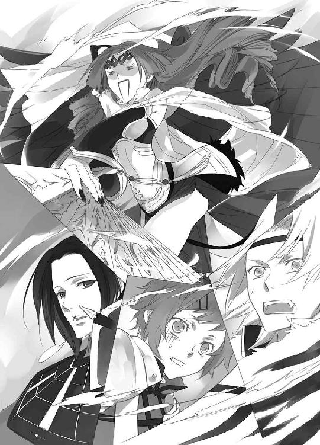
「────！」
聞こえない声で咆哮する巨大な蟲に、ホール全体が震える。
「お、小此木神官長......」
「焼き尽くされるのも困りますが、それよりもここが崩れ落ちるほうが早そうですね」
中央にある結界────蟲の超音波で崩壊の危機に晒されている......で、赤い襷をかけた朱雀神社の神官が、真紅の翼で飛んでいる朱雀の戦士・芙蓉薫子に、白いハンカチを振る。
「お嬢様～......！」
羽根扇を動かして、エキセントリックにホールに火を放っている芙蓉薫子は、気づかない。
「蔵田先輩っ......！」
白銀の光と化し、篠原勇輝は水と氷を操ることのできる玄武の戦士・蔵田実親のところに行く。
「この炎、何とかしてください！」
防御結界で燃やされないよう何とか防いでいるものの、熱い。防御結界のせいで息苦しい。
超音波と熱と息苦しさで、不快指数はＭＡＸだ。
「駄目ですよ、勇輝サン！」
慌てて割りこむ安藤奏に、蔵田実親は苦笑しながら頷く。
「冷やすのは、とっても簡単なんだけどね」
熱く焼けていたものを、急速に加冷すると、物質はその温度変化に耐えられず、壊れる。
あの巨大な蟲が先に粉々に砕け散ってくれればいいが、超音波を発したまま、執念で残る可能性が大だ。超音波攻撃を受けて、びりびりと振動しているホールは、温度変化の衝撃で、一気に崩壊する。
（熱い......）
額に浮かんだ汗を手の甲で拭い捨て、蒼司朗ははっとする。
炎、ということは────。
「大丈夫ですよ」
視線で蒼司朗の言いたいことを読み取って、小此木神官長は微笑む。
「朱雀の放つ炎は、酸素を使いませんから」
ホールの中が酸欠になることはない。
「結界の中にいても、少しばかり熱いのや、息苦しいのは、我慢しなければなりませんけどね」
「......ミギュ」
「キュピ」
「ピチュ」
「「（しゅー）」」
暑っ苦しいのと、不快感に耐えかねて、蒼司朗に隠れていたピヨ四神が顔を出す。
「ミゴ、ミゴゴゴゴ！」
「キュアッキュオ！」
「ピチュチュピ、チュピ！」
「「（しゅーしゅーしゅー！）」」
「お、落ち着け、お前ら......！」
不機嫌全開のピヨ四神に、蒼司朗はおろおろし、小此木神官長は温い笑みを浮かべる。
「四神様、打開策があるなら、挑戦なさいますか？」
お伺いをたてた小此木神官長の言葉に、ピヨ四神は、一斉に蒼司朗を見た。
「えっ!?」
じいーっと蒼司朗を見つめたピヨ四神の円らな目が、じわあっと潤む。
「ちょっ、えっ、おいっ!?」
見つめられて、蒼司朗は狼狽する。
「ミギッミゴゴミギュギュギュ！」
「キュアキュオキュオキュイ！」
「ピチュチュチュチュピチュピ！」
「「（しゅーしゅーしゅーしゅー！）」」
「な、何だ何だ何だ!?」
ものすっごく訴えかけられているようなのだが☆
小此木神官長は、蒼司朗ににこっと笑った。
「奥庭の四神様がついているんですから、死ぬことはないですよ、蒼司朗くん。────このままだと、全員確実にあの世行きな気がしますが」
笑顔のまま怖いことを言い放ち、小此木神官長は紅蓮の炎渦巻く結界の外を指差す。
「さしあたっては、ここから出ましょう」
あっちに向かって。
指差された先では、ばちばちと音を立て、燃えた蟲が消し炭になって消滅している。
「......冗談ですよね？」
「やだなぁ♡ 本気ですよぉ」
にこにこにこにこにこにこにこ♡
「出れば何かがどうにかなりますよ」
「何ですか!? その滅茶苦茶適当なの！」
「ミギュギュ！」
「キュオキュア！」
「ピピチュピ！」
「「（しゃーしゃー！）」」
「ほら、四神様もこう仰ってます。四神様を信じなさい。ね？」
「って、小此木神官長！ こいつらの言葉わかんないですよね!?」
「ミギャギャ！」
「キュイキュイ！」
「チュンピピチュ！」
「「（しゃーしゃー！）」」
ぎゅむぎゅむもぎもぎと、くっついているピヨ四神に動かれ、ただでさえ熱くて息苦しいのを我慢していた蒼司朗は自棄になる。
「あー！ もう、わかった！ 何だってやってやる！」
蒼司朗は枝打ち斧を握り直す。
「お庭番、望月蒼司朗────、参る！」
へらへらしている小此木神官長と蒼司朗が、何やら口論しているようだと、眉を顰めていた篠原勇輝は、突然姿勢を正して枝打ち斧を構えた蒼司朗の姿に、ぎょっとする。
（ちょっと待て！ それって────！）
止めに行こうとするより早く、蒼司朗が結界から飛びだす。
「あの馬鹿、また......！」
ぎりっと篠原勇輝が歯を嚙み鳴らすのと同時に、爆発するかという勢いで七色の光が弾けた────！
間近で弾けた虹色の光に、朱雀の炎に包まれていた蟲は、炎ごと消滅する。
ホールの一角で弾けた七色の光に、羽根扇を打ち振って炎を投下していた朱雀の戦士・芙蓉薫子も気づき、はっと振り向く。
「やぁ、奥庭の四神様の戦士の発動だ」
玄武の盾で朱雀の炎を防ぎながら、蔵田実親は七色の光を鑑賞する。
「天の戦士なんて────！」
（必要ないのに......！）
青龍の戦士・安藤奏は、ぎゅっと拳を握り締める。
ホール中央の結界で、奥庭の四神の戦士の発動に驚く神官たちに、小此木神官長は命じる。
「祝詞を！」
それは、蒼司朗に向けられる祈り。
神官たちが祝詞をあげる。
七色の光に包まれ、その強烈な圧に、蒼司朗の意識が吞まれる────。
（オレに、できることなら......）
奥庭の四神が、できると判断するのなら、蒼司朗はその期待に応えてやりたい。
虹色の光は卵となって、蒼司朗を包みこむ。
（熱い......）
四肢の自由が利かない。頭が朦朧とする。
（そうだ、これは────）
生まれ変わりの儀式。
何も考える必要がないから、頭がぼんやりするのだ。
羽化する前の蝶が夢を見ているのと、きっと同じ。
動けるようになれば、それは動いてもいいということだ。
（......いけるか？）
指が、ぴくりと震えた。身体が、動く。
（現状を打破する────！）
身体を伸ばそうとする蒼司朗のため、蒼司朗を包みこんでいた虹色の光の卵に、亀裂が走る。
奥庭の四神の加護を受ける戦士が、孵化し、目覚める─────！
虹色の光の卵から現れたのは、四神の加護を示す鎧を纏った蒼司朗だ。
ふわり、真紅の翼が広がって、蒼司朗の身体が空へと上がった。
静かに目を開いた蒼司朗は、愛用の枝打ち斧から変化した、立派な戦斧を握る。
────吐普加身依身多女 寒言神尊利根陀見 波羅伊玉意喜餘目出玉
祝詞の声を、感じる......。
（小此木神官長......、鈴宮神官......）
一人一人の声を、聞き分けられる。
初めて届いた、祝詞。
（オレのために、祈ってくれてたんだ......）
初めて四神変化したときも、二度目に四神変化したときも、神官たちは祝詞をあげていた。
どうして今までこの祝詞の声に気づかなかったのか、蒼司朗は不思議でならない。優しく温かく、そして力強いものなのに。
手に握っている戦斧が。
（今日は軽い）
羽根のように、軽く、手に馴染む。霊気の流れを、感じる────！
（────オレ、一人で戦うんじゃない）
この胸に祝詞が届く限り、神官たちと蒼司朗は、共にある。
天の戦士は、皆の祈りに支えられている。
（いける）
蒼司朗は確信する。
今日は、違う────！
（オレは四神の戦士だ────！）
四神変化した蒼司朗の足元にあるのは、ホールに渦巻く朱雀の炎。ずたずたに斬られた傷から強酸の体液を飛び散らせ、朱雀の炎に身を焦がす、巨大な蟲。頭部に醜悪な、人面瘡を盛り上がらせた、穢れに塗れたモノ。
「お庭番、望月蒼司朗、参る！」
蒼司朗は戦斧を、大きく振り上げる。
「四神演武、千片万華！」
鮮やかに一閃した蒼司朗の戦斧が虹の軌跡を描く。ホール全体を薙ぎ払うように放たれた虹の光に吸収され、朱雀の炎は搔き消える。蟲は光の粒と化し、弾け散る。
光の粒となって解けながらも、蟲の頭部の人面瘡は、かっと血の色をした目を見開く。
（イヤダ）
それは、絶対の拒絶。
（イヤダイヤダ......！）
人面瘡の部分だけを残し、蟲は光の粒と化して弾ける。
弾けて落ちた光は、芽吹いて緑の草となり、小さな紫の花を咲かせる。
ホール一帯に広がってゆくのは、蓮華の花畑────。
（あのね、死んだら、人でも動物でも、何でも、土に還って、お花が咲くんだって）
母親が家に連れてきた義父に、可愛がっていた子猫を殺された少女は、涙を浮かべて微笑みながら、その小さな亡骸を公園の桜の木の下に埋葬した。来年の桜は、子猫が見せてくれる。だから、一緒にお花見しようね。小さな指を絡め、指切りをした約束は、果たされなかった。
少女は義父に虐待を受け、たった六年の短い人生を終わらせた。自宅の押入れに投げこまれていた遺体は、蟲に食い荒らされて、砕けた白い骨だけになっていた。
蟲のせいで、少女は花にもなれなかった────。
血の色をした目を見開き、櫛灘豹磨の顔をした人面瘡は、花と化してゆく蟲を見つめる。
蟲も、花になれる......。
かつて、少女が花冠を編んで楽しく遊んだ、花畑の花に────。
（何だ、そこにいたんだ......）
花畑で遊ぶ少女の幻に、櫛灘豹磨は微笑む。
顔を上げた少女が、手を振った。
（ぼくもそこにいくよ）
最後まで残っていた蟲の頭部が、光の粒となって弾ける。
少女を殺した男を憎み、蟲を恨み、帝を憎悪した男の顔は、消滅した。
小さな紫の花を咲かせる蓮華畑だけが残った。
（お見事です）
小此木神官長は、戦斧の一閃で見事に成し遂げた浄化に、ほうと息を吐く。
（花と緑が、天の戦士たる蒼司朗くんの象徴ですか）
広大に広がる空の天、ではなく、地にあるすべてのものに光の恵みを与え、育む『天』。
真紅の翼を緩やかに振り動かし、蒼司朗は静かに蓮華畑に降り立つ。
爪先が蓮華に触れたかと思ったところで、四神変化が解け、蒼司朗は枝打ち斧を握ったまま、蓮華畑に膝をつく。
「蒼司朗っ！」
吠えるように名を呼ぶ声に、蒼司朗は顔を上げる。
「......できた」
四神変化と、蟲の浄化────。
満足そうな笑みを浮かべ、どさりと蒼司朗は蓮華畑に倒れる。
「おいっ！」
急いで蒼司朗に近寄った篠原勇輝は、倒れた蒼司朗を慌てて抱き起こす。抱き起こされた際に振り動かされて、蒼司朗にくっついているピヨ四神の頭も、神官装束や髪の間からはみ出す。
蒼司朗とピヨ四神は、幸せそうな顔をして眠っていた。
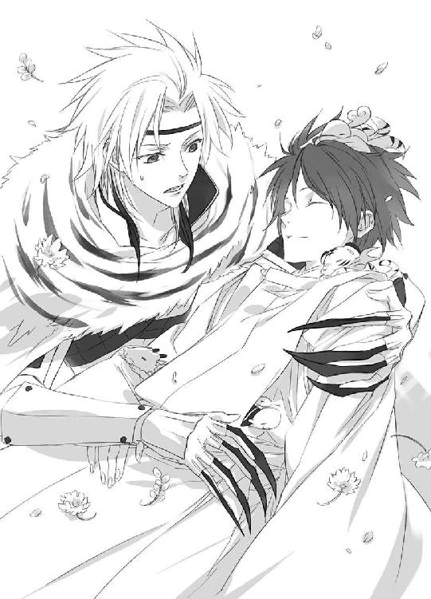
14
「心配したんだからね！」
清志朗は半泣きの顔で怒りながら、平手で叩きつけるように蒼司朗の背中に湿布を貼る。
「いててててて☆！ きよちゃん、もっと、やさしく......」
全身筋肉痛のビッキビキ☆でベッドにうつ伏せた蒼司朗は、貼りつけられた湿布に苦悶する。
「また四神変化して、病院に運ばれたって聞いたから......。本当に......」
清志朗は洟を啜り上げる。『審判の日』に参加すると聞いたときから、何だか嫌だなぁと思っていたのだ。前回の四神変化のときには、輸血しなければならないような状態だった。奥庭の四神に悪気はないのだろうが、四神変化の回数を重ねる度に、蒼司朗の命を削っているように思えて、怖かった。
今、蒼司朗がいるのは、点滴などをする患者のための処置室だ。前回、前々回と同じように、病院に運ばれた蒼司朗は、すぐに精密検査を受けたが、異常なしだった。四神変化で酷使された筋肉が悲鳴をあげていたので、湿布だけが処方された。二、三日で、回復するだろう。
「いやー、目ぇ覚めたら、そこらじゅうビキビキでまいったよ～」
蒼司朗は苦笑する。
（夢じゃ、なかったんだよな）
地下ホールで、確かに蒼司朗は四神変化した。蟲を浄化した。
蒼司朗の周りにいるピヨ四神は、蒼司朗を癒すように、腕や肩をぺろぺろと舐める。
（何か......ちょびっと縮んでないか？ こいつら）
ピヨ四神を見つめ、蒼司朗は考える。最初に四神変化したときのように、目も開かないようなチビチビサイズのピヨピヨ四神になったというのではないが、丸顔のぽやぽや具合が、何だかいつも見ているより、もっとあどけないような気がする。
（ま、そのうち元に戻るだろ）
前の、ピヨピヨ四神でも、しばらくしたら元のピヨサイズに戻ったのだ。
「ごめんね、清ちゃん」
ぺたり、湿布を貼ってくれた清志朗を見上げ、蒼司朗は謝る。
「......うん」
ちょっと拗ねたような顔で、清志朗は頷く。
（清ちゃんでも、こんな顔するんだなぁ）
いつでも『できる優等生』で、落ち着いているイメージが強かったので、清志朗のこんな表情を見られて、不謹慎だけど蒼司朗は嬉しい。ただ一人の従兄弟だから当たり前なのだけれど、清志朗にとって自分が特別な人間であると、実感できる。
ぺたり、蒼司朗に湿布を貼りながら、清志朗は微妙な違和感に眉を顰める。
（何だか、蒼くん......）
五センチぐらい、背が縮んでいる、ような？
（ま、まさか、ね）
清志朗は、気のせいだと心の中で三度唱えて、そのことを考えないようにする。
学年一小柄で、身長にコンプレックスのある蒼司朗に対して、『縮んでないか？』は、絶対に禁句だ。
「こんにちは」
差し入れの牛丼を持って、小此木神官長は蒼司朗の様子を見に訪れた。
「こんにちは、小此木神官長。蒼くんが、ご迷惑をおかけしました......！」
恐縮して頭を下げる清志朗に、小此木神官長は笑い、筋肉痛に顔を顰めながらも起き上がろうとする蒼司朗の頭を撫で（る振りをして押さえつけ）る。全身筋肉痛の蒼司朗は、早々に抵抗を諦めた。
「いえいえ。今回も蒼司朗くんの活躍で、とても助かりましたよ」
蟲は見事に浄化され、蓮華草の花畑が残った。
「事前に処置しておいて、よかったですねぇ」
言われて、小此木神官長に押さえつけられながら、蒼司朗は目を瞬く。
「事前の処置？」
そんなもの、した覚えは......。
わからないという顔の蒼司朗に、小此木神官長は懐から、竹筒の細い水筒をひとつ取り出して見せる。
「始まる前に、飲んだでしょう？ あれ、蒼司朗くんにはよく効くんじゃないかと思ってたんですよね」
飲めと強制した、竹筒水筒の水♡
あれは、蒼司朗が浄化した蟲で作った、『よく効く帝都の薬』を溶かした水だ。
これまでは、四神変化をして蒼司朗が痛い思いをしてから、この薬を使っていたが、先に処方しておいたらどうだろうかと、小此木神官長は考えたのだ。蒼司朗が何か飲むと、ピヨ四神もほしがるだろうと思ったので、ピヨ四神用の美味しい清水も準備しておいた。
狙いはばっちりである。
言われて、蒼司朗は思い出す。
「あぁ......！ 何かわけわかんない物、飲みました！」
「蒼くん......」
（何かわけわかんない物って......。よく飲んだね）
小此木神官長が差しだす物だから、拒否権はないのだろうが、人がいいのか豪胆なのかと、清志朗は蒼司朗に呆れる。
小此木神官長は、蒼司朗の頭を撫でる。
「短時間でしたけど、今回の四神変化は成功と言ってもいいでしょう。がんばりましたね」
労われ、うつ伏せに寝転んだまま、蒼司朗は微笑む。
「祝詞をあげてくれている神官長たちの声、聞こえました」
「そうですか」
神官の修行は、確かに蒼司朗の力になっているとわかり、小此木神官長は満足する。
「後は、しっかりご飯を食べて、体力をつけましょうね。他の四神の戦士の皆さんのように、長時間の四神変化ができるようになるでしょうから」
いつかはわからないけど♡
「あ、小此木神官長、あの輿って、誰が乗ってたんですか？」
誰かがいる気配はするのに、最後まで蒼司朗には誰が乗っているのかわからなかった。
尋ねられ、小此木神官長は微笑んで、懐に入れていた人型の紙を取りだす。
「誰も乗ってませんよ♡」
形代を置き、厳重に強固な結界を張って、人がいるように見せかけただけ。
「だって、あんな危険な場所に、帝や若様をお呼びできませんよ。そうでしょう？」
慣習としては、『審判の日』の儀には帝が立ち会うことになっていたが、今回は帝の命を狙っている櫛灘豹磨の審判だったので、輿は空のまま、櫛灘豹磨にだけ、帝の存在を感じられるよう策を巡らせた。
（オレはいいんですね......）
大事にされてるんだか、いないんだかと、蒼司朗は心の中で滂沱と涙する。
ちら、と、開いている扉のところに人影が見えた気がして、蒼司朗はそちらに注目する。
処置室内の様子を窺うように、ちら、と顔を見せた篠原勇輝と、蒼司朗はばっちり目が合った。
「篠原......」
名を呼んだ蒼司朗の声に、小此木神官長と清志朗も、入り口のほうを見る。
「いらっしゃい、勇輝くん。蒼司朗くんのお見舞いですか？」
小此木神官長は篠原勇輝に微笑み、清志朗は深々と頭を下げる。
今回も、蒼司朗を病院に運んでくれたのは、篠原勇輝だ。むかつくから蒼司朗には黙っているようにと言われたので、清志朗は蒼司朗にそのことを教えていない。
蒼司朗は無邪気に篠原勇輝に笑いかける。
「よー、篠原！ オレさー、また皆に迷惑かけたんじゃないか？ ゴメンな」
四神変化を終わらせた辺りから記憶が飛んでいて、昏倒したときのことを、蒼司朗はまったく覚えていない。
篠原勇輝は蒼司朗に向かって、思いっきりアカンベした。
「ぶわーっか！」
力いっぱい罵倒して、篠原勇輝は処置室の前から立ち去る。
「んな......、何だと、こらぁっ！」
怒鳴って起き上がろうとした蒼司朗は、しかし筋肉痛に阻まれて撃沈する。
「ぐぬぬ......！」
「あはは。それだけ元気があったら、大丈夫ですね」
筋肉痛だろうなーと思うところを、小此木神官長は容赦なく突く。
「ぐあっ！」
ピンポイント攻撃がヒットして、痛みに涙を浮かべて、蒼司朗は空を搔き毟る。
「お大事に、蒼司朗くん。また明日ね」
小此木神官長は、にこやかに処置室を退出する。
「あぁ、今日のはテイクアウトにしましたから♡」
小此木神官長の言葉に、差し入れの牛丼の包みを見、蒼司朗と清志朗は顔を見合わせる。
「見りゃわかるよな」
「だよね」
病院の玄関で、小此木神官長を待っていた篠原勇輝は、確認する。
「小此木神官長、あいつ縮んでなかったですか？」
背負って、病院まで運んだ感じが、何だかちょっと、この前と違うような......。
精密検査の結果を聞いていた小此木神官長は、くすっと笑う。
「奥庭の四神様も縮んでましたから、一緒に戻るんじゃないですかねぇ」
よくわかんないですけど。
湿布を貼り終えた蒼司朗は、差し入れの牛丼をピヨ四神と一緒に平らげて病院を出、清志朗と別れて奥庭に向かう。
「......あれ？」
門が開いていた。
「ミキュキュ」
「キュウキュウ」
「チュン」
「「（しゅー）」」
ピヨ四神は大喜びしながら、奥庭に入る。
奥庭には、先客がいた。
「────若様」
蓮華の花冠を被って首飾りをかけ、蓮華の花の蜜を吸っていた若様を、蒼司朗はきょとんと見つめる。
蓮華の花は、金の髪の麗しい若様に、とてもよく似合っていた。
声をかけられ、蓮華の花を銜えたまま振り返った若様は、ぽっと耳まで赤くなる。
「こ、これは、その......！」
うまい言い訳が見つからなかった若様は、くるっと身を翻し、もう一方の門から逃げた。麗しい若様は、その見た目に相応しく、とてもか弱いが、駆け足はめっぽう速い。
全身筋肉痛の蒼司朗は、愛用の枝打ち斧に縋るようにして奥庭まで来たので、若様がスキップしていても追いつけなかっただろうが。
門の外から奥庭に投げこまれたらしい蓮華草の山（奥庭の門は開けないし、奥庭には入れないので、大砲に詰めて飛ばしたのじゃないかと、蒼司朗は思う）を、蒼司朗はしみじみと眺める。
そして、小此木神官長の謎の言葉を思い出した。
「テイクアウトって......、これかぁ!?」
甘い蜜のある蓮華草の山に、（蒼司朗とついさっき牛丼も食べたのに）ピヨ四神は突撃した。
「......緑肥だな、これは」
地下のホールは、畑にはならない。
処理に困ったと思しき大量の蓮華草を見つめ、蒼司朗は虚ろに笑った。
了
ようこそ帝都へ
帝都観光は、帝や若様の飾らない日常に触れることのできる機会でもある。
「ここよここ！ このお店で、若様がお昼ご飯を召し上がったんですってー♡」
「きゃー♡」
「入ろ入ろ♡」
「すみませーん、若様が召し上がったのと同じ、カニ釜飯くださーい」
若様チェックをしてきた修学旅行の女子高校生たちは、賑やかにはしゃぎながら、城下の釜飯屋に入っていった。
ちょうど近くを通りかかった蒼司朗は、パワフルな女子高校生たちに気圧される。
「何かよくわかんねーけど、すげーな」
さすが若様。
「若様や帝が来店されたお店って、人気だからね」
くすくすと笑う清志朗は、帝都で生まれ育ったので、こういう光景にも慣れっこだ。
「でも、なんで知ってんの？」
女子高生たちが入っていった店には、それらしい貼紙の類はない。
「新聞とか、帝月報をチェックしてるからじゃないかな」
「帝月報？」
「ほら、あれ」
清志朗は、土産物屋のショーウインドウのすぐ向こうに見える新聞雑誌売り場を指差す。若様や帝の行動は、簡略化されて新聞に毎日掲載されているし、一ヶ月分をまとめたものが冊子になって毎月刊行されている。
「へー、こんな物が」
蒼司朗は土産物屋に入り、帝月報をぱらぱらと捲る。
「ミギュ？」
「キュオ」
「チュピ」
「「（しゅー）」」
字は読めないが、写真はわかるピヨ四神は、蒼司朗を真似して雑誌を覗きこむ。
（帝や若様のプライベートって、ないも同然だなぁ）
記載されているのは、個人的に公表しても差し支えないような情報なのだろうが、分刻みで記録されている行動を見て、蒼司朗は溜め息をつく。
「蒼くんは、あんまりこういうお土産屋さんに入らなかったよね」
蒼司朗は幼い頃から、休みになる度に何度も帝都と巌手を往復していたけれど、清志朗には蒼司朗を土産物屋に案内した記憶はない。
「だって、父さんも母さんも帝都の人だったしなー」
蒼司朗は両親が帝都から巌手に移った後に生まれた子供なので、帝都が珍しいが、両親に観光客用の土産は必要ない。店名と商品名を指定されて、買って帰る物がお土産だ。
「────坊っちゃん坊っちゃん、いい写真入ってますよ♡」
こそこそっと近寄ってきた、マスクにサングラスに帽子とコートという、怪しい大人に背中を向けたまま声をかけられ、訝しみながら振り向いた蒼司朗は、がっくりと脱力する。
「小此木神官長......」
ピヨ四神が警戒しないわけだ。
「こんにちは」
清志朗は律儀に（怪しい大人に）挨拶し、蒼司朗は雑誌を棚に戻して首を傾げる。
「写真ですか？」
「そーそー♡」
「レア物入荷だよ～」
小此木神官長の陰から、ぬっと現れた青年に、蒼司朗と清志朗はびっくりする。
「おや、藤丸くん♡」
小此木神官長は、にこにこと柳生藤丸に振り向いた。
「大丈夫？ 清ちゃん」
「う、うん......」
（柳生先輩って、いつも気配消して現れるんだよなぁ......）
「これなんて、編集の担当女史にいいんじゃないですか？」
ぴっと指で挟んで柳生藤丸がチラ見せしたものは、蓮華の花冠を被った愛らしい若様のベストショットだ。まだ蓮華の首飾りはない。
「それ、どうやって......」
（奥庭にいたときの若様じゃないのか、あれ）
蒼司朗は目を丸くし、写真の若様の無邪気な笑みを見て、清志朗は思わず赤くなる。
「うーん、なかなかいいですねー♡ 校閲さんや印刷屋さんにも、ぜひ贈りたいですね」
小此木神官長は、大きく頷く。原稿遅くて、御迷惑おかけしましたー☆
びっくりしている蒼司朗に、柳生藤丸はウインクする。
「蒼司朗様も、買わないー？」
ほら、と柳生藤丸は、牛車の外にいる神官装束の蒼司朗と、牛車に乗っている若様の、お手々繫ぎベストショットの写真を見せた。帝都大通り西公園でのアレに、蒼司朗は驚く。
「なっ、なななっ......☆！」
思わず写真売り場のコーナーに走りそうになった蒼司朗の襟首を摑み、柳生藤丸は笑う。
「このお宝写真は、蒼司朗様にだけだってば」
観光客用のお土産品にするには、ちょっと乙女の妄想を刺激するヤバイ物だ。
「ミギャギャ」
「キュアキュオ」
「チュピチュピ」
「「（しゅーしゅー）」」
「欲しがるな！」
「「「「「ぶー☆」」」」」
小此木神官長は、五千円札を柳生藤丸に渡し、写真を回収する。
「今回も榊先生のイラストはステキでしたねー」
「キャラもお客様も流先生も、大喜びですよ。本当、ありがとうございます♡ です」
柳生藤丸は、カメラ目線でウインクを送る。
「残りのレアもの写真は、出版してくださったエンターブレインさんに贈りましょうか」
「この本をお買い上げくださった、読者の方にも、そのうち全部見せてあげられたらいいですねぇ。きっと、鼻血もののお宝写真が、たんまりありますよ～」
ふっふっふっふっふ～♡
何だか悪企みをしている柳生藤丸と小此木神官長から、蒼司朗と清志朗は距離をとる。
「（清ちゃん清ちゃん、いったい誰が、あの写真撮ってるのかな？）」
「（────あぁいうのも、公儀隠密の仕事なのかな......）」
こそこそと蒼司朗と清志朗が囁きあっている頃、若様の警護の任に就いて木の枝の上にいた柳生真純は、吹き矢（若様に近づく不埒な者撃退用）と望遠レンズ付きカメラ（ベストショット撮影用）を抱え、くしゃみをしていた。
二○○九年七月十七日 流 星香 若様ブロマイド、ぜひコレクションしたいです♡
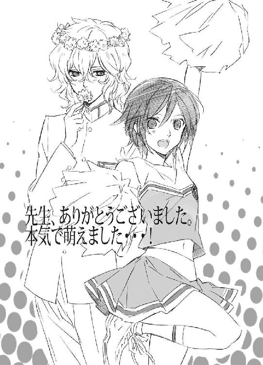
著者
流星香
Seika Nagare
９月28日生まれ、天秤座、Ｂ型。大阪生まれ大阪育ちの、大阪在住大阪人。お祭り騒ぎ大好きな、明るく正しい子どもの味方である♡
戦国時代ファンタジーでデビュー。ファンタジー作家として、これまでに多数の著作を発表していて、西洋風、現代モノ等、守備範囲はファミレスのように品揃えが豊富である。
お茶の時間をこよなく愛し、綺麗で美味しいお菓子からたくさんの元気をもらっている♡
イラスト
 空也
空也
Kuya Sakaki
東京在住。
絵面を華やかにする為に、花でなんとかしようと、花図鑑を開くことがよくあるのですが、大抵目的を忘れて読み耽ってしまします。
図鑑おそろしい。
電子版 ビーズログ文庫
お庭番望月蒼司朗参る！
神官修行と審判の日
著者／流星香
イラスト／空也
2013年6月28日電子版（EPUB3）ver.1.0制作
発行者 浜村弘一
発行所 株式会社 エンターブレイン
http://www.enterbrain.co.jp/
デザイン 永野友紀子（Zapp!）
(c)2009 Seika NAGARE
PUBLISHED BY ENTERBRAIN, INC.
本電子書籍はビーズログ文庫『お庭番望月蒼司朗参る！ 神官修行と審判の日』
（2009年8月24日発行 初刷）を元にして制作しております。